| 博士の奇妙な思春期 | |
| 斎藤 環 | |
| (2017) | |
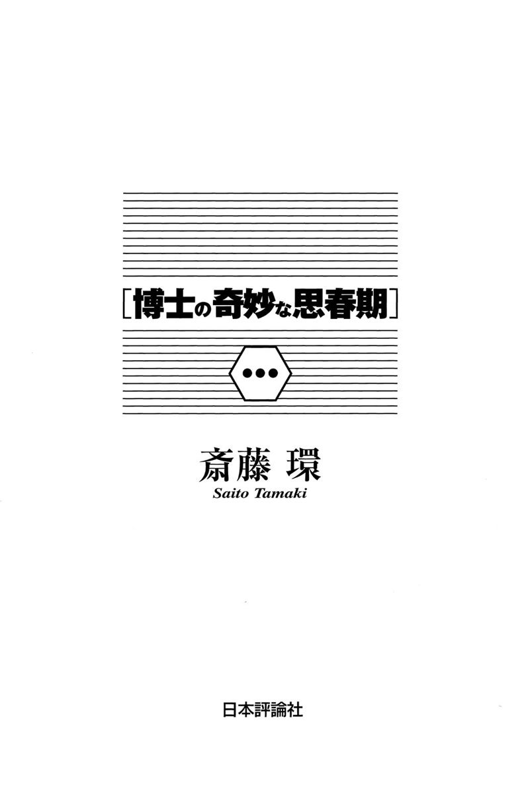
この電子書籍は、縦組の底本を元に作成しました。
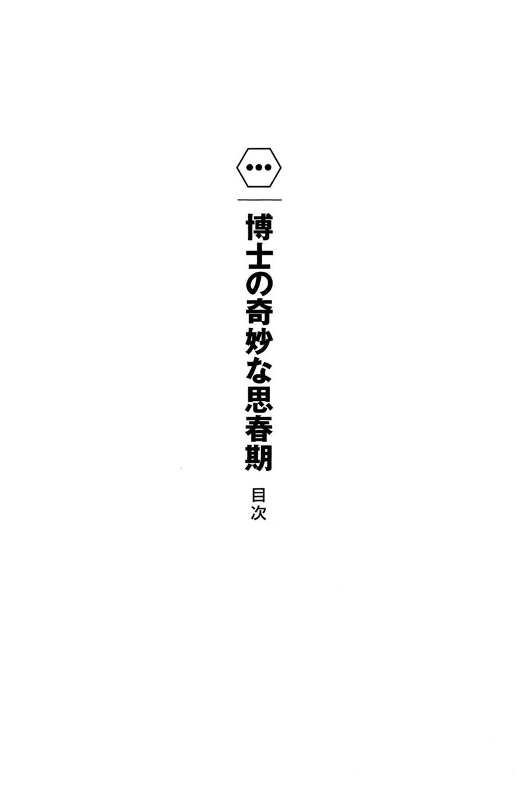
はじめに／ コミュニカティヴな思春期／ ひきこもる思春期／ 思春期の両極化
「おたく」とは誰か／ やおい文化の特異性／ セクシュアリティの非対称性／ 精神分析の空間／ 欲望の非対称性／ 「ショタ」の問題系／ 再び、精神分析について／ 「虚構化」と「所有」／ 創造者としての「おたく」／ おたく表現の変遷／ 「スーパーフラット」空間
「楽園」を訪問する／ ヤマギシ会とは／ 脱会者への聞き取り／ 解離状態の関与／ ヤマギシの子どもたち／ カルトとひきこもり
ポケットモンスター再考／ 「代理モンスター」もの／ 「ポケモン」＝「野生の思考」か？／ 表現の系譜
減少する境界例？／ 正しいＢＰＤの作り方／ 素材と治療者の資質／ 治療における基本的理念／ 継続と嗜癖化へ向けて／ 分裂から解離へ／ ヒステリーの視点／ メディアと自意識の形式／ おわりに
はじめに／ ひきこもれ？／ 社会事象の精神医学化／ これさえなければ／ ひきこもりと犯罪／ 隠喩としてのひきこもり／ おわりに
はじめに／ リストカットの「歴史」と特徴／ 自殺･自傷と物語／ 性差、処女のタブー、そして去勢
ゲームおたくの生活と意見／ 「アウラ」の変質／ 動物化か倒錯か
社会の心理学化／ 報道の心理学化／ 誰が現実と虚構を混同しているか
精神分析とシニシズム／ ひきこもりと性／ タブーとリアリティ／ 換喩的な移動としてのタブー／ 「死」と「お金」のタブー／ タブーから儀式へ
二次性の「浅い強迫」について／ 強迫と文化／ 強迫の条件／ 強迫のシステム
はじめに／ 「専門性」の欠如／ メディアと思春期／ 境界性人格障害からの経験／ ラカンの意義
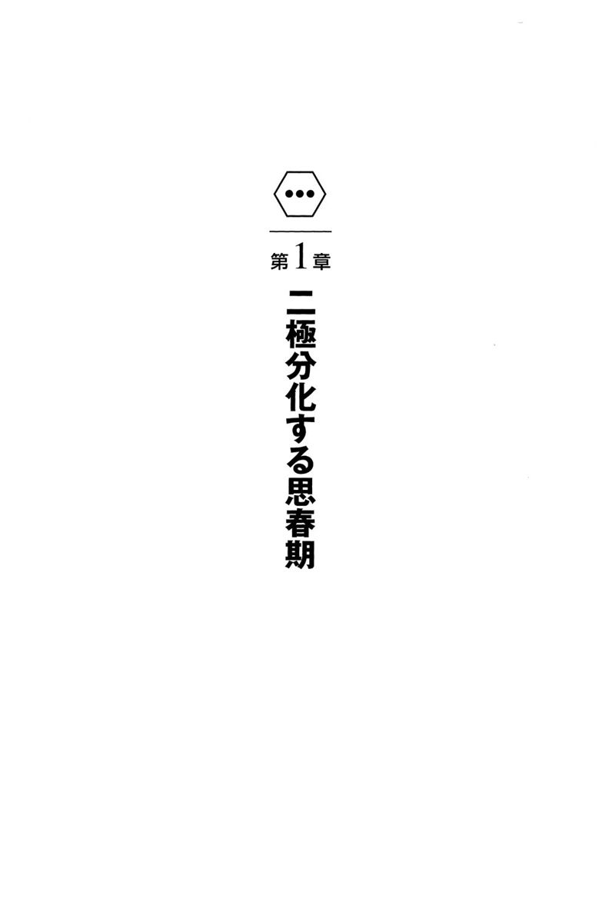
本書の主要なモチーフは、思春期 メディア・セクシュアリティである。ただし、症例報告はほとんど登場しない。それはプライヴァシーへの配慮ということもあるが、私自身が、ケースレポートを書いたり読んだりするのが苦手であるためだ。だから強いて言えば、提示される事例は私自身ということになるだろう。
議論はしばしば、極端な具象と抽象の間をさまようことになろうが、それはなかば意図されたことである。テーマの中心は臆面もなく「倫理」であり、しかしそれは、通常医師に期待される倫理とは、およそ別種のものにみえるかもしれない。私の言う「倫理」とは、学習と分析によって獲得される「リアルさの文脈」を意味するからだ。倫理性をはかる唯一の基準が、その行為的ないしは理論的リアリティの強度であるということ。ひとまずはここに基準点をおこう。ここから始まる道のりは長い。
臨床家としての私のモットーは、「理論は過激に、臨床は素朴に」というものだ。わが敬愛する精神病理学者・内海健氏も「戦略的エポケー」を提唱しつつ、さきの私の立場にも賛意を表明されている（私信）。内面のカオスをぎりぎりまで複雑化し、同時に実践としてはごく常識的かつ穏当であること。これらは言うなれば、意図的に解離を呼び込むような姿勢である。しかし私は、ある種の解離を徹底することで、はじめて見いだされるリアリティの核が存在すると信じている。「科学と祈りのはざま」（平沢進）にある精神医学において、こうした解離はむしろ必然の要請ではなかったか。たとえばフロイトが神経学から精神分析に転じたことは、うわべは単なる学問的な転向である。しかし、彼が失語症学から精神科臨床に持ち込んだものは、決して少なくなかった筈だ。ともあれ、こうした解離が貫かれることで、いずれの領域に属するともつかない、奇妙でリアルなコアのようなものがみえてくるだろう。まさにそれこそが、精神医学における倫理の核なのであり、この存在への期待ゆえに、われわれの日々の仕事も創造的な輝きを帯びる。
本書は雑誌『こころの科学』での連載をまとめたものである。連載当時のタイトルは「レピッシュ思春期現象学」というものだった。この「レピッシュ」という言葉については、いささか解説が必要かもしれない。統合失調症の「児戯性」を意味するこの語を私は偏愛している。余談めくが、精神病理学者は統合失調症のどのタイプに魅せられるかによって分類可能であるという。さきの内海健氏、中井久夫氏らが緊張型を「出自」とするなら、私は破瓜型の患者さんから多くの臨床的ヒントと発想を得てきた。漫画家の吉田戦車論や映画監督のデヴィッド・リンチ論（拙著『文脈病』青土社、一九九八所収）などはその成果の最たるものである。これらの表現者は、まさに彼らがレピッシュであるがゆえに創造性を発揮している。その創造の過程には異様、可憐、無垢、素朴、単純、消尽、強度などの諸エレメントが潜在する。発想が紋切り型に陥ることをもっとも怖れる私のような書き手にとって、レピッシュたらんと欲することは、ほとんど倫理的依り代と言ってよいくらいだ。
本書では、臨床経験もメディア上の事象も社会風俗も、ほぼ同じ文脈で取り上げる。精神科医がこうした社会評論めいた文章を書くことには、批判的な方もおられるだろう。しかし、決して居直るわけではないが、私はまさに私の個人的経験を通じて、精神科医がその診察室から「出立」することの意義を痛感してきた。異なった領域の人々に接し、およそ臨床からはかけ離れたテーマについて考え、それを臨床に還元すること。そのような解離した営みは、十分に可能であるように思われる。
たとえば「解離現象」ないし「多重人格」について、さまざまなモデルが提出されてはいるが、残念ながら、精神科医の手になるもので、いまだ、これはという論文を読んだことがない。あえて言えばこの領域では、効用のみを優先して解離現象を性急に解釈しようとした結果、フロイト─ラカンの切り拓いた精神分析の地平から、むしろ後退が起こっているようにすら思われる。ただし、これをもって精神分析の敗北を宣言するような愚かしいナルシシズムにも与するつもりは毛頭ない。他の章でも述べているように、「解離」に関する私の発想は、実は臨床経験のみから得られたものではない。村上春樹の九〇年代以降の小説と翻訳（とりわけ『心臓を貫かれて』文藝春秋、一九九六）、これに加えて社会学者・大澤真幸氏の論文（雑誌『群像』に一九九九年一月から二〇〇〇年一二月まで連載された「〈自由〉の条件」）、ならびに大澤氏との対話から多くのヒントを得たものである。また今回のテーマのひとつである「ひきこもり」問題について有益な示唆を与えてくれたのは、やはり社会学者である上野千鶴子氏や、哲学者の浅田彰氏との対話であった。
ひるがえって考えれば、精神医学の巨人たちは、まず何よりも、その知的雑食性において桁外れの人々ではなかったか。フロイト、ラカン、サリヴァンらのさまざまな逸話、あるいはわが国で言えば、中井久夫氏の翻訳、神田橋條治氏の手品、木村敏氏の音楽評論などがただちに連想されよう。彼らの業績は、こうした知的越境からもたらされたと考えることは冒涜であろうか。しかし私は、まさに彼らの仕事ぶりから、越境し続ける勇気を与えられてきた。それゆえ本書が、ほとんど常に境界的な事象を扱うことになろうとも、それはなかばは必然的ななりゆきなのである。
博報堂の広報誌『広告』にかかわるようになったのは、一九九八年の暮れのことである。私がいくつかのマイナーな雑誌で評論もどきのことを書き、それをまとめて『文脈病』という、わけのわからないタイトルの本を出したりしている姿がたまたま目にとまったらしい。以来、ときおり雑誌の特集にコメントしたりする関係が続いている。この雑誌での最初の仕事が、渋谷と原宿での若者インタヴューだった。
私自身、診察室では一〇代、二〇代の若者と向き合いつつも、そこで出会う若者たちと、メディアが報ずる若者たちとの間には大きな隔たりがあるのではないかという懸念に駆られていた。おかしな言い方かもしれないが、もう若いとは言えない私にとってすら、診察室での若者たちはわかりやすかった。彼らの葛藤や矜持、ストレスや外傷に対して、私は比較的容易に同調することができた。しかし世間は「若者がわからない」としきりに言う。このギャップは何によるものか。原宿と渋谷の若者たちに話を聞いて、そうしたギャップのありかがおぼろげに見えてきた。
インタヴューに応じてくれたのは、原宿系では服飾専門学校生（女性、一九歳）、ヘアカラーリスト（男性、一九歳）、音楽専門学校生（男性、一九歳）と、渋谷系では高校生（男性、一七歳）、短大生二名（いずれも女性、一九歳）の六名である。その結果は、当初の予想以上に対照的なものだった。以下、両グループの相違点を簡単に整理してみる。
まず原宿系ではほぼ全員が、自分の才能や将来の目標について、はっきりした具体的なイメージをもっていた。現在の待遇などに不満はあっても、自分という存在のありようについては、それほど深刻に悩まない。一方、渋谷系の若者は、現在の生活を楽しみつつも、本当に自分がしたいことや、将来の目標などについて正面から問われると、口ごもってしまうことが多かった。対人関係では、渋谷系のほうが社交的であり、友人の数も多く、家族との絆も深い。一方、原宿系の若者は、友人や恋人はいるものの、一人で過ごす時間が比較的長かった。メディアについてのかかわりはさらに対照的である。原宿系はＴＶ、ＣＤ、映画、などのいずれかについて積極的な関心をもっているが、渋谷系では、そうした関心がかなり薄い。映画にせよ音楽にせよ、友人たちと楽しく過ごすための、話題のひとつにすぎないという印象があった。
これに引き続き、一九九九年末には、今度は池袋周辺を地元とする高校生六人に対してインタヴューを試みた。その結果は、前回のインタヴューの結果をいっそう裏づけるようなものであった。いくつか印象的だった点について述べておく。
今回の対象者は全員が一七歳の高校生ということもあり、おおむね渋谷系の若者の特徴が該当する。しかし驚くべきは、彼らの対人関係のありようである。ほぼ全員が、毎日のように放課後も友人たちと深夜まで遊んでいる。授業が終わると、まず学校の仲間と近辺のカラオケなどでひとしきり遊ぶ。帰宅するとジャージに着替えて出かけ、「地元つながり」の友人たちと遊ぶ。帰宅はしばしば深夜に及び、ときには外泊もする。この遊び方には、あまり男女間で差は認められない。むしろ思春期以前の男女間にみられるような、わけへだてのない友情のもと、彼らは楽しげに群れて遊ぶ。
ときには飲酒や喫煙も辞さない彼らの遊びは、しかし必ずしも不健全ではない。カラオケやゲーセン（ゲームセンター）、ウィンドウ・ショッピングなどがひとしきりすんでしまえば、彼らはとにかく「たまる」のである。路上で、ファーストフード店で、あるいは友人の家で、彼らはたまる。たまって何をするか、ひたすら語るのである。何を語るか。おおむね恋愛について、それから人間関係について。彼らとて仲違いをすることもあるらしいが、その場合はともかく、「オール（ナイト）」で徹底的に語ることで解決するらしい。そう、彼らはきわめてコミュニカティヴな信頼関係で結ばれている。性格傾向はさまざまであるにもかかわらず、例外なく彼らは「語る存在」なのである。
さらに全員が携帯電話を所持し、そこには二〇〇人以上の名前が登録されている。はじめての友人を紹介されるときは、とりあえず携帯ナンバーを交換することが一種の礼儀となっている。同じ学年の生徒なら、八割近くは名前と顔が一致するという。みずからの高校時代を振り返っても、これほど広範囲で親密な交友関係は存在しなかったと思う。果たして携帯電話の普及のみで、このような変化を説明できるものだろうか。
彼らは、インタヴューだからといって妙に構えたりしない。われわれの前でも、たまり場にいるかのごとく平然とお喋りし、ふざけ合い、おもむろに化粧を始めたりする。私はすっかり感心して、これこそは噂に聞くところの「他者」に違いない、などと独りごちたが、むろん浅はかな感想にすぎない。
こうした若者が大量に存在する一方で、どうしても他人とかかわれず、ひきこもってしまう若者が増えているという事実もある。こちらの問題については、むしろ私が日常的に診療している対象でもあり、その体験から語ることにしよう。
ひきこもり、閉じこもり、非分裂病性ひきこもり、アパシー、こうしたさまざまな名称で呼ばれる若者の問題行動が、近年知られるようになりつつある。その大きなきっかけとなったのは、二〇〇〇年一月下旬、新潟県柏崎市で起こった少女監禁事件である。事件の猟奇性もあいまって容疑者の人物像に強い関心が寄せられ、彼が十数年間も自宅にひきこもった状態にあったことがわかると、今度はひきこもりに焦点が当てられた。
たまたま『社会的ひきこもり』（ＰＨＰ新書、一九九八）という著書を出版していた経緯もあり、私のような一介の勤務医のもとにも取材の依頼が殺到した。これまでも新聞紙上やＴＶのドキュメント番組でひきこもり問題が取り上げられることはあったが、いずれも一過性のもので終わっていた。しかし今回のひきこもりへの注目は、いまだかつてないほど強く長く持続した。発端となった事件の異常性もさることながら、報道の反響がかなり大きく、それゆえスタッフや編集者が驚いて新たに特集を組み、それがさらに反響を呼ぶというサイクルで広がっていったようである。
私はこの問題について、どのように有効なアピールを展開すべきか、その戦略を常に考えていた。それは決して印税生活を夢想したからではなく、ただ一途に啓蒙のため、それだけが理由である。だから一九九九年七月に『文藝春秋』の取材を受けた際には「ひきこもり一〇〇万人説」を、ほとんど検証なしにぶちあげた。一〇〇〇人に一人なら他人事だが、一〇〇人に一人なら誰にも身近な問題となる。この、あまり上品ではない狙いは効を奏し、「一〇〇万人」の数字はメディアを一人歩きし始めた。もしどこかで「ひきこもり一〇〇万人」という記事を見かけたら、出典は私であること、しかもそこには根拠がないことを思い出していただきたい。
なぜアピールや啓蒙にこだわるか。私はこの問題について、良質の報道がそれ自体、抑止的効果をもつと信じている。つまり、この世の中にはひきこもっている若者が予想以上に多く存在するという事実を知るだけで、救われる若者がたくさんいると予想される。実際にそれを裏づける発言も、当事者から何度か聞いた。それゆえ私が、医師としてというよりは、ひきこもり広報担当者としてこころがけたのは、以下の点を強調することだった。まず、事件とひきこもり問題は別個に考えられねばならないこと。もはやどのような家庭の、どのような子どもであっても、ひきこもる可能性をもつであろうこと。問題の予防ではなく、起こってからの対応が重要であること。ひきこもりの治療は、覚悟と根気さえあれば、決して不可能ではないこと。
それでは、ひきこもりとはなんだろうか。私は彼らを「社会的ひきこもり」と呼んでいる。この言葉はＤＳＭ─Ⅳにおける"social withdrawal"の直訳であり、多くの精神科医が抵抗なく使用できると踏んだためだ。その意味では、近藤直司氏による「非分裂病性ひきこもり」という名称も、流通性が高く評価できる。ちなみに私の師匠にあたる故・稲村博氏はかつて、ひきこもりを含む問題行動の一群について「思春期挫折症候群」というユニークな疾患名を同名の本の中で提唱したが、残念ながらほとんど普及しなかった。この本は七〇─八〇年代の思春期病理を、徹底して事例中心に記述したという点で、きわめて資料的価値の高い本であるが、そのタイトルゆえに価値を減じてしまったことは否めない。それゆえ私は、まずできるだけニュートラルな名前と、診断的に厳密な定義をこころがけた。いずれを欠いてもこうした言葉は、すぐさま屑かご的な診断概念となるか、さもなくば一過性の流行で終わってしまうからだ。
前置きが長くなったが、私による「社会的ひきこもり」の定義は以下のようなものである。
・二〇代後半までに問題化
・六ヵ月以上、自宅にひきこもって社会参加をしない状態が持続
・ほかの精神障害がその第一の原因とは考えにくい
この三項目をみたす事例が「社会的ひきこもり」と呼ばれることになる（ただし現在は、「二〇代後半まで」の項目は定義から外している）。
たったこれだけの定義では、きわめて多彩な事例が含まれてしまうのではないかという疑問もある。しかし実際には、このシンプルな定義に該当する事例の状態像は、ひどくパターン化された、似通ったものになってしまうのだ。少なくとも、不本意な形で起こるひきこもり状態は、多くの人を、きわめて単純かつ貧しい状況へと押しやってしまう。
はじまりは、しばしば不登校である。いったんそこから立ち直るものもいれば、そのまま遷延化してしまう場合もある。ともあれ、いつしか学籍は失われ、気がつくと二〇歳も過ぎてしまっている。お説教や議論を嫌って次第に両親を避け始め、一人、部屋に閉じこもる。どこにも所属していない自分、何ものでもない自分に焦り、苛立ちながら、一歩踏み出せばいいと知りつつ、その一歩がどうしても前に出ない。近隣の住民は、みんな自分が無職でぶらぶらしていることを知っている。妙な事件が続くせいで、週刊誌も「無職男が危ない」と書きたてるし、世間体が悪くて散歩にも出られない。向かいの家で最近やけに強く布団を叩くのは、あれは自分にあてつけているのだ。
それにしても、夕方に起床すると一日が早い。家族が寝静まってから母親が用意してくれた夕食をとり、ゲームやＴＶ、あるいは何も手につかないまま時を過ごして、ようやく明け方に眠りにつく。最後に入浴したのはいつだったろうか。もう風呂も面倒で入れない。一日はこれほど長いのに、振り返ると、過ぎ去った年月の早いこと。学校では親しかった友人たちも、みな順調な人生を歩んでいるし、自分ははるか後方に取り残されてしまった。たまに昔の友人から電話がかかるらしいが、今の自分ではとても彼らに顔向けできない。
両親にはすまないと思う。しかし、こんな自分に育てた両親は、やはり憎い。自分が不登校で苦しんでいたとき、親は何もしてくれなかった。あのとき自分を丸ごと受け止めてくれていれば、自分は立ち直れていたはずだ。今すぐ叩き起こして、この気持ちをぶちまけなければ気がすまない。少しでも嫌な顔をしたら、このあいだみたいに殴りつけてやろう。......こんなことを考える自分は病気なんだろうか。でも、こんな苦しみを味わって生きているのは、世界中で自分一人だけではないのか。何もかもが空虚で、生きていくだけの目的もみつからない。娯楽も趣味もむなしい。それでもどこかに、やり直したい自分がいるから、死ぬこともできない。
これは創作ではなく、ひきこもり事例の訴えの断片を素材とするコラージュである。ひきこもりに伴いやすい症状、すなわち対人恐怖（自己臭、醜形恐怖を含む）、被害関係念慮、強迫症状、家庭内暴力、不眠、抑うつ気分、自殺念慮などに至りやすい、さまざまな葛藤の形が読みとれるだろう。私は池袋の若者たちよりも、ひきこもりの若者たちにより共感しやすいものを感じる。それはひとえに、彼らの葛藤をわがことのように実感できるためでもある。なるほど「豊かな自閉」が存在する可能性をも、私は否定しない。ただしそれを実現するには、自閉の豊かさを享受するための強さと、一種の才能を要するのだろう。やはり大半の若者は、自閉の貧しさに苦しめられるほかはないのだ。
ここで再び、二つのグループを対比的に眺めてみよう。さきの高校生グループは、およそ葛藤というものを知らないという点で特徴的である。彼ら全員が、日常生活において、ほとんどストレスはないと言い切るのだ。私はみずからの体験から、思春期とは外界との摩擦をはじめて深刻に経験し、ストレスと抑圧をくぐり抜けるすべを必死で学習する時期であると信じていた。しかし現実には、このような思春期も存在するのである。
もちろん彼らの家庭環境や経済状態、成績や交友関係はさまざまである。しかし、それにもかかわらず、彼らは一様に「普通」なのである。六人の語り口はほぼ均質であり、いずれも自己言及が得意でない。ファッションセンスはすぐれているが、しかし決して冒険はしない。いみじくも一人が口にした「流されつつも個性的」といったあたりにおさまる。もっとも彼らは全員、ほぼ共通のファッション誌を愛読していた。とりわけ『ｅｇｇ』と『ストニュー（東京ストリートニュース）』は定番で外せないらしい。
なぜ彼らは葛藤しないのか？ それはまさに、彼らがコミュニカティヴであることによるのではないだろうか。通常葛藤とは、ディスコミュニケーションから生ずる。しかし彼らは、トラブルがあればすぐに語り合い、問題点を指摘し合い、妥協点を見いだして解決をはかっている。いわば葛藤は、芽生えかけた段階で摘みとられてしまうのだ。
しかしその一方で私が驚いたのは、この高校生たちのフィクション親和性の低さである。なるほど、彼らはＣＤを買い、映画に出かけ、ＴＶも見る。しかし、ほぼ全員が宇多田ヒカルとドラゴンアッシュを讃え、ロンドンブーツの番組で笑い、最近観た映画は『アルマゲドン』と答えているという事実は、何を物語っているか。つまり、これらの娯楽対象は、対人関係を親密にするための媒介手段のひとつにすぎないのだ。
以上の諸点について、ひきこもり青年たちはことごとく対照的である。彼らの生活は、まず何よりも、葛藤とストレスの連続である。ひきこもり状況については共通するものの、その語り口はかなり多様であり、それぞれに個性的である。フィクション親和性は一般に高く、予想されるほど「おたく」ではないものの、読書や音楽にこちらが驚くような深い造詣をもっていることがある。たとえばある一〇代の事例は、愛読書を問われて真っ先にシオランの名を挙げた。また私と同世代のある事例は、ヒップホップやドラムンベースの最新情報を定期的にメールしてくれる。もちろんこうした趣味性をもつに至る事例はそう多くはないが、高い趣味性と無職ひきこもり状態との深い関係は、『それから』の代助にみるがごとしである。
おそらく今の若い世代には、こうした分極化がいっそう進みつつあるだろう。少なくとも今後、さまざまな問題行動はこれら二つの極のいずれかから生じてくるのではないか。いまだ徴候的な指摘にとどまらざるをえないが、おそらく現代において最も困難であるのは、「中庸を維持すること」なのである。いまやひとつの傾向性が生まれると、それはすぐさま増幅され、全体的傾向として徹底化されてしまう。差異はそのまま解離につながり、類似はそのまま融合へと進む。さまざまなメディアの発達が、こうした過程をいっそう広汎に、しかも速やかに進行させる。
高校生たちの会話を聴いていて印象的だったのは、彼らが用いる強度的表現である。「超～」に代表されるような接頭語や、「寒い」「ホット」といった温度的形容、あるいはまた「すごい」「めちゃめちゃ」などの頻出。彼らのコミュニケーションは、なんらかの意味を伝達し合っているというよりは、そうした強度的な波動を相手に伝え合い、互いに共振し合うための儀式にもみえる。意味や感性で連帯し合う時代は終わり、こうした強度的なものを共有できるか否かで、仲間としての資格が判定される。高校生たちは、こうした強度的なものの発信に長けており、それゆえにこそ強い連帯で結ばれている。一方、ひきこもる若者たちは、強度よりは感性、そして感性よりは意味にこだわってしまうのだろう。おそらく思春期の二極化の背景には、このような価値観の変遷がある。もしそうであるなら、この種の変質を批判したり、あらがおうとしたりすることは、およそ無意味なことだ。われわれにできることは、こうした強度的な波長合わせにも対応すべく、感性と反射神経を十分に鍛えておくことである。そして同時に、みずからは中庸のポジションを維持すること。つまり、またしても臨床家の解離能力が問われることになるのだ。
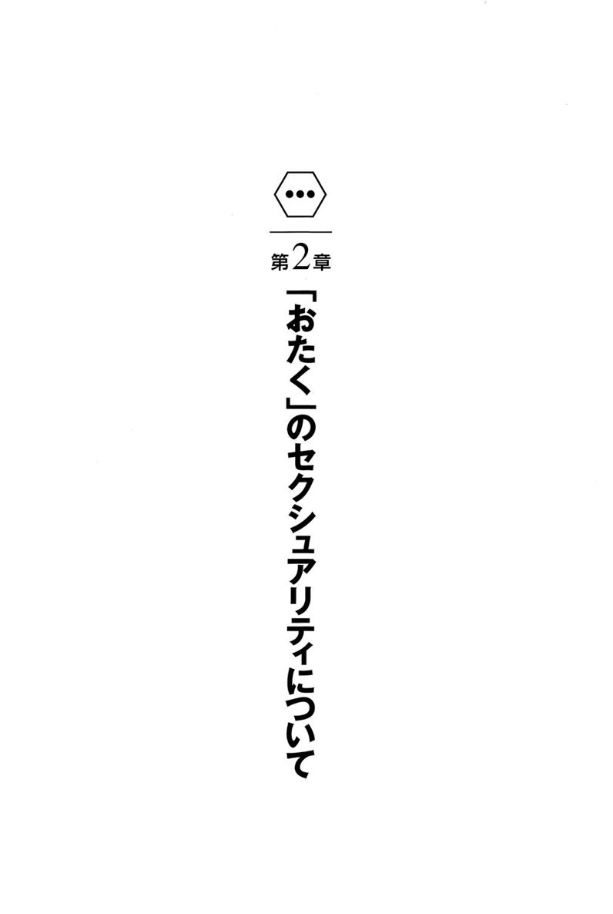
第一章で私は、本書の主題が思春期・メディア・セクシュアリティであることを予告しておいた。本章のテーマは「おたく」である。「おたく」について論ずることは、さきの三つの主題すべてにかかわることだ。ただし、この領域は今なお変容と混沌に満ちている。述べておくべきことはあまりにも多く、限られた紙幅で論じ尽くせる保証はない。ただ、この問題の本質は、言葉が普及しているわりには意外なほど知られていないし、無知ゆえの偏見が流通しやすい状況は依然としてある。たとえばおたくを「シゾイド人格障害」と「診断」してしまうような誤解がその典型である。私見ではまさに「おたく」のような存在こそが、人格障害概念の限界を明瞭に示しているのだが。あるいはこうした誤解は、わが精神医学が関与なき観察体系へと変容しつつある徴候とみるべきだろうか。私はみずからおたくを自称することこそしないが、後述する著書の執筆を中心に、この領域と浅からぬかかわりをもってきた（それをフィールドワークとは呼ぶまい）。それゆえ現時点で、私がこれまでに得た知見を記しておくことにも、多少の臨床的意義はあろうかと考える。
私は二〇〇〇年四月に『戦闘美少女の精神分析』（太田出版、二〇〇〇）という著書を上梓した。漫画・アニメ作品にとりわけ顕著であるように、わが国では「武器を持って戦う美少女」のイコンが一定の人気を集めている。こうした奇妙なイコンの人気は、ほぼ日本に特異的な現象だ。それでは戦闘美少女はいかに生まれ、いかに消費されてきたか。私は本書でひとつの特異な問題系を提出し、結論としてはそれなりに誠実な回答を示しえたように思う。この点いささか自負するところもあるが、今はそのことはおこう。私はまた本書で、かなり詳細に「おたく」の記述も試みている。戦闘美少女というイコンを最も愛好しているのが彼らである以上、これは避けられないことだった。
「おたく」という言葉は、すでに日常的に使用されている。しかし「おたく」のなんたるかを正確に理解している人は、いまだ決して多いとは言えまい。たとえば「おたく＝暗く不潔で、容姿の不自由なマニア」という誤解もいまだ健在である。つまり「おたく」と「マニア」の相違点すら、ほとんど知られていないというのが実状なのだ。この言葉の命名や流通の経緯に関する詳細は私の著書を参照されたい。本章ではおたくそのものについての記述部分は駆け足ですませ、本題である「セクシュアリティと虚構」という問題に多くをさこうと考えている。
さて、「おたく」とは何か。一般的には、成人のアニメファンを指すことが多い。もちろん漫画ファン、ＴＶゲーム愛好家、フィギュアと呼ばれる人形のコレクター、怪獣映画などの特撮ファンなどにまで、その裾野は広がっている。彼らが愛好するのは、本来なら小学校か、せいぜい中学までに卒業してしかるべき対象物だ。しかしおたくたちは、思春期を過ぎて成人してからも、こうした「移行対象」をいっそう深く愛するようになる。その身振りはしばしば現実逃避的とみなされ、このためおたく批判には「現実と虚構の混同」「現実に還れ」等々の紋切り型が定着している。しかし私の知る限り、彼らほど虚構と現実の区分に厳格な人々も少ない。それゆえ私による「おたく」の記述は下記のようになる。
・虚構コンテクストに親和性が高い人
・愛の対象を「所有」するために、虚構化という手段に訴える人
・二重見当識ならぬ多重見当識を生きる人
・虚構それ自体に性的対象を見いだすことができる人
一般に「おたく」に対する視線が冷たいのは、彼らの多くがたまたま不潔であったり、肥満体であったりといった外見的な印象ゆえであると思われる。たしかにおたく固有の外見的特徴なるものは存在するのかもしれない。しかし注意すべきなのは、彼らを批判する言説の大半が印象論でしかないという点である。そして印象論に終始する限り、人はナルシシズムの罠から逃れることができない。そもそもおたく論の不幸は、それが批判であれ擁護であれ、最初から印象論と価値判断にさらされてしまっていた点にある。ここでの私の目論見は、可能な限り価値判断を留保しつつ、おたくの形式的な記述を試みることだ。ただし、このままでは、いくぶんわかりにくいと思われるので、以下に簡単な解説を加えておく。
まず最初の項の「虚構コンテクスト」という言葉であるが、これを単に「虚構」としなかったのには理由がある。おたくは一般に虚構であることそれ自体に価値を求めるが、同時に虚構のレヴェルに対してもきわめて鋭敏であるからだ。発達したメディア環境の内部にあって、もはや現実と虚構との間に単純な分割線を引くことはできない。したがって判断されるべきは、今われわれが見ているものが、現実であるか虚構であるかという問題ではない。問題は「それがどのレヴェルの虚構であるか」という判断なのだ。漫画にしてもアニメにしても、そこには多層的な虚構のレヴェルがある。まず作品に描かれる世界。作中に描かれる作者の個人的な諸事情。作家とプロダクションなどの楽屋裏的世界。それがどのような経路で流通し、どのように受容されるかというマーケティング的世界。おたくが作品を楽しむということは、こうした複数のレヴェルにまたがって楽しみを確保するということだ。私はこれを、古典的な精神医学用語を変形して「多重見当識」と呼ぶことにした。ただしここまでは、マニアの場合にも部分的には該当する。
おたくが最もその本領を発揮するのが、対象を所有し愛するその身振りにおいてである。たとえば年に二回のおたく界最大のお祭り「コミックマーケット（通称コミケ）」には、毎回数十万人のおたくたちが集結して、同人誌の売買やコスプレ（お気に入りの漫画・アニメ・ゲームの登場人物の仮装）などを楽しんでいる。ここに来れば「おたくのこと」がよくわかる。おたくは単なるアニメファンなどではない。おたくであり続けるためには「おたくのこと」をしなければならない。おたくに特異的ないくつかの営為とは、同人誌の作成とコスプレである。それでは同人誌とは何か。コミックマーケットには三万サークル以上が出展しているが、そこで販売されている同人誌の多くがアニメ・漫画・ゲームのパロディ作品である。この事実は重要だ。おたくの主要な活動のひとつが、パロディ作品の制作であるということ。このことは何を意味するか。私はそれが彼らにとっての「所有の儀式」であると考える。彼らは愛する作品をわがものにすべく、作品のパロディ、すなわちさらなる虚構化にいそしむのだ。こうした儀式の結晶のひとつが同人誌なのである。
近年では、こうした自家製の虚構を発表する場として、パソコン通信のフォーラムやインターネットのメーリングリストなどが新たに加えられた。同人誌と違ってテキスト主体のこうした環境では、彼らは「ＳＳ」（Short StoryあるいはSide Story）と呼ばれる小説を書く。これは好みの作品のキャラクターと設定を借用して、自分なりの物語を作る試みである。
同人誌の中でもとりわけ人気が高いのが「一八禁もの」と呼ばれるジャンルだ。これはその名のとおり、ポルノ化によるパロディ作品である。おそらくこの種の作品に、おたくの特性のひとつが最も濃縮された形で表現されている。こうした「一八禁もの」を取り上げて、おたくを嫌悪してみせるのはたやすいことだ。しかしこの種の嫌悪を乗り越えなければ、おたくの本質は見えてこない。さきほどの記述に示したように、「おたく」とはセクシュアリティの問題でもある。虚構そのものに性的対象を見いだすことは、必ずしも容易なことではない。それはマニアのフェティシズムよりも、さらに直接的な嗜好である。つまり多くのおたくたちは、自分の愛好する漫画・アニメ・ゲームの主人公と空想の中で性交渉をもち、そのファンタジーを利用して自慰行為をなすことができるのだ。
ここにおいて特筆すべきことは、おたくのセクシュアリティにおける一種の乖離である。たとえば「一八禁もの」には、さまざまな性的倒錯の描写が含まれる。そこにはしばしば、「ロリコン」すなわちペドフィリア的な嗜好がみてとれる。おたくへの嫌悪感は、こうした彼らのペドファイル的側面においてきわまるだろう。ただちに連想されるのは、もちろん幼女連続殺人事件の宮崎勤である。しかし、案に相違して、おたくの大半は実生活においてはペドファイルではない。彼らは日常においてごくまっとうな異性のパートナーを選択し、性生活も「健全」であることが多いという。いまや一〇〇万のオーダーで存在するおたく人口を考慮するなら、実際の犯罪に至ったケースが数えるほどしかないという事実は、こうした乖離の傍証になりうるのではないだろうか。とりわけ次に述べる「やおい」においては、この乖離がいっそう顕著なものとなる。
おたくについてそそくさと記述したが、このまま駆け足で「やおい」について語っておこう。さきに私はおたくのパロディ嗜好について述べたが、やおいもこの文化圏に所属している。ただしパロディといっても、ここにも一定の作法がある。男性おたくのパロディがポルノ化であるなら、やおいのパロディはホモ化とでも言うべきものである。たとえば『キャプテン翼』や『幽☆遊☆白書』といった少年向けの漫画作品に登場するヒーローたちの関係をホモセクシュアルなものに読み替え、架空のスキャンダルが捏造されるのだ。対象となるのは少年漫画や少年向けのアニメが多いが、このほかにも小説の主人公や実在の野球選手、アイドルなどもパロディ化の対象になるという。一部には周知のことだが、やおいとは元々は「ヤマなし、オチなし、イミなし」の略である。要するに、物語性は一切排除し、ホモセクシュアルな関係性をいかに描写するか、それのみが問題とされるのだ。
まず注目すべきであるのは、やおい作品の制作者および消費者は、そのほとんどが女性であるということだ。さきほどふれたコミックマーケットは、その参加者の過半数が女性である。おたくは男性に多いという定説は、この点からも正当なものではない。ともあれ、その女性参加者のさらに大半がやおい作品目当てなのである。少なくとも、実際にホモセクシュアルな男性がこうした作品を制作したり消費したりすることはほとんどない。この事実はきわめて重要である。やおい作品もまた、その制作者の欲望が直接に反映されていることを考えるなら、彼女たちのセクシュアリティをどのように名づけるべきか。旧来の倒錯理論ではとうてい語りえないような欲望の図式がそこにある。ここでも重要なポイントは、彼女たちの日常的な性生活と、想像上の性生活とが完全に乖離してしまっているという点である。
セクシュアリティを問題にする際、本来なら実際の性行動のほうをこそ対象とすべきかもしれない。しかし私が随所で指摘してきたように、いまや「現実」は多重的なものとなり、確固たる基盤を喪失しつつある。それゆえ性について検討する際にも、性的ファンタジーのほうが素材として適切でありうるのだ。とりわけその形式的側面を分析するには、現実の性行動には不純物が多すぎる。この場合、おたくややおいの多くが性的に「奥手」であることはむしろ有利に働く。性の現実にうとい彼らは、性的ファンタジーをより純粋な形で追求できるからだ。評伝を信ずる限り童貞であったと推測される作家たち、たとえば宮澤賢治や大手拓次らの作品、あるいは建築家のアントニオ・ガウディやアウトサイダー・アーティストであるヘンリー・ダーガーの作品がもつ奇妙なエロティシズムを想起してみよう。その魅力は、セクシュアリティの表現が必ずしも実体験の裏打ちを必要としないことを示唆している。
榎本ナリコという漫画家をご存じだろうか。かつて漫画週刊誌『ビッグコミックスピリッツ』で『センチメントの季節』という人気作品を連載していた作家である。彼女はまた「野火ノビタ」というペンネームで、多くの同人誌を制作しつつ、批評活動を行ってきた。批評家・野火ノビタの作品は評論文を中心にまとめられたアンソロジー『総評』で読むことができる。それによると、彼女はまずやおい系の作家として出発し、ついで、近年話題となり日本病跡学会でも取り上げられたアニメ作品『新世紀エヴァンゲリオン』の批評「大人は判ってくれない」で知られるようになった。これはレインの『引き裂かれた自己』（せりか書房、一九七一）を応用した、なかなか読み応えのある作品である。『エヴァンゲリオン』の監督である庵野秀明氏は、彼女の批評にいたく感動し、映画版の制作に際しては彼女の意見もかなり反映された経緯があるという。
余談はともかく、榎本氏は、さまざまな意味で貴重な存在である。一般にやおい系の作家は、おたく以上にみずからを語りたがらない。彼女たちは作品への愛については滔々と語るが、そこにはおよそ作品分析的な視点は欠けている。同様にやおいそのものについても、これまで十分な分析や批評の対象とはなりにくかった。ところが榎本氏は、例外的にきわめて鋭い批評眼と表現力に恵まれている。正直なところ私には、彼女の漫画作品よりも、彼女の批評文や分析のほうがずっと興味深い。彼女との対談を引き受けた際にも、その作品のファンとしてというよりは、批評家・野火ノビタ氏への関心の比重がきわめて高かった。なお、この対談記事は『別冊ぱふ コミック・ファン』という、比較的マニアックな漫画ファン向けの雑誌に掲載されたものである（八号、二〇〇〇）。ここで語られていることは、やおいのセクシュアリティを解釈するうえで、重要な問題点を多数はらんでいる。それゆえ本章での検討も、榎本氏の発言に大幅に依拠しつつ進めることになろう。
まず「おたくのこと」におけるセクシュアリティの男女差について押さえておきたい。男性おたくがアニメのヒロインに憧れることを「萌える」と称する。自分がそのヒロインのファンであることを表明する際には「私は～（ヒロイン名）萌えですから」という表現をする。ここで注意を促したいのは、この言い方には多分に自嘲的トーンが含まれていることだ。おたくの熱狂には、どこかしら熱狂しつつ醒めているという独特の視点が含まれており、その意味では演技的な側面もある。
セクシュアリティの男女差を問うことは、「萌え」の男女差を問うことだ。そこには歴然とした差異がある。たとえば多くの男性おたくは、ヒロインの造形、つまり姿形の可憐さに「萌える」。あるいはヒロインのおかれた状況、物語の設定などに「萌える」。哲学研究者の東浩紀氏は、前者を「キャラ萌え」、後者を「キャラ立ち」と名づけて区別している。
それでは女性おたく、すなわちやおいの人々は、何に「萌える」か。そもそも彼女たちは、あまりこうした表現を使用しない。しかし榎本氏によれば、やおいの人々は「位相萌え」なのだという。この絶妙な表現は、ちょっと解説抜きではわかりにくいかもしれない。
「位相」とはすなわち、関係性の位相を指している。ある少年もの漫画作品において、男同士の友情や確執といった関係が描かれるとしよう。彼女たちが熱く注目するのは、まさにこの関係性なのである。そこに描かれた微妙なしぐさ、視線、せりふ等々の断片から、こうした関係性をいかに恋愛、すなわちホモセクシュアルな関係性の位相に変換するか。これこそが、やおいにおける普遍的テーマにほかならない。
榎本氏はこうした差異の原因について「男性は自分の立ち位置をしっかり定めないと『萌え』られないから」とみなしている。この指摘は、おたく、やおい問題に限定されない普遍性をもっていはしないだろうか。言い換えるなら、男性は自分の立ち位置が崩されることを恐れる。バリントのいわゆるオクノフィリアとフィロバティズムの対比がただちに連想されるだろう。
男性はセクシュアリティの対象を欲望する際、みずからの立ち位置を定めることがどうしても必要となる。これはファルスならぬ、ペニスを所有する存在としての、どうにもならない宿命でもあろう。ペニスの位置と方向性が定まらなければ、男性はみずから欲するものとすら向き合えないのだ。その意味で「萌え」という言葉は、男性おたくがみずからを欲望の主体として位置づけるべく採用した言葉と考えることもできる。
一方、女性にとって、そのような恐れはさほど切実なものではない。女性が何かを欲望する際には、みずからの主体のポジションなどどうでもよくなる。ひたすら対象に没頭し、みずからを空虚にしてのめり込む。こうした主体の位置の可変性は、たとえば対象への同一化に際して存分に発揮される。やおい作品では、しばしば男性同士の性行為が描かれるが、このとき作り手、読み手のいずれも、性行為において攻める側、受ける側のいずれにも同一化できるのだという。いきおい作品への愛の深さは、男性おたくのそれをしばしば上回る。
この熱意は、作品に対する姿勢の違いとしてもはっきりとあらわれている。たとえば男性のおたくは作品論的な解釈をめぐって対立することが多いが、やおいの女性たちはパロディ化する際のキャラクターの組み合わせ、あるいはいずれが攻め、いずれが受ける側であるかといった関係性の解釈において鋭く対立するのだという。この種の対立は、男性おたくにおいてはまったく考えられない。もっとも、いずれの対立も、さきに述べた「作品の所有」をめぐっての闘争という点では共通している。こうした事実は、例によって「虚構と現実の混同」とみなされるべきなのだろうか。しかし彼女たちは、みずからの作品世界における美少年たちのホモセクシュアルな関係性が、現実にはありえないことをよく知っている。その作品世界に女性がほとんど登場しない理由について、ある女性は「『女性』を描くと妙に現実的になってしまうから」と説明する。やはり虚構と現実の混同は存在しないのだ。
以上述べたことから、おたく、やおいにおけるセクシュアリティの乖離状況についてはある程度理解していただけたことと思う。ここまで述べたことは、おたく黎明期から存在した区分であり、そのぶん男女の棲み分けもかなり画然となされている。しかし近年になって、こうした区分が曖昧化しつつある、ひとつの領域が存在する。やおいからの発展型とおぼしい「ショタ」と呼ばれるジャンルがそれである。前思春期の少年たちのエロスを描くこれらの作品群においては、それを制作する側、あるいは消費する側のいずれにおいても、男女入り乱れる錯綜した状況がある。これはおたくのセクシュアリティ表現における、現時点でのひとつの極北である。
現代において「精神分析」はもはや無効なのだろうか？ 解離性障害とＰＴＳＤが前景化し、生物学的精神医学が台頭する現在、大学の精神医学講座内でも一部の例外を除いて精神分析は疎外されつつある。このことは、精神分析の出自がそもそもアカデミズムに対して周縁的な場所に発生した経緯を思えば、やむをえないことかもしれない。フロイトしかり、ラカンしかり、あるいは古澤平作しかりである。しかし精神分析が「大学の言説」と和解せず、依然として野にあり続けることには、何か本質的な意味があるようにも思われる。ラカン派社会学者の樫村愛子氏は、同じく社会学者である大澤真幸氏から「精神分析に依拠しうる学問的正当性を示せ」という宿題を出されたというが（樫村愛子『ラカン派社会学入門』世織書房、一九九八）、この問いかけに果たしてどのような回答が可能であるか、大澤氏ならずとも興味深いところではある。
私がここで試みている「おたく（やおい）」論は、まさに精神分析に依拠することなくしては成立しないものだ。逆説的な言い方になるが、むしろこの領域こそが、現代における精神分析の正当性を証し立てるうえでは格好の場所なのではないか。「ショタ」そのものについて論ずるに先立って、まずおたく的欲望とやおい的欲望の差異について分析することから始めたい。これはショタという特異なジャンルの性質上、やむをえない迂回なのである。
おたく、やおいについては、いずれもそのイメージだけは流通しているが、現時点では記述や定義が曖昧な存在である。私は、この定義問題を含むおたく論を哲学者の東浩紀氏らとともに電子メールによる共同討議を進めつつあり、その経過は東氏のホームページ上に「メール書評」として掲載されている（ただし二〇〇二年一二月一日現在）。おたくに関する記述は、それがしばしば自己言及性を含むために、厳密であろうとするほど大きな困難を伴う。それゆえ、ここでは記述そのものには深く立ち入らずにおこう。
ここで私が注目するのは、おたく的欲望、やおい的欲望における、決定的とも言うべき非対称性である。ただしこれに先立ち、おたく、やおいに共通する特性を補足的に述べておこう。中島梓氏の『タナトスの子供たち』（筑摩書房、一九九八）は、現役のやおい系作家としての中島氏によるやおい分析であり、それゆえ当事者による自己分析として読める点からも興味深い。中島氏の記述には、私が『戦闘美少女の精神分析』において試みたおたく論と、いくつかの一致点がある。
まず中島は、やおい系の作家がほとんどすべてヘテロセクシュアル、すなわち夫持ち、子持ちであることを指摘し、逆にレズビアンのやおい女性には出会ったことがない、と述べている。これは私による「おたくにはホモセクシュアルが少ない」という指摘に対応する。つまり、やおいもおたくと同様に、セクシュアリティの乖離を生きているということだ。ヘテロな日常を生きつつも、虚構におけるセクシュアリティは、男性同士のホモセクシュアルな関係性へと向けられる。虚構内での性的対象が、現実のそれの代替物ではなく、むしろ虚構空間が自立した欲望のエコノミー空間となっている点もまた、おたくの嗜好に一致する。ホモセクシュアルな男性に関心をもち接近したがる「おこげ」と呼ばれる女性たちの存在はよく知られているが、彼女たちもまた、こうしたやおい的嗜好を共有するという点で興味深い存在である。
もうひとつの共通点は、やおい女性の愛好する対象物が、完璧な虚構内存在であるということだ。私が取り上げたおたく的対象としての「戦闘美少女」は、現実世界には一切の対応物を欠いている。これと同様に、やおい作品は元々がパロディであることを割り引いても、やはり現実にはとうていありえないような性関係が描かれる。要するに、いずれも虚構に対して、自閉もしくは自律したリアリティの空間であることを要請するのだ。
ここから非対称性の問題に入っていこう。おたく（以下、とくに断りがなければ「おたく」はすべて男性おたくを指す）の欲望を象徴するものが戦闘美少女であるとすれば、やおいの欲望は男性キャラクターのホモセクシュアルな関係性によって象徴される。やおい系の作品においては、女性の存在は徹底して排除されるという。たとえ脇役であっても、女性の登場は許されない。吉田秋生の『ＢＡＮＡＮＡ ＦＩＳＨ』と言えば、商業的に最も成功したやおい系作品として知られているが、この文庫判解説に某評論家が「恋愛とは同性間においてのみ可能である」という意味のことを述べていた。この言葉は橋本治氏の名言「友情はセックスのない恋愛である」をただちに連想させる。いずれもやおい系作家、あるいはファンの欲望のある側面を的確に言い当てている。
すでに述べたように、やおい作品ではキャラクターの関係性と心理のダイナミズムこそがすべてである。おたく系作品とは異なり、キャラクターの描写はむしろ中性的になされ、性交渉はきわめて観念的に描かれる。ホモセクシュアルの描写ゆえ必然的に肛門性交が描かれることになるが、それは情緒的なピークを示すひとつの記号として描かれるにすぎず、むしろ性交に至るまでの心理的な高まりや幸福感が丹念に描かれることになる。この点は、性交の視覚的描写に重点がおかれ、心理よりは性感の描写を通じて感情移入を促すおたく系の作品とは大きく異なっている。
やおい作品では奇妙なことに、オリジナル作品との図像的な類似性はあまり問題にならない。さらに言えば、やおい作品の元ネタは、漫画・アニメ・ゲーム作品に限定されず、ミステリー小説やジャニーズ系アイドル、プロ野球選手といった幅広いジャンルに及んでいる。おたく系のパロディが、ほぼ漫画・アニメ・ゲーム作品のみを対象とするのに比べ、やおい系ははるかに自由な対象選択を行うのだ。
こうした相違点は、ヴィジュアル・ショックが重要な要素である少年漫画と、ストーリーと心理描写に力点がおかれがちな少女漫画との相違に平行するものだ。これは単なる個人的な印象ではない。少年・青年向けの漫画で、画力のある作家（大友克洋、江口寿史、荒木飛呂彦など）の場合、単行本のほかに豪華本の画集がよく売れる。しかし少女漫画系の作家がこうした画集を出すことは──多田由美などの例外はあるにせよ──ほとんどない。これは言うまでもなく、画力の差によるものではない。むしろ漫画の消費行動に反映された、欲望の男女差によると考えるべきである。
現実のヘテロな男女関係においては、見かけ上、男性は女性を求め、女性は男性を求めるという点で対称的関係と言うこともできる。しかし周知のように、どのような男女関係であろうとも、男女の欲望の方向は本質においてすれ違ってしまう。その意味では、恋愛とはまさしく幻想の交換にほかならない。この男女の欲望のあり方が構造的にどのように異なっているかを知るには、やはり精神分析、とりわけフロイト─ラカンによるそれを参照しなければならない。
精神分析によれば、そもそも男女の欲望は、その成立においてすでに対照的ななりたちをもっている。
まず、男性の欲望の成立を簡単にみていこう。男性的欲望を最初に成立させるのは、象徴的去勢の手続きである。これは母子の幸福な一体感と万能感の世界に、「父」が介入することで、最初期の母子関係が切断されることである。このとき男の子は、母親にペニスが欠けていることを発見する。この「ペニスの欠如」は、母親の万能性（＝自己の万能性）の断念とともに、ファルスのシニフィアンに置き換えられる。ファルスのシニフィアンを獲得することは、いわば言葉の原器を入手することであり、この段階を経て男の子は言葉を「語る存在」として、はじめて象徴界に参入する。象徴的去勢を経ることで、男の子は神経症的な主体となり、ここからさまざまな欲望が可能になる。こうして成立した男性的欲望は、その根底に去勢不安を抱えており、常に去勢によって失われた対象（対象ａ）を求め続けることになる。対象ａへと向かう欲望は、象徴界の内部において欲望を幻想として具現化しつつ、しかしついに対象そのものに至ることはない。
一方、女性の欲望は、男性よりもやや回り道をすることで成立している。もちろん女性も象徴的去勢をこうむり、神経症的な主体となることには変わりない。ただし女性は、去勢された後に解剖学的性差を発見し、ペニスの欠如という共通点から母の位置へと移動する。男性の場合、ファルスの獲得は母への欲望を妨げなかったが、女性の場合は、母へと向かう欲望を去勢によって方向転換する必要があるのだ。ペニスの欠如という刻印は、女性が母の位置からファルスを求めるという欲望の形式を可能にする。
男性は手に入らない欲望（対象ａ）を目指して隠喩的な連鎖をたどり、そこに幻想＝知を生産する。常に掴み損ねるほかはない対象ａに代わって、男性が所有しようとするのは、（たとえば）女性という名の幻想なのである。
それでは、女性の場合はどうか。女性はまず男性によって欲望される位置（＝母の位置）にみずからを定位する。ここで定位とは欠如態である。女性は象徴界に欠けた存在（「女性は存在しない」）としての定位しかもたない。この欠如したポジションから、女性はみずからに欠けているファルスを欲望する。これは、男性が幻想を形成する方向をちょうど反転した形になる。
おたく的欲望を象徴する「戦闘美少女」は、まさにペニスに同一化した少女（＝対象ａ）にほかならない。おたく男性は、戦闘美少女の所有者たらんとして、その周囲にさまざまな幻想（虚構＝評論、同人誌、小説など）を形成するだろう。しかし、このとき問題の核心にあるのは、戦闘美少女という欲望の対象が、完璧な虚構内存在、すなわち欠如態であるがゆえにはらむリアリティである。私はそれを「視覚的に媒介された空間において反転したヒステリー」であると著書で記述した。詳しい検証は著書を参照されたいが、簡単に要約するなら、私の論点は以下のような構成になっている。
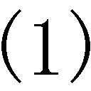 男性が女性を欲望するとき、そこで女性のヒステリー化がなされる。
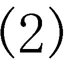 「ヒステリー化」とはすなわち、対象を「可視的で誘惑する表層」と「不可視な深層＝本質（たとえばトラウマなど）」の二重構造において見いだし、欲望することである。
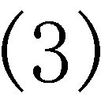 「戦闘美少女」には、さまざまな点で現実のヒステリーに関する特性が該当する。
ただし「彼女」は外傷をもたず戦闘する＝享楽することができるという点において、現実のヒステリーを鏡像的に反転させたような存在である。
ここで重要なことは、男性おたくの欲望にとっては、対象の欠如態こそが重要であるということだ。戦闘美少女は、彼女が空虚な欠けた存在であるという前提において、はじめて欲望の対象物たることができる。ただしこのとき、戦闘美少女の幻想性は、はっきりした視覚的特性をもつ必要がある。言い換えるなら、〝萌え〟においてはヴィジュアル的な要素がきわめて重要な位置を占める。なぜなら彼女は欲望の対象物であると同時に、作家ないし読者が図像的に同一化するための足がかりを必要とするからだ。男性が対象にナルシシックな投影を行うとき、それは主として視覚的な次元においてなされなければならない。これはおそらく、男性的な欲望の主体が、みずからの欠損性を補填すべく、フェティッシュに依存しがちであることにも関連するだろう。余談ながら、いわゆる「面食い」が比較的男性に多い理由もここにある。
それでは、やおいの欲望はおたくとはどのように異なっているだろうか。ここには、さきほど女性の欲望に関して述べてきたことがそのまま該当する。やおい系作品から女性が徹底して排除されていることを想起しよう。男性キャラクターのホモセクシュアルな恋愛劇の中に、女性が直接的に同一化することは、一見不可能であるようにも思われる。しかしこれは、実際には欲望を可能にするための手続きにほかならない。日常的な世界において、女性は男性に欲望されることによって、みずからの位置を欠如態として定位することができる。そう、男性おたくが対象の欠如態を欲望するなら、やおい女性の欲望においては、まずみずからが「欠如した主体」であることこそが重要なのだ。
女性の存在を排除するやおい系作品の設定は、欲望の主体であるみずからを徹底して疎外するための、なかばは必然的な要請である。そして、このように周到に準備された欲望の流れは、舞台上で演じられる男性同士のファリックな関係性そのものへと向かう。これがファリックな関係性であるというわけは、男性はペニスを持つがゆえに、性行為において能動態・受動態のいずれの位置も取りうるためである。女性のペニス羨望はこの舞台できわめて抽象化され、関係性そのものに宿るファルスの位置こそが羨望の対象となる。まさにそのゆえに女性は、舞台上のどの位置に対しても同一化することができるという。女性はファリックな欲望が演ぜられる劇場において、その存在を主張できないがために、むしろ男性以上に自由な同一化を試みることができるのだ。こうした女性の性の主体としての自由さは、現実世界にいくらでもその例を挙げることができる。
男性はしばしばホモソーシャルと呼ばれる男性だけの共同体を形成し、そこではホモフォビア、すなわちホモセクシュアルな関係性への恐怖が自動的に発生することが知られている。ヘテロな男性がホモセクシュアルな関係性に対して抱く抵抗感は、ヘテロな女性がレズビアニズムに対して抱くそれよりも、はるかに強い。男性は欲望が演じられるイマジネールな舞台の上で、常に欲望の主人たらんと試みる。まさにそのゆえにこそ、男性はみずからの欲望の原因についての記述を試みようとする（私にとっては本論がそれに該当する）。言い換えるなら、男性は記述可能な欲望しかもつことはできないのだ。
これに対し女性の欲望は、見かけ上はきわめて受動的に決定づけられる。女性はみずからを欲望の主人として主張することを好まず、それゆえに女性の欲望は、しばしば記述困難なものになる。たとえば女性の宝飾品への嗜好を合理的に説明できるだろうか。それはフェティシズムですらないのだ。やおいの語源とされる「ヤマなし、オチなし、イミなし」こそは、女性的欲望の記述不可能性を直截に意味するのでなければなんだろうか。
さきにも述べたように、こうした架空のホモセクシュアルな関係性において最も重視されるのは、受けと攻めの立ち位置である。やおい女性グループ間では、こうした立ち位置をめぐって激しい対立すら起こるとされるが、こうした事実も関係性＝位相こそがすべて、というやおい的欲望を裏書きするものだ。
さて、これでようやく、「ショタ」について述べる準備が整った。以下、ショタに関する記述は、主として渡辺由美子「おたくのセクシュアリティ」（岡田斗司夫編『国際おたく大学』光文社、一九九八所収）を参考にしつつ論を進める。ショタとは、正式には「正太郎コンプレックス」すなわち『鉄人28号』という漫画・アニメ作品に登場する鉄人を操作する少年、金田正太郎に由来する言葉である。もともとはやおいからの分岐として派生したジャンルのひとつで、命名は八〇年代初頭に遡るという。もちろんやおい作品も少年漫画のキャラクターを使用していたが、こちらはより幼年の、あきらかに前思春期の半ズボン姿の少年というキャラクターが愛好される傾向がある。もっとも、こうしたキャラクター特性を除いては、やおい系作品との差異はほとんどない。少年同士の恋愛、もしくは性行為が描かれるという意味においては。
このジャンルが、近年急速に人気を集めているという。ショタが特異であるのは、このジャンルに限っては、男性おたく、やおい女性が共存しているという点だ。その比率に関しては現在調査中であるが、同人誌即売会などを覗いた限りでは、男女ほぼ同率という印象もある。さきにもふれたように、ショタの起源はやおいにあるが、しかしショタケットと呼ばれるこのジャンルに限定した同人誌のマーケットを立ち上げたのは、男性のショタファンであったという。
もちろんこのジャンルにおいても、男女間の欲望の非対称性は温存されている。ひとしく少年同士の恋愛を描きながらも、やおい女性の手になる作品は、構造的にはやおいそのものである。また男性おたくによるショタものでは、少年はあきらかにペニスを持った少女という位置を担わされている。こうした差異に関しては、さきほど試みたおたくとやおいの欲望の差異に関する分析が、ほとんどそのまま該当するだろう。
問題はむしろ、なぜこうした見かけ上のジャンル融合が起こったか、という点にある。彼ら彼女らの欲望の対象は、何ゆえにこのような幼若化を遂げなければならなかったのか。もちろん精神分析的には、去勢否認とナルシシズムの問題を避けて通れない。しかしそれならば、彼らの多くは、なぜ現実にはペドファイルではないのか。児童ポルノ法案などの法規制が現実の問題として浮上しつつある現在、こうした欲望の方向性を分析しておくことは、もはや急務と言ってよい。
私が「おたくのセクシュアリティ」にこれほどこだわるのはなぜか。それは、混沌としつつある「現実」の性風俗に対して、この領域はむしろセクシュアリティの本質を、きわめて純粋な形で温存してきたように思われるからだ。さきも述べたとおり、この領域における奇妙な欲望の諸形式を解読するためには、精神分析以外のいかなる手段も無効である。お望みなら「おたくゲノム」の発見にいそしむのも一興ではあろうが、そのためにはまず、おたくという存在を目的論によって十分に擁護しなければなるまい。そのような論理的迂回の不毛さを免れるべく、私はやはり、全面的に「精神分析」の側に立つほかはないのだ。
とはいえ、一般的な現象の解析にまで「精神分析」の領土を拡張することには、常に一定の限界があることも忘れずにおこう。この技法が最も豊かな鉱脈を探り当てるのは、言うまでもなく患者個人の「治療」においてである。一般的事象に精神分析を当てはめることは、おそらくそこに「抵抗」も「転移」も生じないという理由によって、過度の単純化ないしは均質な「鋭さ」の反復──ジジェク氏がそうであるように──に陥ってしまう危険がある。十川幸司氏がその近著『精神分析への抵抗』（青土社、二〇〇〇）でいみじくも指摘するように、それは一種の倫理的限界でもあるのだ。このとき精神分析は「何か本質的なことを語ろうとする身振り」にまで堕してしまうだろう。
それにもかかわらず私が本論で「精神分析」を試みようとするのは、何も私が精神分析家たりえない現実に居直っているためではない。おたくたちの、一見したところ異様な欲望の形式もまた、神経症者の生のヴァリエーションであることを十分に述べておくためだ。彼らを倒錯者の側に分類してしまうことはさほど困難ではないが、そのかわり、彼らの分析可能性はどこまでも不毛な隘路にはまり込んでしまうことになるだろう。本論はさしあたり、おたくという存在一般の分析可能性において、まず共有しておくべき最低限の理論的基盤を用意しておくための試みである。
何度も強調してきたように、人間のセクシュアリティは精神分析的にしか語りえない。「性的嗜好」を生物学的に根拠づけようとするあらゆる試みは、現実に存在するあまりにも多様な性倒錯の解釈に際して、たちまち頓挫してしまうだろう。ゲイ遺伝子の発見といった報告の滑稽さは、あらゆる性倒錯に対応する一揃いのゲノムのセットを想定してみるだけで理解されるはずだ。性倒錯にいかなる目的論も適用できないことはすでに自明である。単に生殖の調節というだけなら、これほどの多様性は単なる冗長性でしかないからだ。
これまで、私はおたくにおけるセクシュアリティの男女差について述べてきた。ここで論点をもう一度整理しておこう。男性おたく（あるいは男性一般）の欲望においては、まずみずからを欲望の主体として確立することが優先される。そのうえで主体の欠損を補填すべく、「戦闘美少女」といったフェティッシュが利用されることになる。それがフェティッシュと呼ばれるのは、その欲望がひとえに対象の視覚特性に依存しているがゆえである。
これに対して女性おたく（＝やおい）の欲望は、まず欲望の主体であるみずからを抹消する身振りから出発する。最初に女性の存在しない虚構世界が設定され、その舞台で演じられる男性同士のファリックな関係性に同一化が試みられる。描写において重要なのは、あくまでも描かれた関係性と情緒であって、キャラクターの視覚特性は優先的な問題にはならない。それは同一化を妨げない程度に美的、もしくは「清潔」であればよいのだ。この場合の女性の欲望は、対象を所有するというよりは、対象そのもので「ありたい」と願うことのほうに重点がおかれているようにみえる。
精神分析の文脈においては、小児は欲望の対象そのもので「ありたい」と望み、成人は対象を「持ちたい」と望む。つまり母にとってのファルスでありたいという欲望から、父のようにファルスを持つことへの欲望へと変換されることで、「正常な」欲望が達成されるのだ。それでは女性おたくの欲望は、ラカンが女性同性愛者について述べたように、「持つ」から「ある」への退行の産物であると言えるのだろうか。これもまた性倒錯のひとつの形式として、あの「去勢否認」に端を発する病理に列せられるべきなのだろうか。たしかにここには、象徴的平面から想像的平面への移行とも言うべき「行動化」の契機がみてとれる。この意味でやおいは、「父への愛着」が裏切りによって「父への挑戦」に変わる女性同性愛者の問題を共有しているとみなされるべきかもしれない。
ただし、ここで注意すべきなのは、またしても「日常」と「虚構」におけるセクシュアリティの乖離という問題である。やおい愛好者の女性が日常生活においてヘテロセクシュアルであることが多いことは、すでに指摘した。こうした二重性について精神分析は何ごとを言いうるだろうか。
「おたく」は性倒錯ではない。なぜそう言いうるのか。それは「おたくであること」が、まさに「所有」にかかわる問題であるからだ。私は著書『戦闘美少女の精神分析』において、この点を詳しく検討した。そこでの議論を繰り返すなら、おたくの特異性は、まず何よりもその所有の儀式において顕著である。彼らは愛着の対象であるアニメ・漫画・ゲーム等々を「所有」すべく、それを「虚構化」することにこだわるからだ。コミックマーケットにおいて流通する膨大な同人誌の大半が、漫画・アニメ・ゲーム作品のパロディもしくは評論であるという事実がそれを端的に証すだろう。この「虚構化」の身振りにおいて、すでにおたくは性倒錯を免れている。なぜなら虚構化の欲望とはあくまでも所有の欲望であり、「持ちたい」にとどまることを意味するからだ。そう、「おたく」も「やおい」も、まず「持ちたい」という出発点を共有しており、このことが彼らのヘテロセクシュアルな日常を保証している。
それでは彼らをフェティシストとは呼べないのだろうか。この問いに対する答えは、必ずしも単純なものではない。おそらく彼らは、われわれすべてがそうであるのと同じ程度にフェティシストである。それは対象を欲望するに際して、そこに本質的に欠けているものをこそ欲望している、ということからそう言いうるのだ。ただし、われわれがしばしばその欠損に無自覚であるのに比べ、彼らは欠損に対してある程度自覚的である。つまり彼らは、みずからの欲望の対象が「虚構でしかない」ことを知っている。
おたくの精神分析が困難であるとすれば、それはまず第一に、彼らの性倒錯者としての見かけによるだろう。しかしそれ以上に大きな問題は、虚構化という所有手段を十分に解釈するための言葉が、精神分析には決定的に不足しているということである。言うまでもなくパロディや評論活動は、小規模ながらも一種の創造行為である。そして、創造行為そのものを直接に分析することはきわめて難しい。
作家の私生活と作品との乖離を積極的に認めることは、いまや病跡学上の共通認識と言ってよい。つまり、人間による創造過程においては、単純に反復やナルシシズムといった「症状」として解釈しきれないエレメントが大量に導入されるということだ。私はかつて、創造行為を駆動する要因として精神分析の外側に「病因論的ドライヴ」なる概念を導入した（拙著『文脈病』）。この概念は、主として健常な作家が病的にしかみえない作品を創造しうる（ちなみに著書で例示したのは、漫画家・吉田戦車の作品である）という事実を記述すべく発想されたものだった。
作品は必ずしも症状の等価物ではないということ。創造行為の背後に欲望が潜在するのは明かであり、もちろん欲望は完全に精神分析的なものである。少なくとも私はそう考える。しかしおそらく、創造行為において人間は欲望を乗り越えざるをえない。たとえばマイクル・バリントは「心の三領域」として、「エディプス領域」「基底欠損領域」「創造領域」を定め、このうち「創造領域」については、対象の存在しない一人関係による領域とした。人間のさまざまな創造行為はここに起源をもつとされるが、おそらくは対象が存在しないがゆえに、この領域については未知であると彼は言う。この記述は必ずしも精神分析的とは言いがたいが、しかし本質的なものをはらんでいる。
おたくを創造者と呼ぶには、その作品の大半があまりにも稚拙ではないかという指摘もあるだろう。いわくオリジナリティの欠如、箱庭的な想像力、表現技術の拙劣さ、などなど。しかし注意すべきなのは、これらがことごとく印象論ないしは想像的な価値判断でしかないということだ。こうした態度は、およそ精神分析とは相容れない。にもかかわらず、精神分析的視点からの議論ですら、しばしばこうしたナルシシックな姿勢に陥るのは残念なことである。たとえば大澤真幸氏の論文「〈大学の知〉の現在」（『大航海』三六号、二〇〇〇）がその典型で、氏はまさにラカンのディスクール分類を援用しつつ、〈大学の知〉と〈オタクの知〉を区分しようとする。「言説」と「知」をなかばは意図的に混同することで、言説についての区分がいつのまにか知についての区分にすり替わってしまう──ラカンは決して「知」の区分については述べていない──という議論の粗雑さも問題であるが、それは別の場所で論ずるとしよう。ここで大澤氏が指摘する〈オタクの知〉の有限性、あるいは全体性から切り離された局所性なるものが、およそ印象論の域を出ないものであることは明らかだ。要するに、ここでまたしても反復されているのは「オタクは現実に還れ」という、あの退屈なスローガンなのである。
こうした印象論には、それこそ印象論でいくらでも反駁することができる。たとえばわが国の〈大学の知〉、とりわけ文科系のそれがもちうる国際的な射程がどれほど惨めなものであるかを考えてみよう。この点で〈オタクの知〉の国際性は、〈大学の知〉をはるかに凌駕する。アメリカのほとんどの大学に、「アニメ」ファンのサークルが存在するという事実からも、その印象は裏づけられる。言い古されたことではあるが、わが国が最も誇りうる輸出文化がアニメであることも強調しておこう。アメリカの『ビルボード』誌でなんらかの部門のランキング一位を占めたことのある日本の作品が、坂本九の『スキヤキ』以降では、いずれもアニメ作品である『ＧＨＯＳＴ ＩＮ ＴＨＥ ＳＨＥＬＬ［攻殻機動隊］』と『ポケットモンスター ミュウツーの逆襲』のみである事実を想起しよう。そう、〈オタクの知〉の局所性なるものこそ、大学人の幻想でしかないのである。
かりにおたくが創造する作品が稚拙なものであったとしても、それはむしろわれわれにとって好都合なことだ。天才の作品は、その崇高なまでのアウラによって、しばしば分析の手を遠ざけてしまう。おたくによる創造過程を分析するに際しては、こうした崇高さによる障害を完全に免れることができる。中井久夫氏の有名な指摘のように、天才の描いた線も病者の描いた線も「哲学的には等価」なのだ。むしろおたくの創造行為は、欲望から創造までの距離がきわめて近いという点において、創造過程の最もプリミティヴな形式が露呈している可能性すらある。
さて、おたく文化の発展には、あきらかにいくつかの歴史的な刻印が見て取れる。その詳細は拙著を参照していただくとして、ここでは重要な部分のみ簡単に記述しておこう。もちろん、あらゆる要素が始源においてはらまれていた、という言い方は、ここでも可能であるだろう。しかし私は、おたくのセクシュアリティというものが継時的に発展するさまを、なかばは実体験として、なかばは著書を執筆する過程において確認してきた。とりわけアニメにおいて「描かれたセクシュアリティ」が、どのように発展を遂げてきたか。人間の欲望が視覚的なものを介して、いかに創発されてきたか。おたく文化史の試みは、これらの問題に対するひとつの興味深い解答をもたらすのではないか。
私見では、やはり宮崎駿の『白蛇伝』体験が「最初の一撃」ということになる。この、わが国初の長編カラーアニメ作品のヒロイン・白娘に恋情を覚えてしまった宮崎少年は、長じて日本が誇る映像の巨匠となる。しかし彼の作品は、ごく偏った見方からすれば、いたましい反復強迫という側面を確実に持っている。アニメの美少女に憑依された作家は、次々に魅力的な美少女ヒロインを創造し続ける宿命を負わされたのだ。そしてこのことが、確実におたく文化隆盛の一翼を担ってきた。制作上のパートナーである高畑勲にはおよそ欠けている、こうした美少女への強迫は、「最初の一撃」という外傷の反復でなければなんだろうか。さらに言えば、ここにはあきらかに「転移」の連鎖がある。受け手から送り手へ、美少女というイコンを媒介として起こる転移。この関係が抜き差しならないものである証拠に、宮崎は「成人のアニメファン（＝おたく）」への嫌悪、すなわち逆転移感情をいささかも隠そうとしない。
ともあれ「最初の一撃」の残響は今日も鳴り響いている。四〇年近くに及ぶ戦闘美少女の歴史こそが、その何よりの証左である。ただし、これをメインストリームとすれば、その傍流においてさまざまな「進化」が生じていることは明らかである。たとえば、はっきりとポルノグラフィを意図したアニメが一定の規模で市場に流通するようになったのは、ほぼ八〇年代以降の現象である。
そして、八〇年代において最も顕著に見えるのは、「アニメ的表現」の均質化であり、その浸透と拡散であった。この過程では、少年漫画、少女漫画、アニメ、一部のイラストなどが相互に影響・干渉し合うことによって、いわゆる「アニメ絵」と呼ばれる図像のスタイルが確立された。その歴史的経緯については今後の実証研究を待ちたいが、私が最も興味深く思うのは、このスタイルがポルノコミック、つまりエロ漫画に及ぼした甚大な影響である。主として青年の性欲処理を目的としたこのジャンルにおいて、アニメ絵がいまや主要なスタイルとして選択されているということ。この事実からも、アニメ絵の進化を促進した最大の要因としてセクシュアリティをとらえておくことは、必ずしも無意味ではない。
こうした変化に潜在的に先行していたのは、コミックマーケットなどで流通していたアマチュアの手になる同人誌、とりわけ「一八禁もの」と呼ばれるジャンルの存在である。これはさきにも述べたとおり、さまざまな漫画・アニメ・ゲーム作品のポルノグラフィックなパロディである。こうした表現がコミックマーケットという巨大な市場を裏から支え、さらにはメジャー作品の流通や表現のあり方にも多大な影響を及ぼしている。
近年、作り手と受け手、プロとアマチュアの区分はいっそう渾然一体としつつあり、コミケ作家がメジャーデビューすることは当然としても、プロがコミックマーケットのみで作品を発表することも珍しくなくなった。プロの小説家がわざわざ同人誌で作品を発表することはありにくいが、コミックマーケットはそこがまず「市場」であるがゆえに、そうしたことも成立する。作り手と受け手の距離の近さ、あるいは作り手がそのまま売り手となる素朴で直接的な流通の形態などは、消費の速度に奉仕するだろう。さらに表現にかかる規制の圧力の弱さ、とりわけ性表現と著作権の制約のなさは、セクシュアリティ表現に大きな自由をもたらした。かくしてコミックマーケットでの需要の動向が、メジャー作品の表現を変質させることも、いまやまったく珍しいことではない。
それでは表現の変遷はどのように起こってきたか。もちろん、あからさまにペドファイル的な表現を意図したもの、あるいは「けもの」と呼ばれる、なかばは動物化した身体をもつ美少女をヒロインとするものなど、その表層だけをなぞるなら、きわめて倒錯的としか言いようのない表現が「開発」されてきている。これらの現象を、単純に嗜好の変化や転移といった言葉を用いて解釈することは、もはや不可能である。
特権的な表現の主体が、ジャンル全体を進化させることができたような幸福な時代は過ぎ去ろうとしている。たとえば宮崎駿の特権性は、あくまでもその職人的な姿勢、ウエルメイドな作品を作り続ける姿勢によって成立しているものだ。これはアニメや漫画に限らない。他の領域も含めて、表現や創造は、作家個人のナルシシズムだけでは成立しにくくなっている。表現はいよいよ、引用、編集、調整、妥協といったテクニックの集積になりつつある。もちろん私は、それを嘆いているわけではない。むしろこうした表現者の変質そのものが拓く可能性にこそ関心がある。
おたくの創造性を語るうえでは、まずここまでの文脈を十分に踏まえておかねばならない。ここで議論を整理しておこう。おたく表現の進化を駆動してきたものは、私の考えでは「セクシュアリティ」「作家への転移」「コミックマーケット」の三要素である。おたくの欲望、すなわち「虚構化による所有」の願望は、この三点によって支えられてきた。このうち「作家への転移」と「コミックマーケット」については、今後の実証的な研究を待つとしよう。ここでは創造行為とセクシュアリティとの関連性について焦点を絞ることにする。
私がいまや問題とするのは「セクシュアリティの間主観性」、およびそれが可能にする表現上の変化（進化）だ。言うまでもなく、セクシュアリティを駆動しているのは性という「現実的なもの」だ。この意味でおたくたちもまた、みずからの性という現実と積極的に直面しようとしている。それは日常において性的パートナーを獲得することとは別種の「現実」なのである。
私は著書で、こうしたおたくの身振りが「情報化に対する抵抗」としてなされる「生の戦略」ではないかと指摘した。「すべてが情報化されうる」という幻想が確実に共有されつつある現在において、セクシュアリティを情報化から保護するべく、どのような手段が有効たりうるか。私はそれこそが、セクシュアリティという単一のリソースから、無限の幻想を紡ぎ出してみせる行為ではないかと考えている。「戦闘美少女＝Phallic Girl」こそは、こうした幻想を媒介する強力なイコンとして機能した。そう、情報化（＝有限化）に対する戦略としては、幻想（＝物語）の無際限性を対置してみせることが、きわめて有効な手段でありうる。私にはおたく文化の重要な機能のひとつが、まさにこうした、幻想の無際限性を維持することにほかならないと確信している。
たとえばアーティストである村上隆の最近の作品「S.M.Pko2」は、戦闘美少女ならぬ戦闘機・美少女のフィギュアである。乳房も露わな美少女のＡ形態栞が、Ｂ形態を介してＣ形態へと変形する。この連作で最も注目すべきなのは、変形の中間形態であるＢ形態である。この異様な造形物は、おたく的な幻想が成立する「スーパーフラット」な平面の構造を、見事に暗示しているのではないか。
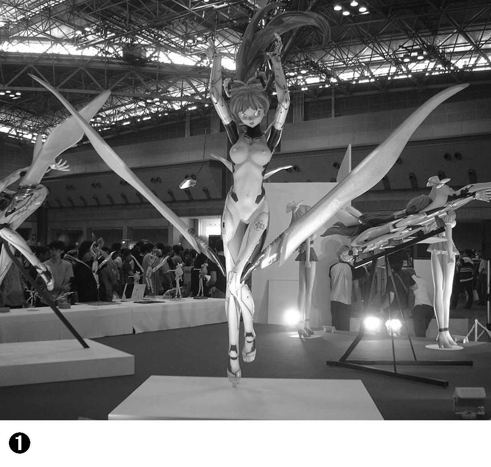
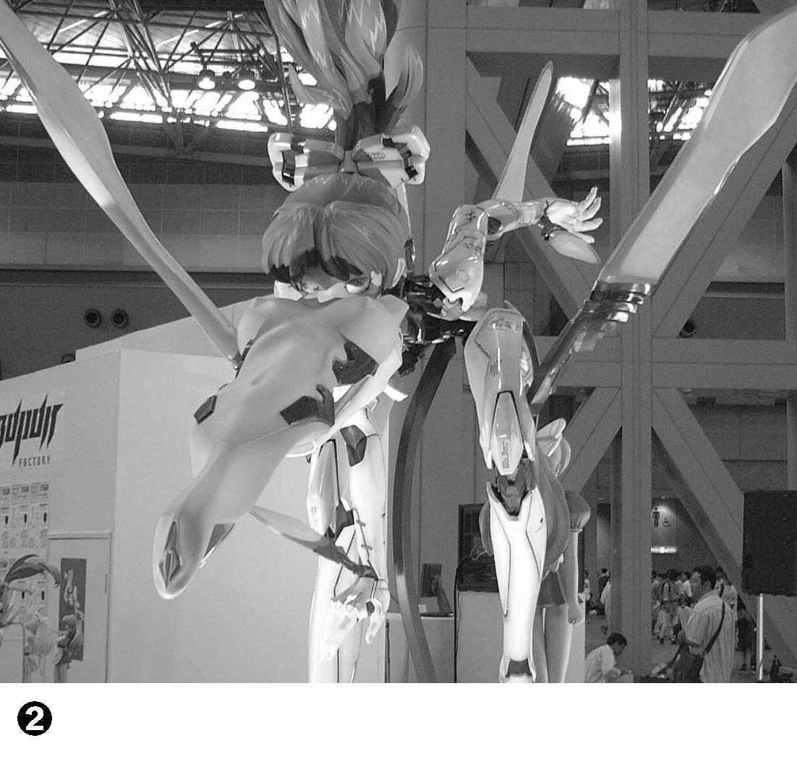
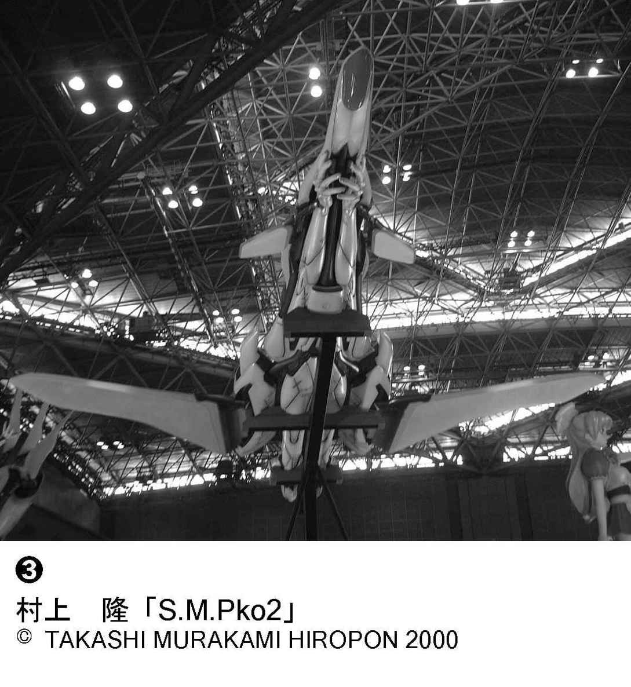
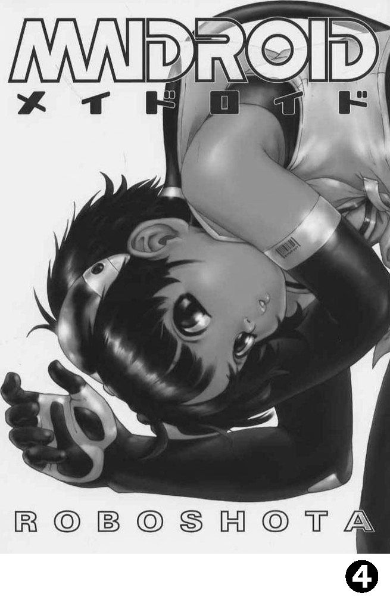
スーパーフラットとは、村上氏の提唱する新たな空間概念である。東浩紀氏による解釈を補うなら、奥行きも深さもなく、あるいはカメラアイすらも存在しない特異な創造空間を指している。私はここに「奥行き」や「カメラアイ」に代わる統制的な概念としての「コンテクスト」を想定しているが、ここに示すＢ形態こそは、まさしくコンテクスト破りの表現であろう。メカと美少女を同列に配置する、スーパーフラットなおたく的想像力こそが、こうした造形の淵源にほかならない。
セクシュアリティは、常に構造を志向する。言い換えるなら、構造なきセクシュアリティは不可能である。この点からも、およそ無構造に見えるおたく表現においてすら、男女の欲望の非対称性が維持されてきたことは興味深い。しかし近年、この領域においてもひとつの境界侵犯が起こりつつある。それが「ショタ」の問題である。ここでは欲望の対象は前思春期の少年であり、その作品はもはやペドフィリア以外の何ものにも見えない（参照）。
ペドファイルの欲望は、精神分析的にはさしあたり次のように定式化できる。彼らはみずからを想像的に母の位置に移動し、そこから愛の対象を選択するのだ、と。このとき母親の去勢は否認されると同時に、ナルシシックな対象選択がなされることになる。すなわち小児への愛であり、それはまさに幼かった頃の自分自身へと向かう欲望なのだ。しかし私が従前から指摘しているように、作り手も受け手の側も実生活においてペドファイルではないという「乖離」は、ここでもほぼ保たれている。何ゆえに性差を越えた欲望が、このような共通の対象に差し向けられるのか。
ここで鍵を握るのが、「スーパーフラット」概念である。これはきわめて想像的な空間であり、日常世界にいかなる対応物ももたない。さらにこの空間は、カメラアイによる統制を免れているため、一見無構造的にも見える。しかし実際には、さきに述べた「コンテクスト」による統制が優位となって、構造とは異なった一種の秩序をもたらしている。そもそもアニメ・漫画表現自体が、きわめてハイ・コンテクストな表現であることは著書でも述べてきた。それゆえ性表現に関して言うなら、作り手も受け手も一定のコンテクストを共有することで、はじめて「セクシュアリティの間主観性」が成立することになる。「コンテクストの学習」がそれを維持し、「コンテクスト破り」が創造性につながる。かくして日常と乖離したスーパーフラットな空間においては、想像は創造に直結し、「持つ」と「ある」とが融合し、破壊は新たな統制を誘導する。
に示した「ぽ～じゅ」氏の作品『ＭＡＩＤＲＯＩＤ』は、同人誌の一例である。商業誌に優るとも劣らない作画のクオリティや、オリジナル作品であるという点からも、いくぶん例外的な位置づけのものではある。ここでの欲望の対象は、もはや「少年」ですらない。「少年」の形をしたメイド用のロボットなのである。そう、本作品は「ショタ」からさらに分化（＝進化）した、「ロボショタ」なるジャンルに属している。わかりやすい例としては『鉄腕アトム』があるが、ロボットの少年に欲望を喚起される成人男性向けの作品が、ひとつのジャンルを形成するに至るほど制作されているという事実を、まずは認識しよう。ここでは、その異様さに顔を背ける前に、おたくのセクシュアリティがもたらす想像力の無際限性を考慮しておく必要がある。
日常と積極的に乖離し、コンテクストのみに依拠しつつ発展するセクシュアリティの表象物。「歴史の終わり」以降に、まだ物語が可能であるとすれば、それはこのような表象物にこそ潜在しているのではないだろうか。もっとも、おたく文化、あるいはスーパーフラット概念の可能性は、そのコンテクスト性に強力に介入してくる、まさしくコンテクスト破りの強度において最大限に発揮されるだろう。
そこでわれわれに可能な役割がありうるとすれば、それはもちろん「おたく文化」の批判者、否認者たることではない。そうではなくて、むしろ積極的に彼らにかかわりつつ、「抵抗」をものともせずに解釈を投与し、外部から彼らの創造性を挑発し続けることではないだろうか。
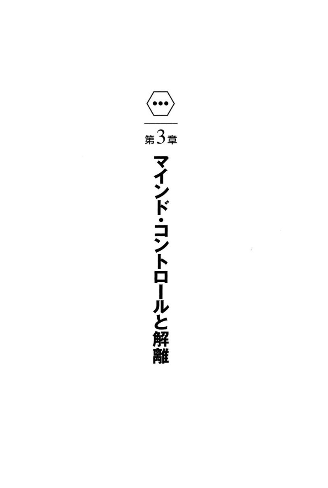
目の前に、三人の若者がいる。みな二〇代で、女性一人に男性二人。女性は幼い頃、親から離されて生活していた頃の思い出を語っている。
「そりゃあ親と別れるときは寂しかったですけど、でも『我』を取るためには仕方ないんですよ」。二六歳にして二児の母というＳさんは、そう言って屈託なく笑った。化粧気のない健康美人だ。私がどんな表情をしていたかははっきりと憶えていないが、かなり間抜けな顔だったに違いない。共感不能な人間に出会うとすぐ「これが『他者』か」と呟く悪い癖が出そうだった。この若者たちはいったい何を考え、われわれをどう見ているのか。無邪気と言えば無邪気、しかしそれは演出されたものなのかもしれない。「解離のテクニック」さえマスターすれば、無垢を演じて人を欺くなど、さほど難しくないからだ。
一九九六年一二月某日、私は三重県津市にあるヤマギシ会の豊里実顕地を某雑誌編集者とともに訪れていた。会については後ほど説明する。会の幹部の一人である、私と同年のＨ氏がわれわれを歓迎してくれた。Ｈ氏は東大法学部在学中にヤマギシズムに目覚め、村では主として広報を担当し、ホームページ管理なども行っている。ヤマギシ会に必ずしも好意的とは限らないわれわれのような人間を、彼らは奇妙なほど丁重にもてなしてくれた。
食事は村人たちと同じものを振る舞われたが、その美味だったことはいまだ鮮明に憶えている。少なくとも、あれほどおいしい鶏卵や鶏肉を、その後口にした記憶がない。大理石の豪華な浴場。倉庫にはあふれんばかりの生活用品。駐車場にずらりと並ぶ自動車は、申請すれば誰でも好きな車種を選んで使用できるという。早朝から畑で黙々と働く高校生たち。女子生徒らは野菜の袋詰めをやはり黙って手早くこなしている。彼らは果たして、私が渋谷や池袋でインタヴューした高校生と同じ人種なのだろうか。牛舎では沢山の牛が自発的に搾乳機に向かい、搾乳が終わると整然と列をなして去っていく。幼年部の子どもたちは素直で人なつこい。今どき珍しいことに鼻を垂らしている子どもが多いが、アトピーは少ないという。ここが現代のユートピアですと言われて、とっさに否定するのはいかにも困難だ。
こうした風景に次々に接したのち、村で育った若者に会いたいというわれわれの希望に応じて紹介されたのが、冒頭の彼らである。
二〇代後半の若者にあるまじき無垢さ、屈託のなさにふれて、われわれはしばし戸惑いを禁じえなかった。たしかに彼らにはある種の魅力がある。彼らと話していると、まるで当方の汚れきったこころが洗われるようだ。しかし一方で、その魅力はどこかこちらを不安にさせる。それはひょっとすると、彼らの魅力が純粋培養ゆえの脆弱さを秘めていたためかもしれない。外の世界から完全に隔離されてあることによって、辛うじて成り立つような無垢。言ってみれば彼らは、ヤマギシ会という箱庭のようなファンタジー・ワールドで「純真なキャラ」を割り振られた虚構内存在なのではなかったか。
ヤマギシ会は、養鶏家・山岸巳代蔵（故人）の思想に賛同する人々によって一九五三年に発会した思想実践集団だ。一九六〇年代以降、カウンター・カルチャー指向の知識人による関心の高まりを背景に参加者が急増した。当時、鶴見俊輔、宇井純、島田裕巳などの知識人たちも、ヤマギシズムの思想を高く評価していた。ヤマギシの生産物は自然食ブームによって大きな成功をおさめて経済的基盤も確立し、イスラエルのキブツを上回る、世界最大規模のコミューンにまで拡大した。
ヤマギシ会の基本理念は「我執」から解放され「研鑽」を通じて自他一体の全世界的な繁栄を目指すことである。この「全人幸福社会」を目指す運動を「Ｚ革命」と言う。ヤマギシ会では定期的に「特別講習研鑽会（特講）」を開催しており、一般にも広く参加を呼びかけている。七〇年代は学生運動に挫折しユートピアを夢見る学生たち、八〇年代は子育てや生き方に悩む主婦やサラリーマンの参加が増えた。とくに村人になる（「参画する」）ためには「特講」参加が義務づけられている。参画に際しては、不動産を含むあらゆる財産を村に供与しなければならない。この財産は村から抜けても返還されることはない。
村人が暮らす、いわゆる「実顕地」では、住居・食事・衣服・医療などはすべて無料で提供される。経済活動の基盤はヤマギシの生産物（卵・肉類・牛乳・野菜など）の供給と参画者の財産供与によって支えられる。村人は、ほぼ年中無休で、早朝からの長時間労働に従事し、参画以後もあらゆる機会に「研鑽会」がもたれ、意志決定がなされる。
これまでにヤマギシ会の脱会者と特講経験者を中心として、会が一種のカルト集団ではないかという告発がなされてきた。この件については、米本和広著『洗脳の楽園』（洋泉社、一九九七）に詳しい。詳細はそちらを読んでいただくとして、これまでヤマギシについて指摘されてきた問題点について、ごく簡単に整理しておく。
まず「特講」はきわめて強烈な体験であり、これをマインド・コントロールと受け取るものも多いこと、参画時に財産をすべて村に委託し、脱会時には返還されないこと、重要な決定は「研鑽」でテーマとして出されるが、テーマ決定の主体は明かされないこと。またとくに児童の処遇に関しては、労働参加の強要や検閲、体罰など、人権的な配慮に欠ける点を指摘する声もある。児童虐待の有無については、その後三重県の調査が入り、その実態の一部が昨年明らかになった。これについては後述する。
ヤマギシを語るうえでは外せない「特講」の内容についても、概略を説明しておこう。
「特講」はヤマギシ会の基本理念を体得するための講習会であり、七泊八日の合宿形式で行われる。中心となるのは「研鑽」による基本理念の理解と体得である。研鑽にはいくつかの種類があるが、手法はほぼ共通している。たとえば「怒り研鑽」と呼ばれるものでは、まず参加者に「一番腹が立ったこと」と、なぜ腹が立ったかを説明させる。ここで腹立ちの理由をどのように説明しても、係のものは「なぜそれで腹が立つのか」という問いかけしか返してこない。この問答を何時間でもえんえんと繰り返し、ときには受講者を挑発し、なだめ、情緒的にゆさぶりをかける。受講者は最後には「もう腹が立たなくなりました」と涙ながらに訴えるようになる。他の研鑽には「それはあなたの物ですか」「（食物について）それは嫌いなものですか」「ここに残れますか」といったテーマがある。いずれも参加者がどのように回答しても、係は同じ質問しか返してこない。このような問答を長時間かけて行う。その目指すところは、「事実と思いの分離」の体得であるという。これは言い換えると、嫌悪や怒りを生じ、固定観念やこだわりのもとになっている根本が「我執」にあると体得させることである。
「我執」を捨て「事実と思いを分離」すること。私にはそれが、すすんで意識を解離させる身振りに思われてならない。マインド・コントロールとはあるいは、解離を巧みに利用するテクニックそのもののことではないか。私は当事者の証言をもとに、みずからの仮説を実証すべく、元村人たちの聞き取り調査を試みることにした。
実はヤマギシ会は現在、存亡の危機に立たされている。かつては数十人が参加していた特講についても、現在は一回あたりの参加者がずっと一ケタ台にとどまっているという。農産物は販売する場所が減少するなどして売り上げが一〇分の一近くまで激減し、さまざまな報道で不安になった親が子どもを村から引き取ったため、村の子どもの数は半分以下に減少した。
もちろん「ヤマギシを考える全国ネットワーク」や「ヤマギシの子どもを救う会」など、さまざまな反ヤマギシ活動の成果が実ったとも言える。しかし、最も有効な一撃となったのは、さきにふれた米本氏の『洗脳の楽園』ではなかったか。この一冊の本が、ヤマギシ会に壊滅的な打撃をもたらしたのだ。私は彼の活動に微力ながら協力して現在に至るが、これはなかなかに希有な体験だった。
米本氏はヤマギシ会にとって、きわめて困った存在である。彼はあたかもストーカー的な執拗さでヤマギシに迫る。私にはその接近ぶりが、ほとんど愛に似て見えたほどだ。米本氏はヤマギシ村から子どもを救出しようと試みて村人から暴行を受け、刑事告訴し、ヤマギシ側も逆に米本氏に対して損害賠償の訴訟を起こしている。それにもかかわらず米本氏は相変わらず村人に連絡を取ったり、直接会ったりするなど、奇妙な親密さを維持している。この辺の間合いの取り方は、実際見事と言うほかはない。
私は米本氏の協力を得て、ヤマギシ村訪問の翌年、特講経験者一三名に対して聞き取り調査を行った。せっかくの歓待を裏切るようでこころがとても痛んだのだが、それはそれ、これはこれである。以下、調査結果を簡単に紹介しよう。なお、ここで紹介した結果については、一九九七年の社会精神医学会でその一部を発表した。
調査対象者は男性七名、女性六名の計一三名であり、平均年齢は四五・九歳であった。特講受講の動機としては、家庭内不和、育児の不安、知人の勧めなどが多い。対象者のうち、実際に村人として参画したものは八名である。脱会もしくは反対運動にかかわるようになったきっかけとしては、基本理念と実際の生活の矛盾を感じたことによるものが多い。この結果、程度の差はあれ、調査対象の全例が、現在反ヤマギシ活動にかかわっている。また対象者のうち三例が、特講後に精神科通院歴がある。一例は離人神経症、二例はうつ状態である。また、とりわけ特異であったのは、特講中、もしくはその後しばらくたった後に生じた変性意識体験である。たとえば、ある男性のケースでは「特講中に食器が踊って見える」という経験がみられた。また女性のケースでは「お腹の中に光が生まれる感じ」「体が地球の外に飛び出した感じ」「体が宙に浮いた感じ」などといった経験が語られた。いずれもなんらかの形で解離状態が関与した可能性がきわめて高い。
これほどではないにせよ、解離症状を疑わせる体験は、多くの参加者に共通してみられている。とりわけ多かったのは「特講受講時の健忘」と「外界刺激への無関心」である。インタヴュー時も、特講受講中の出来事や内容について、記憶がところどころ曖昧になっていることが多かった。こうした健忘は受講中にもしばしば起こり、昨日の特講の内容が思い出せないようなことも珍しくなかった。また、一般に旅行中などは留守中のニュースなどが気になるものだが、特講受講中はそうしたものが一切気にならず、受講後も無関心のままであることが多い。記事を書く目的で特講に潜入取材した米本氏ですら、特講直後に目に飛び込んできた週刊誌の見出しを見ても、普段と違ってなんの関心も湧いてこなかったと述べている。ちなみに氏の著書には特講の過程がきわめて詳細に描かれており、じっくり読めば気分が悪くなってくるほど迫力がある。私自身は特講をついに受けなかったが、それはこの体験に耐えられるほど自我の安定性に自信がなかったためだ。
このほかにも、複数の経験者が訴えていた体験に、特講後に「景色が鮮明にみえる」というものがある。これも解離に基づく知覚変容のひとつと考えることができる。逆に受講中から「現実味が感じられない」といった離人症状が出現する場合もある。米本氏自身の体験で興味深かったのは、特講後しばらく文章が書けなくなったことである。これが解離症状と直接に関係があるかどうかはなんとも言えないが、私自身はこの体験こそが、特講がまさにマインド・コントロールにほかならないことの何よりの証明であると考えている。
特講の心理的な影響をみるため、バーンスタイン、パトナムらによって開発されたＤＥＳ（Dissociation Experience Scale：解離体験尺度）を同時に施行した。結論から言えば、ＤＥＳスコアの平均は特講経験者で九・三、年齢、性別を一致させた対照群の特講未経験者で五・三で、有意な差は認められなかった。なお中央値では経験者で六・一、対照群で三・二であった。もちろんこの値は現時点のものであり、特講直後にＤＥＳを施行した場合は、また違った値になる可能性はある。しかし今のところ、特講が解離症状を確実にもたらすという決定的な根拠にはなりえていない。
しかし私は、特講が解離状態を利用したマインド・コントロール体験であることをほとんど確信している。「マインド・コントロール」という言葉は、精神医学的にはいまだ定義が不十分であるが、私はさしあたり「身体的・心理的ストレスなどにより意図的に生ぜしめた解離状態を操作的に用いる行為一般」を指すと考えている。特講の体験がその後何年間も経験者の精神状態に影響を及ぼしていることが多くの事例でみられており、一説には脱会した村人の自殺率もきわめて高いと聞いた。ここには特講体験の外傷性が顕著に刻印されているのではないか。外傷がしばしば解離をもたらすことは周知のとおりである。
フランク・Ｗ・パトナム『多重人格性障害』（岩崎学術出版社、二〇〇〇）の共訳者のノートで、中井久夫氏が述べていることは、私の論点を間接的に補強してくれる。氏は統合失調症が何に対する防衛であろうかという問いに対して、「マインドコントロールに対する防衛機制ではないか」と述べている。彼らは「自己の解体を賭けてまで、自己の単一統合性を守り抜こうとする」というのだ。ここで言われる「解体」は、言うまでもなく「解離」とは異なった状態を意味している。「解体」が自我の単一性を破壊するダイナミックかつ「現実的」な生成過程であるとすれば、「解離」はもっと静的で単純な自己イメージの「想像的」分割である。パソコンで言えば、ＯＳの暴走とアプリケーション・ソフトの暴走を、それぞれイメージしてもよい。
この結論を拡大して、カルトの特性を、解離体験を利用して思想を変化させ、解離状態によって維持される集団、と記述することも可能ではないだろうか。ヤマギシ会がそうであるように、グルやカリスマのような指導者的な人物の存在は、必ずしも必要条件ではない。あるいはまた、たとえ「学会」と名がついていようとも、解離を利用して加入を促すような局面が少しでもあるなら、その集団はカルトと呼びうるだろう。そもそもヤマギシ会が特講で体得を目指すのは「事実と思いの分離」であった。これすなわち、「特講」は離人症状を意図的に作り出すことと宣言しているも同然ではないだろうか。その意味で私は、ＤＥＳは解離の診断ばかりではなく、カルトの診断にも部分的には応用可能と考える。
特講は、きわめて特異な体験である。通常のカルトと同様、この体験は、自我がよりどころとする根拠をひとつひとつ破壊していくのだが、多くのカルトと異なるのは、特定の教義を注入しないようにみえる点である。精神分析の側から考えるなら、怒り研鑽も無所有研鑽も自己愛を破壊する試みにほかならない。「この自分」の固有性を、その徹底した記述によって逆に内破してしまうのである。分析哲学が示すとおり、固有性は確定記述の束には還元されえない。しかし特講をはじめとするカルトはこの点を逆に利用するのだ。彼らは自己の固有性を本人に記述させ、ついにはその記述が無根拠であることを本人自身に暴かせる。
ヤマギシ会の理想は鶏の社会である。子どもを親から離し、群として育てるのも、そうした思想の端的な応用にほかならない。人間をニワトリのように育てるのだ。この話を先輩の精神科医・山登敬之氏にしたところ、そりゃ「ニワトリ憑き」の集団だ、といきなり喝破された。いささか極端な表現ではあるが、的を射ている。そこでは幼児期から「個」であることが徹底して否定されるのだ。研鑽と称する話し合いも、個人対個人の話し合いとしてはなされない。それはほとんどの場合、すでに決定ずみの意見を、あたかも話し合いに基づいて決定したかのように偽装するためになされている。話し合いに先立って研鑽係は結論をもう出しており、それに反論しても「もう少し考えてみましょう」という回答が繰り返されるのみだからである。このようなシステムに組み込まれたら、少しでも楽になるために、人は「個を捨てたふり」くらいはするだろう。意図的に個を捨てることなど不可能である以上、それはせいぜい「ふり」にすぎないけれども。
想像的に個を捨てること、それこそが「解離」の身振りにほかならないのではないだろうか。本来すべての人間が共有する神経症的な構造は、個であること、固有の存在であることを前提として成り立っている。内省すること･葛藤することは、われわれが言葉を与えられた「語る存在」である以上、決して避けることはできない。臨床的な意味での神経症とは、この内省や葛藤の程度がとくに強いものを指している。ヤマギシズムで言うところの「我執」とは、われわれの欲望を可能にすると同時に、個としての神経症的な苦しみをもたらしもする自己愛のことを指している。よって自己愛を捨てること、いや「捨てられた」と錯覚することは、こうした神経症的な葛藤構造を解除され、深く癒されたという別の錯覚につながるだろう。カルトに限らず、こうした自己愛の破壊ないし個の放棄は、多くの自己啓発セミナーで採用されているテクニックでもある。この過程を修了した個人は、多くの場合とても満ち足りて幸福そうにみえるが、実際につきあうとなると、共感性を欠いたはた迷惑な人間でしかないことが多い。自己愛を捨てたと称する人間が、最も自己愛的に振る舞ってしまうこと。私はこの事実こそが、人間がついに神経症的な構造から逃れることができないということの皮肉な証明であると考える。
米本和広氏は、著書『カルトの子』（文藝春秋、二〇〇〇）において、ヤマギシの村で子どもたちがどのような処遇を受けていたかを徹底して暴き出す。こちらも精神医学、ないし被害者学的な見地からみてきわめて興味深い著作だ。それは言ってみれば、集団的な虐待行為が何をもたらすかが、膨大な事実に基づいて克明に記述されているからだ。
一九九八年五月、ヤマギシ会は当初からの構想であった私立「やまぎし学園・津小学校、津中学校」の計画書を三重県に提出した。それまではヤマギシの実顕地に住む小・中学生は地元の小・中学校に通学していたのだが、これは子どもたちが外の世界にふれることができる唯一のチャンスだった。もしこの計画書が認可されれば、子どもたちは完全に社会と隔離された環境下で一貫したヤマギシズムの教育を受けることになる。ヤマギシ側は学校認可を求める一〇万人の署名を集め、これに対抗して反ヤマギシの側も数千の署名を集めた。こうした動きを受けてか、三重県は通常なら書類審査ですますところを、あえてヤマギシ学園の実態調査に乗り出した。四〇七人のヤマギシの小・中学生を対象に、アンケート形式の調査を行ったのである。
その結果は驚くべきものだった。世話係に暴行を受けたとする回答が八〇％以上、また逃げ出したいと思ったことがあるものが、やはり八〇％以上を占めたのである。子どもたちは、自分が受けた暴行の内容についても詳細に記述している。平手打ち、往復ビンタ、足蹴にする、鼻血が出るまで殴る、壁に頭を叩きつける、体を持ち上げて床に投げおろす、棒で叩く、食事を抜く、バットで尻を叩く、プロレス技をかける、コンクリート張りの部屋に監禁する、裸のまま屋外に放置する......繰り返すが、小・中学生の八割以上が、世話係の村人からこのような処遇を受けていたのである。その大半は、指示を守らなかった、仕事をさぼった、などというたわいもない違反への罰としてなされていた。この状況を異常ないし病理的とみないのならば、どのような集団も健全であろう。ヤマギシ側がなぜか自発的に計画書を取り下げたのは幸いなことだったが、しかし学校設立の可能性は、まだ消えてしまったわけではない。
それにしても、なぜこれほどの暴力が可能になるのか。まず第一に、ヤマギシでは赤ん坊のうちから我執を摘んでおくことが大切であると信じられているからだ。また暴力を振るう側が慢性的な解離状態にあるため、殴られる子どもの苦痛に共感したり配慮したりすることがまったくできなくなっていたという推定も成り立つ。ヤマギシに子どもを預けたことのある母親へのインタヴューで最も印象的だったのは、小学生のわが子が痛みを訴えず、ほとんど泣かなくなったというものだった。発熱と脱水症状で点滴の針が入らず静脈切開まで受けながら、一言も声を発しなかったという。医師はその我慢強さに感心しながらも「この子が助けを求めたときは、命がかかっている」と言った。これもまた「事実と思いの分離」すなわち解離状態の見事な「成果」であろう。
そう、解離状態は「痛み」を消去してしまう。私はまさにこの点にこそ、カルト的なものの危険性がきわまっていると考える。他人の痛みを理解することは決してできない。なぜなら痛みこそは、最も個人的な感覚にほかならないからだ。痛みは連帯を生まない。痛みは人間を孤独にする。しかしまた「痛み」は共感へと進む一歩となりうる。われわれが暴力を振るわずに生活しているとすれば、それはまさに自分の「痛み」を理解しているからである。自分の痛みを起点として他人の痛みへと向けられた想像力こそが、共感への第一歩なのだ。それゆえ「痛みの喪失」は、直接に暴力をもたらすだろう。葛藤と不安を免れ、痛みの感覚をなくした人間は、共感性を欠いた暴力的な存在になりうるということ。ヤマギシの子どもたちへのアンケート結果は、そのことを如実に教えてくれる。
聞き取り調査をしながら、私は普段つきあっているひきこもりの若者たちのことをしきりに考えていた。もちろん例外がないではないが、一般に、ひきこもる若者はカルトはおろか宗教にすら走ろうとしない。ある患者はいみじくも言い放った。「自分が世界で一番偉いのに、なんで教祖なんかに従えるものか」。この言葉に、彼らのカルト嫌いの根拠が集約されているように思われる。一見傲慢にもみえるこの態度が、一種の爽快感すら湛えているのはなぜだろうか。
もちろん彼らも、しばしば偏った考えに陥っている。とりわけ日本近代を支えた勤勉の論理としての「働かざるもの食うべからず」という思想にとらわれすぎている。しかし彼らは、その確信にもかかわらず、なかなか働くことができない。それはおそらく、彼らがうまく解離することができないということに関係があるだろう。他人と接触すること、社会からの批判にさらされること、そうしたことへの不安と恐怖を解離できないがために、彼らは行動に踏み切れずにいるのではないか。そこで彼らを引き留めるものは、まさに「我執」であり自己愛である。感覚や行動の自己所属感を失いたくないという強迫的な執着である。それは一種の未熟さであるのかもしれない。しかし私は、彼らを未熟さゆえに批判する気にはどうしてもなれないのだ。
果たしてカルト活動によって救済されることがひきこもりよりも良いことであると言えるものだろうか。私はそうは考えない。さきに引用した中井久夫氏の指摘にならって言うなら、現代において未成熟であること、自己愛的にひきこもることもまた、マインド・コントロールに対する抵抗という側面をもつのだろう。もちろん彼らの苦痛は治療的援助を必要とするのだが、しかしその苦痛がまったく無意味、無価値なものであると切り捨てることはもはやできない。オウム事件に代表される、九〇年代に起こったさまざまな出来事は、むしろ「成熟」概念の無効性を決定的にした。「成熟」「自立」「アイデンティティ」といった言葉が、臨床家にとってのカルト的信仰ではなかったと誰に断言できるだろう。いまや成熟の自明性こそが問われなければならない。
解離に逃れることもできないひきこもり青年たちは、まさに「痛み」を知る者でもある。その意味で、安易な癒しや他者との交流をどこまでも嫌う彼らの態度にも、一片の倫理性はある。あるひきこもり青年の言葉をまねて言うなら、その「自宅待機」の思想がもっと積極的に展開される、そのさきを見てみたい。少なくとも、個を捨てて成り立つカルト的繁栄よりはましな未来が、そのさきにあるような気がするからだ。
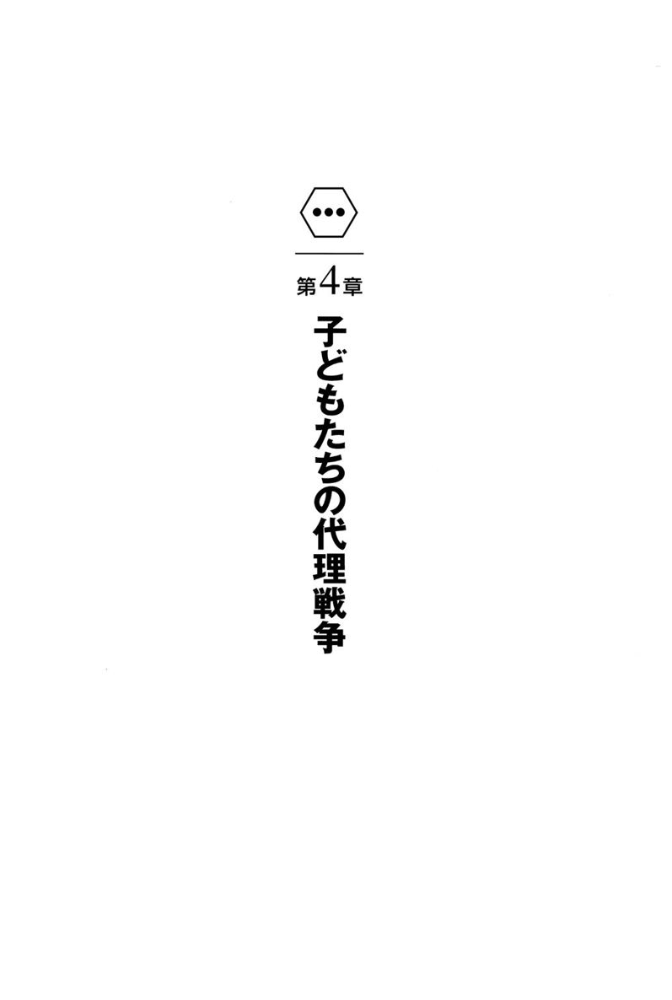
『ポケットモンスター』というゲームがある。いまやその名前を知らぬ者とてなかろうが、しかし実際にゲームボーイでプレイした経験のあるものは少ないだろう。読者の中には、わが子や親戚の子どもにつきあわされる立場の人が多いのではないか。また、精神医療関係者でこの話題と言えば、言うまでもなく一九九七年の暮れに起こった「ポケモンてんかん」のほうが思い出されるだろう。
今さらながらこのゲームを取り上げるのは、子どものこころとこうしたゲームとのかかわりについて考えてみるためである。もちろんポケモン現象自体は、いささかも病理的な現象ではありえない。むしろそれは、一種の健全さの証ですらあるだろう。子どもたちがゲームに没頭することを嘆きすぎるのも愚かなことだ。ゲームがヴァーチャルであることを嘆き、みずからが野山に遊んだ経験の特権性を持ち出す者は、当の自分がその野山に何を投影していたかをすっかり失念しているに違いない。君の裏山の「秘密基地」は？ 「敵のアジト」は？ 稚拙であれ、なんであれ、そうした物語の投影がなされなければ、自然はひたすら退屈であるか、過剰に危険で恐るべきものにしかならない。
自然のほうに「生の現実」があると考えがちな楽観主義者に対しては、まだラカニアンの軽蔑──「現実」とは「不可能なもの」の別名である──が有効でありうるだろうか。ゲームであろうと大自然であろうと、いずれも幻想として見いだされるという点に関しては選ぶところがない。もちろんそれは、子どもにとっても大人にとっても同じことである。精神科医として断言するが、自然とたわむれる経験のほうがゲームに没頭する経験よりも豊かであると決めつける根拠など存在しない。郷愁の中の大自然なるものが、どれほど美化という変形をこうむりやすいかは、かつて昆虫少年であった私が保証する。
さて、ポケモンてんかん事件について、ここで簡単に振り返っておこう。
そもそも任天堂の携帯ゲーム機であるゲームボーイ向けのソフトとして、『ポケットモンスター』が発売されたのは、一九九六年二月である。一五一種類のポケモンを捕まえながら旅しつつ、自分のゲットしたポケモンを強く「育て」、リーダーに勝ってチャンピオンを目指す。通信ケーブルで友だちとポケモンを交換できることも、人気の理由だった。発売と同時にコミックの連載も開始され、ポケモン人気は急速に高まった。
これを受けて一九九七年四月からは、ＴＶアニメ番組も放映開始する。こちらも高い視聴率を記録した。そして一九九七年一二月一六日、事件が起こった。『ポケットモンスター』第三八話「でんのうせんしポリゴン」が放映され、番組の後半でサイバー空間の戦いを表現すべく青と赤の光の点滅が数秒間続き、これを視聴していた子どもたちなど六八五人が光感受性発作などのためけいれんを起こすなどして、救急病院に搬送されたのである。事件の影響はきわめて大きく、ポケモンのアニメ番組は一時放映中止となり、ほかのアニメ番組でも減光処理して放映されるなどの処置が講じられた。また、これ以降ほとんどのアニメ番組が、番組の冒頭で「部屋を明るくして離れて視聴すること」と視聴者に注意を促す慣例ができた。
この事件についてはその後厚生省（当時）の研究班が組まれ、翌一九九八年六月には最終報告書が公表されている。また、研究班のメンバーであった光過敏性てんかんの権威・高橋剛夫氏は、一九九七年一二月二九日の『朝日新聞』論壇にて、以下のように発言している。氏はまず、これと関連した現象として、一九五〇年代の「テレビ発作」や、一九八〇年代の「テレビゲーム発作」がすでにあったことを紹介し、この現象が前代未聞の病理ではないことを強調した。そのうえで、問題の光の点滅についてふれ、赤色点滅は通常の脳波検査で用いられる高輝度ストロボ刺激の三倍以上も脳波異常の誘発効果が高いと述べている。
氏の発言で最も重要と思われるのは、若年者の場合、健康体であっても潜在的視覚過敏性を持つ可能性が高いという指摘、また視覚誘発発作の予後は一般的に良好であり、とりわけ単発的なものである場合には過度の心配は無用であるという指摘である。事件直後の時点で、この問題に関しては最も理想的な専門家による的確なコメントが公表されたわけである。高橋氏のコメントは、この事件の過剰な解釈と社会学的な意味づけを封じるうえで、かなり大きな意味をもったと私は確信している。
あえてこの事件を今振り返っておく価値があるとすれば、それは主としてメディアの反応ぶりという点にある。『朝日新聞』の「天声人語」をはじめ、この事件をあたかもコンピュータ社会の病理として論じたり、はなはだしきはサブリミナル効果などにまで言及する剛の者まで出てくる始末で、これはこれで私自身を非常に喜ばせる事例を多数提供してくれたものだった。
この事件の本質が視覚誘発発作であるなら、それは完全に脳の器質的・機能的な問題に限定される。つまりここには、社会心理学的な要因が介在する余地がまったくないのだ。あえてそうした要因について語ろうとする者は、たとえば自閉症の増加を現代社会の病理や母子関係の問題に結びつけるだけの蛮勇をもたなければならない。
いささか余談めくが、今回のような事件の場合こそ、精神科医（ただし高橋氏のような専門家）がマスコミでコメントを発表する社会的意義はきわめて大きい。「患者を診ずにコメントするべきではない」といった珍妙な批判が一時流行したが、彼らは診た患者についてならコメントしてもよいと本気で考えたのだろうか。もちろん高橋氏も、あの早い時点で事件の被害を受けた子どもの診療に直接かかわっていたとは思われない。しかし厚生省（当時）の研究班による調査結果の公表を半年も待つよりは、予断が含まれる余地があるにせよ、専門家が素早くコメントを発表することで得られる安堵感のほうが有意義ではないか。
これらマスコミの事例たちは、われわれの過ごした二〇世紀が、いかに精神分析の世紀であったかを如実に示してくれた。社会病理に原因を求めた「分析」をすみずみまで浸している過剰な心理主義こそは、まさに精神分析的な因果律の稚拙な反復にすぎないからだ。つまり、こころが有害な刺激にさらされ、その刺激は時間差をおいて症状として反復される、という因果律である。この因果律こそは、無意識を前提としなければ決して導かれない。仮説としての無意識を必要とする「学問」は、もちろん心理学でも脳科学でもない。それは精神分析以外の何者でもないのだ。
さて、本章で『ポケモン』を取り上げたもうひとつの理由、実はこちらがメインなのだが、それは近年、これに類似のゲームや漫画、アニメ作品が多数制作され、それが軒並み高い人気を得ているという事実について考えるためだった。私はそれらを総称して、かりに「代理モンスター」ものと呼ぶことにしている。このジャンルの代表的な作品としては、『ポケットモンスター』のほか、『デジモンアドベンチャー』『遊☆戯☆王』『真・女神転生 デビルチルドレン』『ＡＮＧＥＬＩＣ ＬＡＹＥＲ』などが挙げられる。だいたいこれでイメージはつかめたことと思われるが、念のため代理モンスターの「定義」をしておこう。
・主人公は、敵と直接には戦わない。
・主人公の所有するモンスターが代わりに戦う。
・主人公はモンスターを所有し、必要に応じてそれを出現させることができる。
・主人公はモンスターを「操縦」せず、代理モンスター独自の判断で戦う、つまり自立した戦闘能力をもっている。
以上の状態を六ヶ月以上満たしていれば、その作品は「代理モンスターもの」と呼ばれることになる。こうした代理モンスターもののファンの総数は、全国で一〇〇万人くらいにものぼると考えられるが、もちろんそこに、確たる統計的根拠があるわけではない。
私はこの種の作品が、とりわけ九〇年代後半に爆発的に人気を集めた歴史的経緯に強い関心をもった。そこで私は、自分の所属する漫画関連のメーリングリストで、まず質問を試みた。漫画を学問の対象として考えようとする真摯なメンバーが多く、そこでの議論は非常に参考になった。メーリングリスト名や個々のメンバーの名前を出すことはあえてしないが、ここに記して感謝しておく。
まず、代理モンスターの起源だが、これには諸説あって一定しないらしい。『ポケモン』の発案者である田尻智氏は、あるインタヴューでは特撮番組である『ウルトラセブン』に登場するカプセル怪獣（ピンチのときにカプセルから登場した怪獣が敵と戦う）からヒントを得たと発言しているが、ほかにも「仮面ライダーカード」「虫取りやザリガニ釣り」「インベーダーゲーム」などからの影響も挙げており、いちがいに発想の源を特定することは難しいようだ。もっとも私の関心は、作家個人の意図そのものにはない。そうではなくて、こうした「代理モンスター」というジャンルが形成され受容されてきた表現の系譜、さらにはそうしたジャンルを必要とした精神風土のほうに関心がある。
そうした点で興味深い先行作品としては、神矢みのるの漫画『プラレス３四郎』、やまと虹一の漫画『プラモ狂四郎』などが挙げられる。いずれも八〇年代前半の作品である。プラレスとは、超ＬＳＩを組み込んだ小型ロボット「プラレスラー」を操作して闘わせる格闘技のことだ。いずれも「主人公による操作」があるという点では、代理モンスターの定義に必ずしも一致しない。ただ、それが単なる操縦ではなく、プラレスラー独自のキャラクターが描かれ、主人公の少年が自分の所有するプラレスラー柔王丸に友情を感じているという描写があるらしい。ＣＬＡＭＰの漫画『ＡＮＧＥＬＩＣ ＬＡＹＥＲ』は、こうしたプラレスものを直接に継承した作品として話題になっている。
私自身は、代理モンスターものに属する最初期作品として、荒木飛呂彦の漫画『ジョジョの奇妙な冒険』を想定していた。本作に特徴的なのは「スタンド」という発想である。これは作者自身の解説によれば、普通は透明に描かれるさまざまな超能力を実体化、人格化したものであるという。スタンドにはいくつかの制約があった。すなわち、スタンド使いが所有するスタンドは、一人一体に限定されており、またスタンドの能力はおおむねひとつだけに絞り込まれる。また、主人公とスタンドとの結びつきは運命的なものであり、他人のスタンドと交換したりは決してできない。こちらはむしろ、ポケモンと大きく異なる点と言えよう。なぜならポケモンは、モンスター同士をやりとりしたり交替させたりすることができ、そこにもこの作品がヒットした理由が秘められているからだ。
さて、ポケモンが人文科学の対象となったのは、もちろんこれがはじめてではない。そうした試みの最初期にして代表的なものに、中沢新一氏による『ポケットの中の野生』（岩波書店、一九九七）が挙げられるだろう。氏は主としてレヴィ＝ストロースとラカンの概念に依拠しつつ、ポケモンを全面的に肯定しようと試みる。ここでの中沢氏の立論は、ほかに同様のものがないだけに、一定の説得力を帯びているようにもみえる。未開人が自然と相対するとき、彼らは直観的な「野生の思考」に基づいて自然を分類しようとするが、ポケモンはあたかも擬似的な自然のように、子どもたちの野生の思考を引き出す。そこには世界を秩序立てて把握する喜びが秘められており、それがポケモンの世界的な人気の秘密である。このときポケモンの交換とはまさしく「贈与交換」なのであって、そこでは、「ものといっしょに『人格』と呼ばれるなにか、ひょっとしたら『たましい』などと呼んでもいいかもしれないなにか」がやりとりされるように感じられるという。
こうした記述の正当性については、私はそれを評価するという立場には立てない。ただ、中沢氏がこうした解読に加えて、同じ構造主義だからと判断したかどうかはともかく、唐突にラカンを援用していて驚かされる。ただポケモンを「対象ａ」とみなすようなナイーヴさは、かつてのニューアカデミズムの旗手による発言としては、いささか無防備なものではないだろうか。中沢氏によるこうした指摘に問題があるとすれば、それが誤りであるためではなく、むしろ結論めいたものを導き出す手つきの安易さのほうに、より多く問題が含まれているように思われる。
とりわけジジェク氏などによって一挙に普及した言い回し、「～は対象ａである」といった断定は、反証不能であるばかりか、それ以上分析を進める意欲を萎えさせる、思考停止の合図のようなものだ。これはほとんど「ポケモンはリアルだ。なぜならそこにはリアリティがあるからだ」といったトートロジーに等しい。無意識の欲動の対象である「対象ａ」に場を与えることが、子どもたちのうちに「野生の思考」を蘇らせるという発想は過度に楽観的である以前に、精神分析的レトリックの悪しき典型と化している。
中沢氏は別の場所で本書についてふれながら、「最近の子どもたちにとって〝母親からいかに卒業するか〟は大きな悩みです」「子離れ・親離れができないとどうなるのか。子どもにとっては、離れたい（＝息苦しさ）、離れたくない（＝不安）という相反する感情を生じさせ、二重人格や、無理矢理離れようとする暴力性に向かわせます。その顕著な例が神戸で起きた酒鬼薔薇少年の事件といえるでしょう。しかし〝秩序〟や〝構造化する力〟が消失した現代では、子離れ・親離れするための良い方法はなかなか見つかりません」「子どもにとって最もわからないものは、〝母〟と〝無意識の欲望〟です」「小学四年生ぐらいまでの子どもは、形にならない欲望や思いをたくさん抱え込んでいる。これをどうにかしてあげることこそ、子離れ・親離れのひとつの道筋です。（中略）かわりにその場所を占めているものこそ（中略）『ポケットモンスター』です。多くの小学生をリサーチし、自分でも体験した結果、そう断言できます」と語っている（『おかあさん塾』一九九九年春号）。
いささか引用が長くなったが、ここで中沢氏はなぜ「去勢」という言葉を避けているのだろうか。その意図も不明である。子離れができないと二重人格や酒鬼薔薇が云々という断定も問題なしとはしないが、今はおく。母子分離を促し、欲望を構造化するものこそが、去勢の作用であるということ。ラカンを援用しつつそのことにあえてふれないとしたら、それは意図的にラカンを歪曲していると批判されても仕方のないところである。さらに解釈を進めれば、ここのくだりは、子どもたちの欲望をＴＶゲームによって去勢することが可能である、と断定しているに等しい。もはやここに至っては、珍説ここにきわまれりとでも呟くほかはない。
それでは「代理モンスター」のこれほどまでの受容が意味するものとは何か。
『ジョジョの奇妙な冒険』における「スタンド」の存在をもう一度想起しよう。これは登場人物の中に、もうひとつの自律的な人格が潜在しているという形式で描かれる。つまり、スタンドは登場人物から解離して生み出されたものなのである。スタンド使いであるためにはその素質を必要とするが、「弓と矢」というスタンドで射抜かれることで、後天的にスタンド使いになることもできる。つまり、矢によって生み出される透明な傷が、解離の能力を発現させるのである。
漫画やアニメで解離状態が描かれることは、ほかにも前例がある。とりわけアニメ作品『伝説巨神イデオン』に至っては、操縦者が失神状態で動くロボットが登場する。また、あまりにも有名なアニメ『新世紀エヴァンゲリオン』にも、主人公の少年がキレて暴走し、エヴァと一体化して凶暴な攻撃性を発揮するという場面がある。このほかさまざまな巨大ロボットもので、主人公が戦闘不能な状態に陥ったときに、ロボット自体があたかも意志を持つかのように作動して主人公を救う、という描写がみられるという。もしそうであるなら、漫画・アニメの領域は、解離状態がかなり早期からストーリーの鍵を握っていたわけで、きわめて興味深い。
いささかこじつけめくが、この点に注目してみるなら、七〇年代から八〇年代にかけて、こうした解離タイプの表現が急速に普及・進化を遂げたと考えることはできないだろうか。最初はロボットの暴走程度であったものが、やがてまったく操縦を必要としない「スタンド」のような表現を経て、操縦不能であるどころか交換が可能であり、主人公との結びつきさえ曖昧であるような代理モンスターへと変質していくこと。ここにはさまざまに異なったキャラクターを解離する自己のありようが、徐々に自然なものとして受容されていく過程がみてとれる。
九〇年代は、こうした解離型文化の枠組みが、一挙に拡張された時代でもあった。私見では『ポケットモンスター』という作品はそのひとつのピークである。一五一種類のポケモンは、そのまま登場人物の分身である。そのすべてを収集する行為こそが、彼らにとっての自分探しであり、そうであるなら傍目には呪文にしか聞こえない「ポケモンいえるかな？」を歌うことは、自分の名前を再発見する行為にもなぞらえうるだろう。これほど強力な「想像上の友人」を獲得した子どもたちは、もはや旧来のそれを必要としないであろうことは予想できるが、果たして現実にはどうであろうか。
最後に、中沢論文を反面教師として言いうることは、ポケモンをはじめとするゲームが子どもたちの成長に寄与しうるとすれば、その程度はほかの遊びの機能とほとんど変わらないであろう、ということである。ゲームは遊びであるがゆえに有意義である。しかしまた、遊びにすぎないがゆえに、子どもの成長に特権的な影響をもたらすことはない。私はそこに、たとえば私たち全体が共有しているような解離という身振りへの親和性が反映されているさまを興味深く見守ってはいる。そうしたことが可能であるのも、子どもの遊びが本質的に、大人文化の模倣によって成立しているという、万古不易の法則が今なお生きていると信ずるためである。
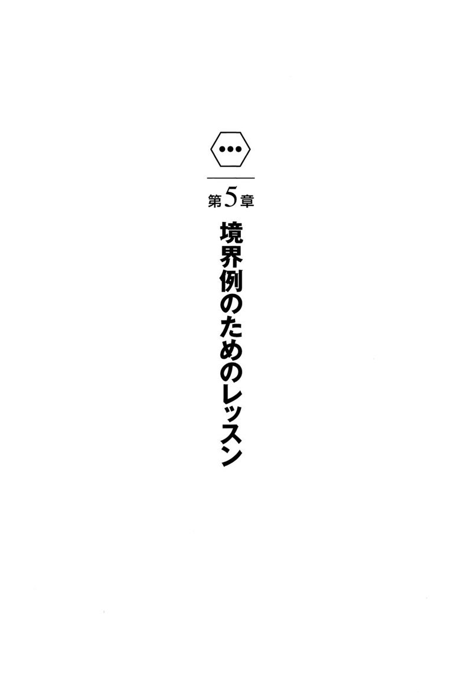
同業者と雑談するおりに、私がよく尋ねる質問がある。
──最近、境界例が減っていませんか？
もちろん否定されることもある。が、かなりの確率で賛同が得られる。おそらくこれと同様の事情を指すものと思われるが、最近読んだ論文中に「境界例の軽症化」という言葉を発見して、つい苦笑してしまった。なんとなく「癌の良性化」と同じような、語義矛盾めいた響きを感じたからだ。しかしおそらく、この論文の著者が感じている臨床的な実感は、私のそれとそんなに隔たっていないはずである。
思えば研修医時代、境界性人格障害の治療には苦労した。「苦労させられた」とあえて書かないのは、その苦労が半分以上はみずから買って出たものであったためだ。そう、私は未知の疾患「ボーダーライン」にすっかり魅了されてしまっていたのだ。恩師であるＯ教授（年齢不詳の甲高い声と声帯模写したくなるキャラクターで知られる、博覧強記の愛猫家）によれば、特定の疾患の研究者は、とりたてて当該疾患の事例収集に励む必要はないとのことだった。ただ「自分は当該疾患の研究者である」と宣言しさえすればいい。あとは事例のほうから勝手に集まってきてくれる。
私はボーダーラインの専門家を自称することにした。ちょうどアルバイト勤務先の病院に、ボーダーラインに詳しくマスコミでの発言も多いＭ医師がいたという巡り合わせもあった。Ｏ教授は正しかった。ボーダーラインの担当患者が次第に増加し、ピーク時には一〇例以上ものケースを抱えることになったのである。周知のとおり、彼らの電話攻勢はときに治療者泣かせである。独身だった私はＯ教授の助言どおり、自宅の電話番号を患者に公開していた。お陰で毎日三〇分以上も、ほんの数名のボーダーライン事例の相談に費やしていた時期もある。私の当直時は、看護室が電話の交換台と化してしまうため嫌がられたが、私自身もいささかうんざりしていた。
また彼らは、治療者から「特別のお世話」を引き出すことが抜群にうまい。電話以外にも、気がつくと時間外に長時間面接していたり、駅まで車で送ってやっていたり、治療以外の相談に応じさせられていたりするのだ。当時研修医だった精神科医の多くは、そうした経験をもっているのではないだろうか。もちろん、そうした行為を正当化する専門用語には事欠かない。しかし、それでも後ろめたさは残る。私はこの「お世話」を誰のために、なんのために続けているのか。その紛れもない疾病利得の強化は、果たして治療行為の名に値するのか。そして私が最も恐れていた疑問は、「ボーダーラインは医原病ではないのか？」という疑問である。
もちろん、解離性同一性障害（多重人格）をはじめ、ヒステリー的側面をもつ疾患は、一度はそのような形で「実在性」を疑われる。しかしそれでも、この疾患には時代の病理といった色彩が抜きがたく染みついてみえるのだ。彼らは全存在を賭けてわれわれを魅了しようとしているのではないか。少なくとも、私が彼らに魅了されたのでなければ、どうしてその専門家を志したりできただろうか。またその魅力は、戸川純や尾崎豊など同時代のアーチストの魅力にどこか通ずるものがあった。それがヒステリー的であるというのは、そこにまぎれもなく「誘惑の病理」が存在したためでもある。
ところが九〇年代の後半から、こうした格段に手間のかかる患者、転移関係の泥沼で治療者を疲弊させるようなタイプの患者が、目に見えて減少し始めた。これは何も私がひきこもり専門家を自称し始めたためばかりでもなさそうである。寡聞にしてそれを裏づけるような統計調査を知らないが、これが決して私だけの印象にとどまらないことは冒頭でも述べたとおりだ。ボーダーラインはいまだに「現代社会を象徴する病理」であり、その数は増え続けているかのような言われ方もする。しかしひょっとすると、それはすでに「過去の疾患」になりつつあるのかもしれない。
以下に示すのは、九三年頃に私が仲間内だけに配布した「論文」の抜粋である。一種のパスティーシュであり、『星の王子さまと野菜人格』（星和書店、一九八七）とか、最近では、塚本千秋氏の『明るい反精神医学』（日本評論社、一九九九）などにも通ずるような、しかしずっと拙い試みである。内輪ではわりに好評だったが、どれほど一般性があるのかはわからない。ただ、こういう文章を誰にともなく宛てて書かずにはいられなかった苛立ちだけは、はっきりと記憶している。
現代の社会というものはアノミーないしボーダーレスで不確実性に満ちている。大きな緊張が消失し、小さな衝動だけが湧きたつ不安定な時代だ。家族は崩壊し、人々の頭は常に混乱しており、孤立化への恐れからみんな自己愛にしがみつく。至るところに過渡対象が満ちあふれてはいるが、真の対象はどこにもない。ＢＰＤはそんな現代のメタファーなのだ。ただし注意しよう。ＢＰＤには二通りの意味がある。それは言うまでもなく、Borderline Personality Disorderを意味するが、しかし同時に、Borderline Personality Doctorをも含意するのだ。両者はＢＰＤ現象の二つの側面であり、いずれか一方を欠いてもこの現象は成立しない。この論考は、これまでＢＰＤ事例の個人的事情ばかり掘り下げてきた凡百の論文とは一線を画し、それがいかにして作られうるかという点を集中的に論じた、画期的な試みである。
ＢＰＤはあきらかに医原病である。なぜなら、誰も「野生のＢＰＤ」を見たことがないからだ。彼らは非常にしばしば、困り果てた精神科医から紹介状つきで送り込まれてくる。診断名もまちまちだが、最初からＢＰＤであることはまずない。多くは強迫性障害、心気症、適応障害、女性であれば摂食障害と診断されている。あるラカン派精神科医の紹介状は、いつも「神経症」となっており、理由を尋ねたところ「精神病でも性倒錯でもないから」とのことだった。ともあれ、ここから類推できることは、彼らはたしかに素材の時点では別の疾患であったに違いない、ということである。吟味された素材だけが治療行為を通じてＢＰＤへと変化するのだ。それでは「素材」として望ましい条件とはなんだろうか。
まず治療歴が長く、複数の治療者を転々とする傾向がある患者が望ましい。特殊な受診動機や複雑な来院経路を経てきていることは、ＢＰＤ化のよい徴候である。治療者が著名人である場合は、その著名さがそのまま受診動機であること。また複数の治療技法を経験しており、治療そのものへの基本的な信頼感が乏しいにもかかわらず、治療関係においては嗜癖的な傾向がみられること。
ただし、治療ならなんでもよいというわけではむろんない。治療者の資質も問題となってくる。治療者に望まれる条件を挙げておこう。まず、二〇─三〇代の比較的若い、精神療法志向の強い精神科医であること。これが第一条件である。これに加えて、治療することに強い喜びと使命感を感じており、熱意と時間に比較的余裕があることが望ましい。性別では、女性患者に男性治療者という組み合わせが一般的である。ただし治療者が既婚である場合は、結婚指輪は外しておくなどの配慮が欠かせない。指輪はスムーズな転移の妨げになるし、治療場面にそのようなプライヴァシーを持ち込むことは好ましくないからである。
若い治療者が望ましいとはいえ、まったくの初心者は好ましくない。臨床経験が三年以上はあり、それなりの技術は身につけていることが必要である。ただし、治療者としての万能感を維持できる程度に愚かであるか、経験不足であることが重要な意味をもつ。とりわけ親切心とtune inの能力が、そのまま精神療法の才能であると錯覚していれば、なおよい。この種の治療者は、治療関係は作れるが、終わらせ方を知らない、あるいは終わらせたがらないことが多いためである。
治療者自身が思春期心性の尻尾をどこかに秘めており、「古き良き葛藤」への郷愁をもっていることも重要な条件だ。これは治療関係を越えた「真実の瞬間」を追求してやまない青年医師のイメージにも通ずる。やや倒錯的な自己犠牲への傾向が加わればなおよい。患者が救われるためなら自分はどうなってもよい、といった。これは言い換えれば、孤独で衝動的な治療者であることを意味している。ただしそれには、自己愛を患者によって支えつつも、それに気づかないでいられる才能を必要とする。診察室以外の場面でも、いつでもその患者のことで頭がいっぱいであること。善意から患者をむさぼる治療者は、みなこうした特異な自己愛をもっている。彼らはプライヴェートな葛藤を抱え込んでおり、それゆえ過度に治療行為に没頭するのである。こうした没頭は、治療者本人がＢＰＤ的であり、しばしば治療的acting out行動化を繰り返すほど徹底される。
治療行為によってＢＰＤを作り出すためには、確固たる治療哲学が要請される。まず診断についてであるが、ＢＰＤなどという診断名は信じておらず、さらに言えば、きちんと診断･分類しようという習慣がないことが望ましい。ただし、診断が安定をもたらす場合と、診断が不満や不安を刺激する場合とがある。つまりＢＰＤをどう理解しているかによるのだ。結論から言えば、ＢＰＤ化のためには、診断行為をすっかり放棄するか、屑カゴ的にＢＰＤと暫定診断するかのいずれか、ということになるだろう。
治療者の孤立状況も、欠くべからざる条件のひとつである。難しい患者は誰にも相談せずに一人で抱え込み、そうすることが患者を守ることだと本気で信じていること。ここに冒頭で述べた治療者としての万能感と、「治療でありさえすればなんでもよい」「何がなんでも自分が治す」といった意地が加われば、鉄壁の守りになる。
理論と臨床は相反するもの、という信念も重要である。だから臨床場面で参照される理論的枠組みは、きわめて単純素朴なものでなければならない。たとえば、すべての症状の原因は「人格の未熟さ」によるものであり、その未熟さを生み出した犯人は家族、とくに幼児期の母子関係であると断定してかかるような。ほかにも「自我同一性の障害」といった、情報量としてはゼロに等しいのに、何かを説明したかのような錯覚をもたらしてくれる概念を日頃から弄んでいること。こうしたシンプルな治療理念と、場当たり的で混乱した治療行為の組み合わせが最も理想に近い。
治療への導入は支持的精神療法の最も皮相な理解をたよりに、受容的なトーンで行うこと。その際、あだな期待をもたらすべく、「必ず治りますよ」などと安請け合いを連発すること。いずれも患者を誘惑するためには欠かせない。治療意欲が乏しい患者には、ソフトな脅迫が有効な場合もある。「ほっておけば、大変なことになりますよ」「早期発見、早期治療」「今ならまだ、引き返せます」など、専門家らしく連発すること。ただし治療の必要性は強調しても、治療契約は曖昧なほうがよい。主訴も治療目標もだんだんとはっきりしなくなって、漫然と面接を繰り返すようになれば後は時間の問題である。「面接場面ではなんでも話してよい」というお約束が、「何が起こってもよい（仕方がない）」といったニュアンスにいつのまにかすりかわってゆくように、こころがけること。診療報酬のとりきめもできるだけ曖昧なままにしておき、「特別のお世話」を繰り返すこと。素質のある患者には、初診時から自宅の電話番号はもちろん、住所から家族構成まで教えておく。面接時間は規定よりちょっと余分にとり、特別扱いがそれとなく患者自身にもわかるように振る舞うこと。休日に外で会ったり、一緒に遊びに行ったりする「お仲間」関係と、批判に対しては、それが患者の危機介入の意味をもつと自己弁護するだけの傲慢さも維持しておくこと。
ＢＰＤ的な治療を継続していくためには、「不安定の中の安定」を治療関係の中でも引き起こす技法が基本となる。単純にstormyなだけでは患者が去ってしまうためだ。この際、患者の退行をうまく誘導する必要がある。ただし退行に対して報酬を与えるような「オペラント学習」はわりと見破られやすい。逆説に気づいた患者はすぐさま軽症化し始め、残念ながら治療者は見捨てられてしまうからだ。気どられぬよう退行を促すためには、以下のことを試みること。患者の些細なリクエストに即座に応ずる。また、家族関係や訴訟がらみで患者の代行役を積極的に買って出る、など。
退行が十分に起こったら、これをいっそうstormyな状況へと誘導しなければならない。ここは最も資質と経験が問われる部分ではある。とりわけ重要なのは「解釈の技法」である。思いつきや勘ぐりも含めて、患者の内面の解釈を積極的に行い、それをどんどん患者に伝える。インパクトある解釈で患者を不意うちし、傷つけなければならない。解釈は反論の余地のない、権威的な断定であればなおよい。「あなたは逃げているだけだ」「あなたは本当に孤独に弱い」「あなたには父親が必要なのだ」「あなたには社会性がかけらもない」など、患者を混乱させるような言葉をタイミングよく発すること。わかりやすくて曖昧な言葉ほどよい。もちろんタイミングも重要で、患者の依存を振り切ろうとする治療者が、捨てぜりふ的に言うといちばん効くと考えられる。
ただし解釈を乱発していると、患者から「前に言われたことと違う」などと反論される可能性もある。こうしたクレームへの対応策も練っておきたい。たとえば「私はいま・ここのあり方のみを問題にしているのだ」といった言い方は、答えならざる答えとしては非常にすぐれている。「いったい私にどうしろっていうんですか」と詰め寄られたときは、「これはカウンセリングなんだから、私は指示はしません」あるいは「まずあなたが何を欲しているか、そこから明らかにしなさい」などの答え方がある。「必ず治すって言ったじゃないか」という追及に対しては「あなたの治療意欲が不安定だ」「未熟な人間がそう簡単に成長できるはずがない」などと強引に切り抜けること。理想の治療者像をあっさり崩すべきではない。解釈が苦手な治療者は、たとえば診断を問われるたびに同一性障害だ、自己愛人格だ、実は病気ではない、などと違う答え方をすることで、患者を不安にさせるのもいい。
もっとも、こういう言い方ばかりしていたのでは、患者が去ってしまう可能性もある。それゆえ技巧的にほめることも必要だ。少しでも状態が落ち着いたら、すかさず「君はもう大丈夫だ」「僕もこれで安心した」「ご家族も喜んでいるぞ」などと大げさに喜ぶようにしてみよう。そうすることで患者は、もしまた症状が悪化したら治療者に見捨てられるのではないかという恐怖を抱く。また、些細なことを抽象的な言葉で、あまりぴんとこない的外れなほめ方をする。これを繰り返していると、患者は「改善への永久階段」をいつまでも登り続けている錯覚に陥るようだ。
ＢＰＤは、よく言われるように対人関係嗜癖という一面をもっている。治療関係を嗜癖的なものに変えるためには、受容と拒否のバランスを常に考慮する必要があるだろう。たとえば、友だちの面と権威者の面とを、うまく使い分けること。普段は治療関係を越えた親密さ、対等さを感じられるように配慮しておき、ときどきわけもなく治療者の権威を振りかざして拒絶的に接するなど。この態度の落差は大きいほどよい。権威的態度を非難されたら、「今のあなたには中立的な態度で接する相手が必要だ」と説明しておく。
密室の二者関係の中で満足の幻をかいま見せ、それに手をのばしてきたらさっと引き上げるテクニックが嗜癖を強化する。見捨てるぞと何度も口に出して脅しつつ、とうてい見捨ててくれそうにないそぶりを見せる、といったダブルバインドを利用する手もある。あえてつけこむ隙を見せておいたほうが、しがみつきを誘発しやすいのである。たとえば、わざと患者との約束を破って、その釈明という形で自分のプライヴァシーを教えるサーヴィスをしたり、お座なりななぐさめを不用意に言って患者を怒らせるなど。何か失態をした場合でも、あっさり謝るのは好ましくない。うろたえつつも医者としての体面を守るために躍起になること。こうすることで、治療環境がほどよくすさんでくるという効果が得られる。
せっかく技巧をこらして泥沼化した治療でも、残念なことにいつかは終わる。終わらせない、あるいは長期化のための技法についても述べておきたい。治療が終わるパターンには三通りほどある。自殺と治癒と転医だ。このうち自殺と転医については嗜癖させるテクニックでかなり予防できる。最大の問題は、治ってしまうことだ。治癒をできる限り遅らせつつ慢性化させるためには、「収穫逓減技法」がある。さまざまな治療法をできるだけ無効な形で次々に試みることだ。患者の中に精神療法のパターンに関する知識のみが蓄積し、しかも改善は起こらず、新しい治療の効果は収穫逓減の法則に従ってどんどん減少する。理論的には、いかなる治療にも抵抗する究極のＢＰＤができるはずである。
治療者の側の事情で、つまり転勤などによって治療関係が終わってしまう場合もある。この際、原則としては、転勤先がいかに遠方であろうとも「運命の患者」は手土産につれて行くのが望ましい。どうしても引き継ぎが必要な場合もあるが、案ずるには及ばない。ＢＰＤは上手に継代培養するとうまく慢性化させることができるからだ。継代培養で毒性が薄れるという俗説があるが、それは引き継いだ治療者がすぐれている場合に限られるので、一般にはまず問題ないものと考えられる。
以上で「正しいＢＰＤの作り方」からの抜粋を終わる。若気の至りとは言え、いささか悪意と毒気に当てられた人もいたかもしれないが、これが何よりも私自身に宛てて書かれた文章であったことを付記しておこう。
境界例の基本的な病理は、「分裂（splitting）」である。これは、自己─世界の対が、「良い─悪い」という単純な二元論的価値観に基づいて分裂をこうむるという状況を意味している。
よく知られているとおり、このアイディアのおおもとはメラニー・クラインの提唱した「妄想─分裂態勢」にある。乳児の原始的な自我においては、最初の原始的対象としての乳房との関係がある。この関係において、母親の乳房は、あるときは快感と満足の源泉である「良い乳房」として、またあるときは不満と不快をもたらす「悪い乳房」として表象される。二種類の乳房は、別々の対象として分裂したまま内在化される。このとき二つの乳房は、外界に対する原始的な価値判断の端緒となる。また、内在化の過程で、それぞれの対象に取り入れ、同一化がなされた結果、乳児の自我も分裂する。より高度なアンビヴァレンスの段階に至る手前で、乳児はこのような形式でみずからの体験を整理し取り込もうとするのである。
分裂メカニズムの基本にあるのは万能感である。それゆえに良い乳房＝良い対象は極端に理想化され、自分に無限の満足を与えてくれるものとしてイメージされる。一方悪い乳房＝悪い対象は、自分を徹底して破壊する迫害者のイメージを帯びる。このとき内的な対象イメージは、投影性同一視のメカニズムによって、容易に外的対象と接続される。良い対象に対しては良い自我が、悪い対象に対しては悪い自我が万能的に対応する。
本来は統合失調症の病理を解明すべく創案された「妄想─分裂態勢」のアイディアは、私見では臨床的な統合失調症患者の理解にはあまり役に立たない。それはむしろ、境界性人格障害の病理に関して、きわめて有効な解釈のモデルを与えてくれる。カーンバーグやマスターソンらがこれを全面的に援用せざるをえなかったのは、むしろ当然とも思われるほどだ。
「妄想─分裂態勢」のアイディアがすぐれているのは、それが単なる発達段階の一時期のみに限定されず、健常な成人でも日常的に経験しうるものであるためだ。たとえば親子間や夫婦間の諍いや葛藤の際には、多かれ少なかれこうした態勢への退行が起こりやすい。まったく思い当たることがないという人は少ないはずだ。
その意味で「分裂」メカニズムは、かなり普遍的なものであるはずだった。ということは、「分裂」の病理とも言うべき境界性人格障害が時代とともに減少するなどということは、本来考えにくいことなのではないか。しかし現実には、「分裂」による病理は後退し、代わって「解離」の病理が前景化しているようにみえる。「解離」について簡単に解説しておくなら、それは意識と記憶の空間的・時間的連続性がなんらかの障害をこうむることである。最も重篤な解離性障害である「多重人格（解離性同一性障害）」事例は報告例が増加しており、健忘や遁走の事例に出会う機会も確実に増えている。あるいはまた青少年の問題行動として知られるようになった「キレる」という現象も、解離性の病理に含めることが可能だ。境界例的な病理の減少とは、実際にはこうした「分裂」から「解離」へ、という変遷のひとつの側面にすぎないのかもしれない。もしそうであるなら、いかにしてこうした変遷がもたらされたのだろうか。
ここで視点を変えてみよう。境界性人格障害も解離性同一性障害も、ヒステリー性の疾患として理解することができる。いずれも心因性の疾患であり、またヒステリーとはその症状の極端な多様性によって特徴づけられる以上、この視点を反駁することはできない。ただし、ヒステリーであるという表現が何を意味するか、ということになると話がきわめて錯綜してくる。私はここではごくシンプルに、トラウマ的深層に症状的表層が対応する疾患の総称、という定式化をほどこしておこう。神経症との違いは、その症状が必ず視覚的表現をとるという点である。神経症が内面的な葛藤に終始するのに対し、ヒステリーは転換型、解離型、いずれも目に見える表現としての症状を呈する。
このような理解がもたらしうる利点は、ヒステリー性疾患の表現形における変遷を、ある種の効率化という点から理解しやすくなることである。ヒステリーにおける表層的な症状は、他者からの保護もしくは解釈を誘発するために出現する。こうした目的論めいた言い回しがお好みではないなら、ちょっと言い換えよう。ヒステリーの表現形は、時代的、文化的背景によって規定されるリアリティの稜線をなぞるようにして進化する。
後弓反張に代表されるような古典的ヒステリーの発作は、すでに前世紀のものである。身体医学の進歩は、転換型ヒステリーの身体症状に器質的な原因が存在しないことを、いとも容易に解き明かしてしまった。つまり、転換型ヒステリーは、すでに深層をもちえない疾患なのだ。深層と思われたものは、先進的な検査技術によって、すぐさま視覚的に表層化されてしまうからだ。ヒステリーはすでにそのことを知っている。
境界性人格障害がヒステリーであると言いうるのは、それが行動化という視覚的な表現をもつ点と、深層における空虚さという、不可視の領域をもちえていたためである。たしかにこの疾患が盛んに報告された八〇年代、当時ですら行動化という症状には一種のわざとらしさがつきまとったが、その深層にある空虚さには、この時代のリアリティが如実に刻印されていた。ただし、この疾患に時代的な意義があるとすれば、それはこうしたリアリティの位相を指し示していたことによるばかりではない。境界例は症状を通じて「こころ」の可視化が始まった、その端緒とも言うべき疾患だったのである。
可視化への願望、それは所有と同一化のための願望でもある。われわれは、みずからがこころを所有しているという事実を、目に見える形で確実にしておきたいという、潜在的な欲望をもっている。ヒステリーとはまた、その極端な表現形ではなかったか。
かつてこころの所在は、心臓、子宮、胆汁といったさまざまな臓器において表象され、あるいは心霊という身体的表象をもちえていた。いささか余談めくが、多くの心霊譚は、きわめて精神分析的な構造をもっている。すなわち、トラウマとしての遺恨と、その隠喩的な身体表現として出現する幽霊、という対応関係であり、ここにはまさに、ヒステリー的な因果関係がある。
身体医学がこころの座を脳に限定したことは、逆にわれわれにとって、こころの所有を不確実なものにした。脳を筆頭とする神経系は、身体においてもとりわけ不随意の領域であり、想像的な作用がほとんど及びにくいためである。なるほど、さまざまな麻痺や知覚脱失などの症状は、ヒステリーにおいても珍しくない。しかし実のところ、これらの症状は神経系に帰属するのではなく、それぞれの身体部位における想像的な変形と言うべきものである。まして、脳そのものに想像的な変形作用が及ぶことなど、きわめて想定しにくい。
ヒステリーの時代的変化は、身体イメージの変遷と確実に平行して起こっている。とりわけこころの座が脳に限局されて以降、ヒステリーの表現形は、こころはいかにその存在を視覚的にアピールすべきかという問題と深いかかわりをもって「進化」しているとみなすことができるだろう。
境界性人格障害という表現は、こうした視覚化作業のひとつの帰結として理解することができる。どういうことか。さまざまな境界例的な事象から導かれた「分裂」という言葉に注目しよう。この表現をひとたび受け入れるなら、われわれはもはや、こころを空間的に表象するほかはなくなってしまう。行動化をはじめとして、境界例が示す多彩な症状は、空間的（＝視覚的）な表象物としてのこころが、みずからの存在を遡行的に証立てるための示威行為という側面をもっている。境界例においては、こころそのものはもはや深層たりえなくなりつつある。それはその中心に「空虚さ」という異物（＝深層）を抱え込みながら、視覚的な身体を獲得し始めていたのだ。
しかし「空虚さ」ですら消費される。真の欠如は表象しえなくとも、空虚さのイメージはもつことができるし、あまつさえ消費することも可能だ。われわれはすでに、空虚さにすらリアリティを感じなくなりつつあるのかもしれない。冒頭で指摘したように、深層に空虚さをもつことは、表層における二元論につながる。万能と空虚の対が、善と悪の対に結びつくからだ。しかし、空虚さのリアリティがもちこたえられるのは、主体の単一性が信じられている場合のみである。主体の単一性すら懐疑にさらされる場所では、深層における空虚さごとき、なんら「こころの危機」をもたらすことはない。
「解離」の病理に至って、ついに「こころ」は、それ独自の身体性を獲得したと言えるのかもしれない。複数の断片に分割可能なマトリックスとしての「こころ」。解離の症状は、そのさまざまな度合いによって、こころの在処を視覚的に示してくれる。多重人格性障害の場合は、それぞれの交代人格ごとに異なった身体性が備わっているが、こちらの身体性は、むしろヒステリー的な表現とは無縁の、きわめて合理的なものだ。身体表現はこころの存在証明としてではなく、それに対応する人格の存在証明としてなされている。この隔たりは大きい。
かくして「こころ」は、それ自体が表層的な身体を獲得したが、それでは深層に対応するものはなんだろうか。もちろん「トラウマ」である。トラウマが症状として回帰する。フロイトの昔から変わることのない反復の図式。しかし、フロイトの見いだしたトラウマと、現代的なトラウマとの間には、かなり決定的な差異が存在するとみるべきではないか。
現代的なトラウマに特異的な点とは、何よりもまず、その「直接性」ではないだろうか。災害やレイプ、虐待といった、誰もが納得せざるをえない強度を持ち、そのトラウマと同じ状況を回避する形で症状が出現する。そこにはおよそ、フロイトの提示した事例にみられるような、外傷─症状間の隠喩的連鎖もなければ、いかなる抑圧の痕跡もない。せいぜいそのトラウマを想起し、語り始める時期が遅いか早いかだけである。
ここに至って、深層─表層の関係性は逆転したかにみえる。つまり、トラウマが表層にあって、深層に症状が生ずるようにみえるということだ。しかしそれは、あくまでも見かけ上のことである。今後問題となってくるのは、こころそのものが可視的な表象を獲得してしまった後で、いったい何が深層を名乗りうるのか、という点ではないだろうか。
フロイトの事例において、深層を名乗りうる領域は、症状として表面化した領域から隠喩的に隔たりがあった。両者は合理的な因果関係ないし意味的な隣接性で結びついておらず、ただ隠喩的な因果関係を介してのみつながっていた。しかしたとえば、トラウマとＰＴＳＤの関連においては、隠喩的な成分は後退し、ただ合理性と類似性に基づく因果関係のみが支配する。このあたりの事情を指して、それゆえに現代においては精神分析が無効化するのだ、と指摘してみせることはむしろやさしい。しかし私には、これらの現象にかいま見える過剰な直接性こそが奇妙なのであり、そうした現象の解明において精神分析の果たすべき役割はいまだ大きいと考えている。
ここで述べつつあることは、言ってみれば自意識モデルの変化、ということでもある。そして、人間の自意識がどのように表象されたかという点については、さまざまなメディアの関与によるところが大きい。
本を黙読する習慣から、近代の内省型自意識が生まれたという説がある。言い換えるなら神経症的な自意識のありようは、黙読の習慣と平行して、あるいはそれをモデルとするような形で見いだされた。ここにおける影響関係は定かではないが、少なくともなんらかの平行関係はある。同様のことが、これ以降のメディアの進化についても指摘できるだろう。
たとえば「ウォークマン」の出現は、新たな自意識モデルのあり方を考えるうえで、きわめて重要なものである。ウォークマンの出現は、風景をＢＧＭつきのものに変えてしまった。この点で、ウォークマンは分裂型の自意識に親和性がある。主体のポジションの単一性は維持しながら、外界を分裂させるツールが、ウォークマンなのだ。音楽を聞きながら風景を眺めているとき、眼に映る風景と、耳に響く音楽と、それぞれがひとつの世界を構成する。そこで世界は「視覚的世界」と「聴覚的世界」に二重化される。こうした、連続性を維持しつつの二重化もまた「分裂」につながる。ここで連続性を保証するのは、主体の単一性である。主体の単一性のもとで世界が分裂するという状況は、七〇年代から八〇年代にかけて、至るところで具現化した。その最たるものが冷戦構造で、東西対立、南北問題、これらはいずれも、「分裂」の問題系に属している。また精神医学ではさきほどらい述べてきたように「境界例」の問題が著しく増加した。
ウォークマンについで、第三の自意識の空間を拓いたとみなされるべきメディアこそが、携帯電話である。携帯電話は解離型の自意識に親和性が高い。「分裂」とは異なり、ひとつの世界に対して主体を複数に分裂させる身振りが「解離」である。世界は単一のままだが、「解離」はそうした世界の全体性を破壊する。解離しつつある主体にとって、世界は常にひとつの部分として、言い換えるなら「換喩的世界」として出現する。たとえば携帯電話で話すとき、われわれはほとんど自動的に、じぶんの周囲に透明な壁を作ってしまう。この壁があるがために、私たちは逆説的にせよ世界との隠喩的なつながりを維持しうるのではないだろうか。
さらに忘れるべきではないのは、やはりインターネットの存在である。
ネットへの接続もまた、主体の断片化、複数化を促さずにはおかない。ネット上で複数の人格を使い分けることは、ほとんど日常的な振る舞いのひとつに化している。すでに別の場所で指摘したことだが、物理的には無限に開かれた空間であるサイバースペースは、そこに接続している主体にとっては、一種の閉鎖空間として表象されてしまう。たとえばネット上のフレーミング（論争）現象のように、些細なことから激しい攻撃性が喚起される現象なども、こうした閉鎖性に起因するものだ。他者の存在しない、閉鎖的な空間、それはほとんど内面的な空間と呼ばれるべきものだろう。士郎正宗の漫画『攻殻機動隊』のヒロイン・草薙素子は、ネットに自由に接続できる体を手にして「ネットは広大だわ......」と呟くが、われわれはその「広大さ」を理念的にしか理解できない。サイバースペースとの接続は、たとえそのインターフェースが劇的に変化したところで、「接続と離脱の随意性」という一点の要因によって、内面的な空間として表象されることを免れないであろう。たったこれだけの随意性が、完全な所有の意識につながってしまうからだ。
このように考えを進めてきて、ある程度確実に言いうることは、やはり境界性人格障害とは、ヒステリー的な自意識の過渡的な形式にすぎなかった、ということである。おそらく、一過性の境界例状態なら、今後も多くの人が経験するであろう。しかしそれは、平均的な成人がふとしたはずみでストーカー行為に走ることにも似て、常に一過性であり、人格障害と呼びうるような安定性は、もはやもちえないのではないだろうか。逆に、もし私がここで予言したような事態が本当に起こったなら、それは境界性人格障害がヒステリーであったことの、何よりの証左となるだろう。
境界例に代わって前景化してきた解離性障害のさまざまな問題は、今後いっそう複雑な形式を取り始める可能性がある。考えようによっては、ひきこもりですら、心的解離がかなわない青少年が、あえて物理的解離を自分に強要している、と理解されないこともない。また、いくつかの少年犯罪にみるように、解離はこれからの思春期病理の中心的な位置を占めることになるだろう。これと平行する現象が、大衆文化の受容におけるトラウマ・ブームだ。すでに別の場所で詳しく書いたので繰り返さないが、小説や音楽、アニメ、映画など複数の表現領域で、トラウマをテーマにした作品が突出した人気を誇っている。うがった見方をするなら、いまや誰もが「勲章としてのトラウマ」を欲しているかのように思われるほどだ。かくして、これまで辛うじて深層にとどまっていたはずのトラウマすらも表層化しつつある。
身体化された「こころ」と表層的に語られる「トラウマ」、あるいは新しい内面空間としてのサイバースペース。この転倒した関係性が、どのような新たなヒステリー形態をもたらすかは、まったく予想もできない。それはむしろ、予測を越えていなければ本来のヒステリーたりえないからでもある。ただひとつ言いうること、それは神経症ないしヒステリーの基本的な構造は今後も決して変わらないだろうということだ。ラカンの言う主体の欠如とは、決して複数の心的活動を支持する空虚な点として表象されるべきではない。それはどのような時代にあっても、トラウマと症状、深層と表層を媒介する唯一の演算子なのだ。見方によってはシンプルとも言える構造から生成する、過剰なまでのヒステリー的多様性。それを見守り続けることは、何がリアルであるかという問いと深くかかわり続けることにほかならないだろう。
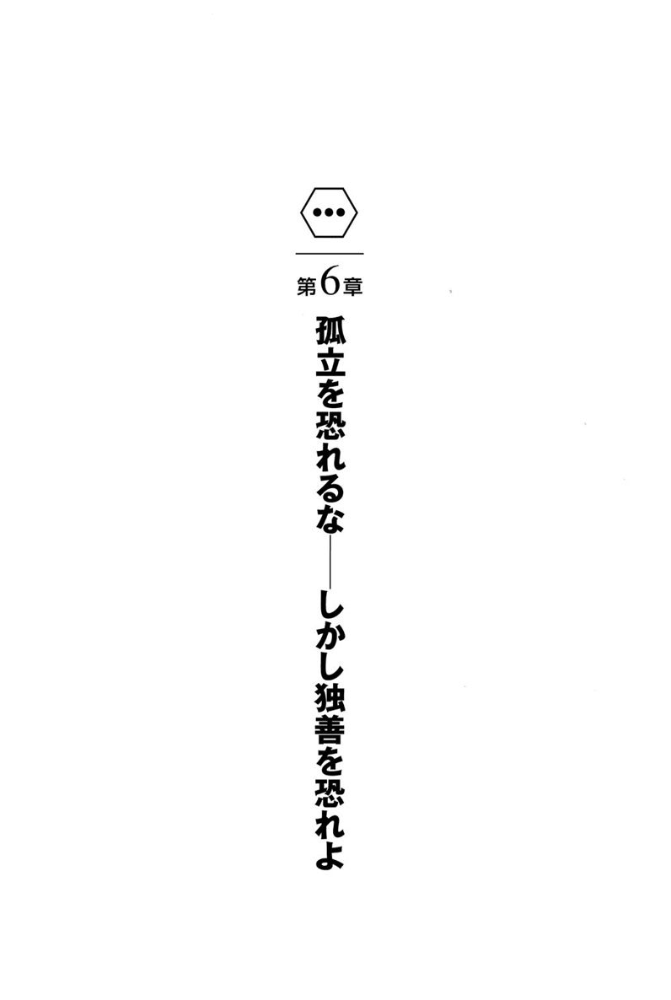
本章の私は戦闘モードである。岐阜大学の高岡健という精神科医が、著書で私を名指しで批判していたからだ。いい機会なので、徹底的に反駁しておこうと思う。戦闘モードであるから、たぶん他の章よりも、かなり面白く読めるはずだ。
しかし私は憂欝なのだ。もちろん私は勝てる喧嘩しかしないのだが、お読みいただければわかるとおり、高岡氏の議論はあまりにも穴だらけなので、「そこまで言わなくても」という同情論が出てくる可能性がある。さらに、一部の真面目な人たちの顰蹙を買うであろうこと、とりわけ以前から私の文章を読んでくれている人に失望されてしまうこと、私はそれを恐れている。しかし、これは書かないわけにはいかない文章なのだ。
問題の本は、精神科医・高岡健氏の編著書『孤立を恐れるな！』（批評社、二〇〇一）である。私は高岡氏とは面識もないわけではないし、人物としては決して悪い人ではないことも知ってはいる。学問的主張には賛同しがたいものもあるのだが、それなりに気骨のある魅力的な人物であろうと頑張って想像することもできる。だから下記の論調がどれほど激越であるとしても、高岡氏の人格攻撃では毛頭ないことをあらかじめお断りしておこうと思う。
さて、高岡氏の著書をここで取り上げるのは、ここに私がこれまで批判してきた、「思春期問題のイデオロギー化」という問題、あえて言えば『病理』が、如実に露呈しているためでもある。もちろん、私自身が本書の中で批判されているというささやかな理由もある。
そう、彼らはかつて不登校児童の権利を擁護せんとして戦った。それでは、私たちは彼らに敵対したか？ もちろん、否である。私は、あるいは私の同僚たちは、むしろ強制入院させられた不登校児たちのために、みずからの師である故・稲村博氏を誰よりも苛烈に批判したのだ。それを可能にしたのが稲村氏の寛容さであったという事実も、故人の名誉のために付記しておこう。私たちはたしかに過ちをおかしたし、それを否認するつもりも「時効」として沈黙を守るつもりもない。
私の著書『社会的ひきこもり』が、そうした過去の過ちへの反省から生まれたものであることが伝わらなかったとすれば、それは私の力量不足に帰せられなければならない。しかし、もう一度明言しておこう。出発点においては、私は決して、高岡氏らと対立する立場ではなかったことを。
しかし「彼ら」はやりすぎたのだ。不登校児擁護論は、不登校問題を聖域化、つまりタブー化してしまった。あえて言えば、ひきこもり対策の遅れは、こうした聖域化によって助長された。「不登校児こそが素晴らしい」というイデオロギー化は、ある種の不登校児を疎外すらしたのである。
いまや不登校児童は一三万九千人、中学生の実に三六人に一人が不登校という時代となった。念願かなった高岡氏は、この状況を喜ばしく考えているのだろうか。今でも不登校には一切不適応的側面はありえないと、臨床家として主張するのだろうか。もしそれが臨床とは無関係の政治的スローガンであるのなら、私は高岡氏、あるいは氏と主張を同じくするものたちと徹底的に対立するだろう。
高岡氏の本を読めばわかることだが、そこには抽象的な理念は厖大にあるものの、治療論も技法論もない。孤立を推奨するからには、そのための具体的な方法論くらいは示すべきだと思うのだが、氏はそれを潔しとしないのだろう。
すぐれた臨床家は妥協と折衷の達人である。一方、臨床よりも理論を優先する教条主義者やイデオローグたちは、一切の折衷を認めない。もちろん私は、最も過激な折衷派でありたいと願うものだ。だから高岡氏のような人たちの言葉にも、一片の真実を読みとろうとする。敵味方をスプリットさせ、敵と認知した人の言動は徹底して否認するという「妄想─分裂態勢」に陥らないことが、私のモットーなのだから。
吉本隆明氏が『週刊文春』二〇〇一年三月二九日号に寄せた「ひきこもれ！」という能天気なコメントについて、高岡氏は「あとがき」で絶賛する。これこそが氏の言いたかったこと、なのだそうだ。実は私もこの号に、ひきこもりに関するコメントを寄せているのだが、なぜか高岡氏の眼には止まらなかったらしい。
それはともかく、吉本氏の発言は正論には違いない。ただし、それは世間知らずの正論である。ひきこもって本を書いたりコメントしたりして生活が成り立っている人が、「ひきこもり」は素晴らしいと主張するのは構わない。誰にでも自己愛はあり、そこから語ることしかできないのだから。ただし、吉本氏のひきこもりは編集者とか高岡氏のような熱心なファンによって暗黙裏に絶大な支持を受けている。つまり、吉本氏は実際にはひきこもりではない。孤立もしていない。そういう認識をもって「でも、ひきこもりもそう悪くはないよ」と呟くだけなら、私もそれを支持しただろう。しかし「ひきこもれ！」というアジテーション化は感心しない。自分は安全圏にいて、若い連中にはあえてリスクをおかせというような独善的な説教に、誰が納得するものだろうか。
さて、私自身のことを言うなら、多少は心情左翼的なところもある人間であることを否定はしない。日教組に所属する両親のもと、朝日新聞だけを購読して生きてきた素直な人間と同程度には左翼的である。かと言って、南京大虐殺が史実であるかどうかには、いまだ懐疑的であるし、保安処分問題をタブー視するほどかたくなでもない。石原慎太郎も、その小説に限っては福田和也氏と同意見で、希有にして素晴らしい小説家であると考えている。
イデオロギー的な態度について問われれば、中井久夫氏が若い頃、幼いマルキストたちにオルグされるたびに、ヴィトゲンシュタインを引用して論破していたという逸話が好きだ、と述べることにしている。だから精神科医の書いた政治的文章で最も見事なものが中井氏の昭和天皇論「昭和を送る」であると信じている。
左翼的なイデオローグたちを「可愛そうな連中」（浅田彰）と切って捨てるほど傲慢ではないつもりだが、そこから新しいものが生まれてくるとも思わない。その印象は、高岡氏の著書を読んでもほとんど変わらなかった。というか、むしろ強化されてしまった。とはいえ、もし「彼ら」に対話を求められたら、拒むつもりはまったくない。話し合いには応ずるし、笑って握手もするだろう。
しかし悲しいことに、私は「彼ら」に嫌われている。フリースクール活動で知られる某女史は、私との対談企画がもちあがった際に、きわめて感情的に拒否したと伝え聞いた。噂だから真偽のほどはさだかではないが、たぶん事実なのだろう。それにしても、なぜ拒否されるのかがわからない。私は妥協はしないが、誰とでも対話する準備はいくらでもある。これまでタメ塾の工藤定次氏や、哲学者の村瀬学氏ら、論点が対立する論者ともうまくやってきた。論点においては一切妥協することなく、しかし和気藹々と対話をするという技術に関しては、自分の中で定評がある。
だから彼らも、物陰で批判していないで私を対話の場に呼んでくれれば、それですむことなのだ。あえてそれをしないとすれば、私にはよくわからない、なんらかの恐れか脅えが、彼らの中にあるとしか思われない。
さて問題の書『孤立を恐れるな！』である。
この本は、孤立を恐れない人の本にしては、なぜか気の合う仲間と対談ばかりしている印象が残ってしまうのだが、それについては、まあ不問とする。最も批判しがいのあるのは、やはり冒頭におかれた「キーノート『一七歳』論」であろう。
一読してあきれた。これは少なくとも、大学教員が書くべき文章ではない。かと言って、プロの文筆家の文章でもない。強いて言えば論文なのだろうが、これほど穴の多い論文を読む機会はめったにないものだ。こうした「穴」のもつ意味合いはきわめて大きいので、ひとつひとつ丹念に掘り起こして進もうと思う。
まず「排除されるべき〈社会事象の精神医学化〉」（一四頁）。このくだりは要するに社会的事象を精神医学の言葉で語るなということに尽きると考えられるのだが、高岡氏は社会学の側においても、社会の心理学化（ほぼ精神医学化に等しい）が指摘されていることをご存じないのだろうか。要するに、これは精神医学の側だけの「問題」なのではない。むしろ社会的変動がもたらした表象文化内部の、表象そのものの変質ととらえるべき現象なのである。つまり、われわれがこうした変質を準備したのではなく、人々がそれを求めたと考えるべきなのである。
不登校、ひきこもりを精神医学化すべきではない。なるほど、その当否はともかく、その主張にはみるべきものがあるかもしれない。しかし奇妙なことに、なぜ「不登校」「ひきこもり」が特別にそうであるのかは、一切明言されない。どうも「そういうことになっている」という教条的文脈が透けて見えるのだが気のせいだろうか。また、まったく同じ視点から笠原嘉氏が輸入した「スチューデント・アパシー」概念の批判も可能であるはずだが、こちらはほぼ不問とされているのはなぜだろうか。こういった疑問はいくらでも出てくる。適応障害、摂食障害、そういった概念の精神医学化については認められるのはなぜか。しかし答えはない。
つまるところ、概念の提唱者が人格的に正しいか正しくないか、こうした判断が先行しているように思われるのは偏見だろうか。稲村博氏は不登校の入院治療を行ったから「悪」。笠原氏はレインの翻訳もしているし反精神医学にも理解があるから「善」。これが誤解と言うのならいくらでも訂正する準備はあるが、どうも高岡氏には、こうしたスプリッティングに近い素朴な世界観が骨がらみにしみついているような印象がぬぐいきれない。
一九頁「不登校の大部分は、何ら精神医学的診断名のつかない『正常な』少年です。（中略）診断マニュアルを援用したとしても、そうなります」とあるが、これにははっきりと疑問がある。不登校事例の相当部分に、たとえばＤＳＭ─Ⅳを用いて「309.9特定不能の適応障害」という診断を下すことは、必ずしも不可能ではない。ＩＣＤ─10においても、「F91.1非社会性行為障害」という診断が十分に可能である。また誤解されそうなので断っておくが、私はあくまでも、そういう診断が可能であると指摘しているだけであって、そのように診断すべきであると考えているわけではない。また、「適応とは何か」「社会性とは何か」といったトリヴィアルな議論はこの文脈では関係ない。
一般向けの著作ということで気が緩んだのか、これではあきらかに学問的に不誠実な態度と言われても仕方がない。どうして高岡氏が国際分類のような「権威」をここで持ち出すのか、その意図は不明であるが、これではまったく逆効果である。ＤＳＭ─Ⅳの「ＧＡＦ尺度」を持ち出すまでもなく、これらの診断基準においては「適応」の指標が青少年であればまず「学業」であり、仲間との良好な関係なのだから。そもそも高岡氏の主張は、「適応」の解釈ひとつとっても、こうした国際分類的な適応概念とは真っ向から衝突するのだから、そうしたものを援用すること自体が矛盾している。
さらに言えば、高岡氏の議論は、欧米圏ではまったく理解されないであろう。「個人の自立」が「個人の社会化」と不可分に結びついた彼らの文化においては、「孤立から自立へ」という論調そのものが異様なものに映るであろう。その意味でも高岡氏には、二〇〇二年八月に開催されるＷＰＡ横浜大会あたりで、同じ趣旨の発表を試みられることをお節介ながら推奨したい。
「いじめ」の問題についても同様である。私はすでに深刻ないじめ被害としての複雑性ＰＴＳＤについて何ヵ所かで言及しているが、これもいじめ被害者から崇高さを奪う「偽精神医学化」ということになるのだろうか。私の知る限り、わが国で最も深刻な人間不信に基づく対人困難を呈する事例は、こうしたいじめＰＴＳＤ事例にほかならないのだが、事例数があまりにも厖大であるため、さしあたり「精神医学化」されることが最も望ましいと考えている。つまり、すべての精神科医がいじめ被害者に対応するための情報を蓄積し、技術を発達させること。こうした提案も高岡氏はお気に召さないだろうか。
しかし「学校という集団の劣化に伴う〈個〉の窒息死がいじめにほかなりません」（一七頁）と断定し、学級崩壊が進行すればいじめ集団は成立しなくなるから崩壊は健康である、とする論調は、かなり控え目にみても能天気としか言いようがない。孤立を恐れない高岡氏は良いのかもしれないが、どれほどの人がこうした見解に同調するか、そういう配慮はないのだろうか。私はこうした論調には、はっきりと反対である。こうした抽象論ばかりが横行した結果として、現場での具体的なスキルが育ってこなかったという恨みがあるからだ。いじめ被害者について精神科医がなすべきことは、まずその事例がＰＴＳＤである可能性を十分に検討し、もし該当するならＰＴＳＤに対する適切な対応と治療とを試みることである。もし、こうした提案に対しても「それはいじめの偽精神医学化であり、それによって被害者は二重に疎外されるのだ」といった反論がなされるというのなら、もはや何をかいわんや、である。
さて、これに続く「これさえなければ」（二〇頁）の一節は、ほとんど失笑ものの珍解釈のオンパレードだ。ひきこもりの珍精神医学化（ファニイ・サイキアトライゼーション）である。この部分は小出浩之氏の論文に依拠したとあるが、この引用がもし正確であるのなら、残念ながら小出氏も誤っているとしか言いようがない。まったく、このくだりさえなければ、ぎりぎりエッセイとしては読むに耐えるものになったかもしれないのだが、残念なことだ。
ここではラカン派の用語が用いられている以上、とくに断りがない限りはラカンの文脈で読まれるべきくだりと思われるので、私もラカニアンとして批判するとしよう。それにしても高岡氏は、フロイト─ラカンこそ精神分析を社会学化する契機をもたらした張本人であるという事実については、またしても沈黙している。おそらく、この沈黙は無知によるものとして好意的に解釈されるべきであろう。
さて、偽ラカン派（スウド・ラカニアン）としての高岡氏は、超越論的自我と経験的自我の区分についてふれているが、もうこの時点で大きな誤りをおかしている。ラカンに依れば、「自我」とはそもそも「想像的なもの」なのであって、そこに超越論的─経験的という区分を設けることはできない。よってこのくだりは、小出氏のオリジナルであるか、高岡氏の引用が誤っているかのどちらかである。しかし小出氏オリジナルであるのなら、そういうマイナーな概念には注釈をつけるべきである。
さらに超越論的自我に対して「想像的なもの」を、経験的自我に対して「象徴的なもの」を対応させているが、これも誤り。どうしても対応させたいのなら、逆であろう。このくだりに続いて、統合失調症について「超越論的自我の排除」としているため、誤りはいっそう決定的になる。これだと統合失調症は「想像的なものの排除」に起因することになるが、言うまでもなくラカンのオリジナルなら精神病（＝統合失調症）とは「象徴的なものの排除」によって起こるとされている。このようなごく初歩的な間違いが起こるのは、ラカンないし小出氏をなんらかの権威として取り扱わなければならない高岡氏の個人的な事情によるのであろう。とすれば、こうした「書き間違い」にも、格別な無意識的意図を読み込みたくなろうというものである。
ここまででも、ほとんど読み進む気力が萎えるような間違いの連打なのだが、いちおう言わんとすることはおぼろげながらわからないではない。というか、この程度のことを言うのに、ラカンとか持ち出す必要はないな、というレヴェルの議論なのだ。以下は、「そのレヴェル」の議論に対する批判である。
高岡氏はひきこもりについて、「これさえなければ」の病理であると考える。いや、氏は正確には「病理」という言葉は使っていない。ただし、統合失調症と対比的に論じているため、病理的に論じられている印象は残る。「これさえなければ」とは、つまり自己臭、醜形恐怖などに代表されるような「この臭い（容貌）さえなければ」という葛藤を指すらしいのだが、氏はもちろん自己臭症が名古屋大学の村上靖彦氏らによって「思春期妄想症」と呼ばれていた事実をご存じのはずである。つまり、これらの症状がひとつの疾患単位を構成するとみなされていた経緯について、またしても氏は口をつぐんでいるのだ。今どき、これほどわかりやすい「否認」のメカニズムを呈するケースは珍しいのではないか。
氏の主張は、こうした症状については境界例と同様、「社会との対峙の方法として、生命に緊急の危機が及んでいない限り、いったんは保証されるべき」（二二頁）であるというものだ。これは実に革命的な視点であって、なるほどたしかに、徹底した反精神医学的視座と言うべきではある。それでは、高岡氏は精神医学自体を否定し去りたいのだろうか？ ここであらためて不思議に思うのは、本書に頻出する「精神医学を僭称する」「自称精神科医」「精神医学の名を騙った」などという表現だ。これを素直に受け取るなら、精神医学そのものにはまともな存在意義が与えられているわけで、問題はそれを援用する個々の医師に限定されることになる。しかし、そうであるなら、いったい精神医学の対象とは何か？ 高岡氏はたとえば境界例について「生命に緊急の危機が」ある場合と「マイクロサイコーシス」を呈した場合のみ治療をすべきであるとする。「『一七歳』たちに対して、これ（応急対応）以外の治療を行なうならば、それは逸脱であり、乱用された治療にほかなりません」（四一頁）というのだ。これはとうてい、同意しがたい。「治療関係」ということを考慮した場合、一見安定し、症状が少なくなったかにみえる時期のかかわりこそが重要であるということはほぼ常識に属すると思われるが、そうした「治療」すらも氏は否定するのだろうか。
これに続く「ひきこもりと犯罪は関連するか」（二二頁）に至っては、まったく唖然とさせられるような主張が展開される。高岡氏は「孤立が保証されない」あるいは「孤立を恐れている」場合に限っては、ひきこもりは犯罪と関係する可能性があるとする。
いったい高岡氏は、臨床場面でどれだけのひきこもり事例を診てきたのだろうか。こういう言い方のずるさは承知のうえだ。それにしても、すべては高岡氏の夢想の中で起こっていることなのではないかと苦言を呈したくもなる。これはあえて断定的に言うが、高岡氏のひきこもり理解は、理念的な制約にがんじがらめになっている。どこかに存在するかもしれない理想的なひきこもり青年を擁護しようと躍起になっているようにみえるのだ。しかし、そんな事例はどこにもいない。だからこんな誤りを平然と記すことになる。高岡氏の主張はほとんど、「ひきこもりは犯罪と関係がある」という断定に等しい。なぜだろうか。
孤立を保証され、あるいは孤立を恐れていないひきこもり事例など、ほとんど存在しない。私はこれまで、ほんの三〇〇例程度しかひきこもり事例を診てこなかったけれども、その経験から考えても、そんな事例は一％もいないと断定できる。そして、それにもかかわらず、ひきこもりは犯罪とほぼ無関係なのである。孤立を保証されず、常に孤立に怯えながらも、一線だけは越えまいと踏みとどまっている彼らは、高岡氏のこの言葉をどうとらえるだろう。
そもそも孤立することになんの葛藤もない状態では、ひきこもりそのものが持続しない。高岡氏の期待に反して、孤立を恐れない人間はひきこもりなどとは無縁の存在なのだ。「孤立を恐れるな！」というアジテーションにうなずくことができる人間は、孤立したことのない人間だけだ。多くの「お仲間」に支えられ、和やかに対談などしている人間から「孤立を恐れるな！」と諭されて、勇気づけられる当事者が果たしてどれほどいるだろう。
どうも高岡氏は誤解しているようなのだが、私ははっきりとひきこもりを擁護しようと試みている。それはたとえば二〇〇〇年九月一日の『朝日新聞』の論壇原稿や『私がひきこもった理由』（ブックマン社、二〇〇〇）の解説を読むだけでも理解できるはずだ。私が考えていることは、ひきこもりを個人が選択可能な生存の形式にまで肯定的に高めることであり、この点では高岡氏と一致点もある。ただ私は、高岡氏ほど潔癖でも理想家でもないので、ほとんどの人が孤立やひきこもりに耐えられない事実も知っている。ひきこもり肯定論をどこまで押し進めても、それはついにはマイナーな生の形式でしかありえないだろう。よって「ひきこもりたくないのにひきこもっている」大多数の人々には、あくまでも治療者としてかかわるほかはないと考えている。
高岡氏の最大の誤謬は、「孤立を恐れるな！」というアジテーションと「孤立を保証せよ！」というスローガンが実は矛盾を含んでいることに無自覚であるという点である。こうしたナイーヴさが、あるいはこの世代独特のものであるのかもしれないことを、私は危惧している。
なぜ矛盾なのか。考えてみてほしい。社会に向けて「孤立を保証せよ！」と訴えかけるのはいい。しかし、それはいかなる「保証」なのか。家族にとって「孤立の保証」とは、まず経済的な保証であり、心理的な保証ということになるが、そんなにも手厚く保証された「孤立」が、本当に孤立と呼びうるかどうかという懐疑は、高岡氏にはみじんもないらしい。「保証された孤立」など、語義矛盾でしかない。私も孤立を否定的にはとらえないが、しかし孤立は周囲の意向に反して戦い取られるべきものであると考えている。対立に耐える強さがあってはじめて、孤立は肯定的な価値を帯びるだろう。しかし同時に、おそらく私や高岡氏自身も含めて、ほとんどの人間にはそうした強さは備わっていない。
また、孤立に耐えられる人間にとっては、「孤立を恐れるな！」という言葉は無価値だし、「孤立を保証せよ」という言葉は薄気味の悪いお節介でしかないだろう。
高岡氏は、私がひきこもりを定義する際に設定した「六ヵ月以上社会参加しない」という項目も不満であるらしい。ひきこもりそのものは病気ではないこと、ひきこもりそれ自体については価値判断は控えるべきこと、そうした留保を設けてきたにもかかわらず、そうした記述や発言はまったく無視されている。意図的な無視なら書き手としての誠実さが疑われるし、単なる見落としなら怠慢のそしりを免れないだろう。
しかしまあ、高岡氏はひきこもりという概念自体がお気に召さないのだから、おそらく期間など本当はどうでもいいのだ。一年でも一〇年でもこれは同じことなのだろう。それは山登敬之氏、石川憲彦氏らとの鼎談においても「（事例の年齢が）『一七歳』であっても二七歳であっても、『現時点ではこれでいい』といいます」（六三頁）と発言していることからも明らかだ。臨床よりもイデオロギーを優先する人らしい一貫性ではある。
高岡氏が私を直接に批判するもうひとつの論拠は、私が不登校を風邪に喩え、ひきこもりを結核に喩えたくだりである。氏はこの比喩をとらえて、あろうことか、スーザン・ソンタグ氏のいわゆる「隠喩としての病い」の典型であると批判する。言うまでもなく私は、そうした誤読を恐れて、この比喩の意図するところをかなり念入りに説明している。その部分を無視して、比喩として使っているから「隠喩としての病い」だ、という批判は安直にすぎる。
この「不登校は風邪、ひきこもりは肺炎や結核」という喩えについては、私は今でも間違ってはいないと考えている。風邪は放置しても治るが、ほとんどの結核は治療を必要とするだろう。同様の意味で、不登校は本人の気持ちにゆだねて見守ってもよいが、ほとんどのひきこもりは無理だ。この表現がおかしいと言うなら、大部分のひきこもりは放置しても問題ないとするという臨床的な根拠を示すべきではないか。
話をわかりやすくするためだけに用いた比喩を、エイズや結核が社会文化的にどのように表象されてきたかというソンタグ氏の議論にまで関連づけていただいたことは、たいへん名誉なことではあるが、もちろん単純な誤読だ。誤読でなければ、為にする議論だ。ただし、人の揚げ足をとりたいのなら、ソンタグ氏にせよ私の著書にせよ、ちゃんと目を通してからやることだ。そうでないと、こういう連想ゲームは、まるで一種の教養コンプレックスに起因するかのように見えてしまう。
むしろ私が気になったのは、高岡氏の「こういった隠喩を用い続ける限り、かならず社会はひきこもりから復讐されるでしょう」（三四頁）という記述である。「ひきこもりから復讐」とは、どのような事態を指すのであろうか。ひきこもりは化け物なのか。もっともさきにも述べたように、高岡氏はひきこもりと犯罪の関連性をほとんど肯定している。それだけに、こっちの「隠喩」のほうが私には恐ろしい。
高岡氏には、ぜひとも中島義道氏の著作を読まれることをお勧めしたい。中島氏は本来の意味でのひきこもりを経験し、そこから立ち直った経験をもつ哲学者である。氏がその著作の中で、働くことの必要性には懐疑的な態度を維持しながらも、人間とかかわる必要性だけは肯定する意味がおわかりだろうか。
高岡氏は私が「揺るぎない存在が必要」といった信念があるのではないかと批判（？）している（三四頁）。私に思い当たることがあるとすれば、「人間は空気のように人間関係を必要とする」という個人的信念がそれに当たるのだろう。だからこそ、すでに何度か述べてきたように、ひきこもりの治療目標を就労や就学でもなく、まして「打ち込める何かを見つけること」でもなく、「親密な仲間を作ること」という一点に設定しているのだ。これは経験論的な結論にみえて、実は精神分析的な要請でもあり、さらに言えば倫理的要請でもある。
倫理的要請？ おそらく高岡氏は首を傾げるだろう。しかし、そうなのだ。どのように生きたとしても、人間は社会的存在であることを免れない。「孤立」の美学は、一種の甘え上手にのみ許された特権でもあるという逆説がおわかりだろうか。高岡氏が精神科医として孤立を推奨するのなら、言いっぱなしではなく、いかに社会と折り合いながら孤立すべきか、そのためのスキルを伝えていくべきではないだろうか。その際「集団」と「個」が、分離可能な対立概念であるという視点のナイーヴさについても、臨床家として一度は疑ってみることをお勧めしたい。
このところ、「リストカット（手首自傷）」をはじめとする、自傷関連の本の出版が相次いでいる。目についただけでも、南条あや『卒業式まで死にません』（新潮社、二〇〇〇）、ロブ＠大月『リストカットシンドローム』（ワニブックス、二〇〇〇）、今一生『生きちゃってるし、死なないし』（晶文社、二〇〇一）、小田晋『リストカット』（二見書房、二〇〇〇）などがある。もちろんリストカット自体は目新しい現象ではないのだが、この増加ぶりは、いったいどうしたことだろうか。
小説にも、これをテーマとした作品が少しずつ増えているようだ。拒食症小説『鏡の中の少女』で有名なあのレベンクロンが『自傷する少女』（集英社文庫、一九九九）を書いているし、キャロライン・ケルトウェル『スキンゲーム』（青山出版社、二〇〇一）という自伝的作品もある。前者は相変わらず達者なもののやっぱり教科書みたいに整然としすぎているし、後者はドキュメンタリーならではのリアリティが半分、鼻につくナルシシズムが半分、という案配。もっともましなものが自傷経験をもたず専門家でもない小説家・赤坂真理による『コーリング』（河出書房新社、一九九九）というのも、何か示唆的ではある。
映画では、一九九九年末に公開されて大ヒットしたデヴィッド・フィンチャー監督の『ファイト・クラブ』がある。自傷とは少し異なるが、なかばは自傷行為のように互いに殴り合う秘密クラブをめぐる、ブラック・ユーモアにみちた物語だ。今にして思えば、あまりにも暗示的なラストシーンが印象的である。純粋な自傷ものとは言えないが、村石雅也の映画作品『ファザーレス』は、当事者が作ったにもかかわらず、体験がそのまま表現の域に届いているという点では希有な作品と言えるだろう。
それが現実の反映であるかどうかはともかく、インターネット上の掲示板でも、リストカットや自傷は重要なトピックだ。とりわけライター・ロブ＠大月氏が運営するサイト「自傷らーの館（現在は自傷らーの館（ぱーと２）へ移動）」は、もはや有名すぎて引用するのがためらわれるほどだが、ここの掲示板は依然として、自殺・自傷志願者たちの呟きであふれている。
──相変わらずリスカしてます。おととい、ＯＤで救急車で運ばれて胃洗浄されたみたいです。でもＯＤはまります......。
──リスカが止まらにゃい......切ってばっかり。学校とかでも切っちゃう......腕血まみれで保健室にいるのぉ......。
──彼氏がドラックを辞めてなかった。自分がふがいなくて左手を二ケ所根性焼きしました。
──リスカは、怒りや不安を解放出来る。だからやめない。アタシには、生きるために必要。
──今日、ちっちゃなビーカーを買ってきた。もし、またリスカをしたら、これで血を受けようと思う。
あなたが精神科医、あるいはカウンセラーであるなら、そろそろイライラして腹を立て始めているのではないだろうか。そして、これまでかかわってきた徒労も同然の面接や処置の記憶を苦々しく思い出すことだろう。しかし果たして、あなたの怒りはどれほど正当なものだろうか？ あるいは、あえて常套的な質問を試みるが、あなたはいったい、誰に対して腹を立てているのだろうか？ 本人に？ 家族に？ 掲示板の管理者に？ まさか社会全体に？
私自身、もちろん職業的にはリストカットは治療の対象ではあるが、さしあたり個人的な興味の対象ではない。興味というならむしろ、リストカットを取り巻く文化的状況のほうに関心がある。なぜ今にして、「リスカ」のブームは続いているのか。彼らは、われわれの「治療文化」と、いかなる関係にあると言えるのか。
痛みは間違いなく、その都度確実に訪れてくれる小さな死にほかならないだろう。だからリストカットを「死の欲動」などと「説明」したとしても間違いではない。ただし、問題はまたしても精神分析の先にある。なぜ「リスカ」なのか。つまりそこにタナトスが潜在することはよいとして、それがリスカという形態をとるのはなぜなのか。そうした特異性になってくると、もはや精神分析は沈黙するほかはない。
小田晋氏によれば（前掲書）、リストカットには古代ローマに遡る長い歴史があるという。当時皇帝に自殺を命じられた貴族がとる手段が、まさにリストカットであったというのだ。シェンキェビッチの小説『クォ・ヴァディス』には、皇帝ネロの怒りを買ったネロの側近ペトロニウスが自決を命じられ、切った手首を薬液の入った瓶に入れて失血死するシーンがあるという。小田氏はこの耽美的なイメージが、リストカットの流行現象に一役買っていると推測する。
芸能通の小田氏らしく、話題はいきなり古代ローマから現代日本の中森明菜や宮沢りえに及ぶのだが、「切腹」にふれないのはいささか残念な気もする。審美性と象徴性という点から考えるなら、「切腹」は最も洗練された──日本的スノビズム？──行動化様式のひとつと言いうるだろう。切腹が廃れ手首自傷が依然として流行しているという違いは、美的イメージだけではなかなか説明が難しい。
精神医学の領域では、この問題はかなり以前から研究されている。とりわけ一時期、境界性人格障害がWristcutting syndromeと呼ばれていた経緯はよく知られており、決して最近の流行現象というわけではない。
安岡誉氏の総説（「Wristcutting syndrome」『季刊精神療法』四巻二号、一九七八）によれば、この問題への関心は、Emersonの報告以来、一九六〇年代の欧米で急速に高まったという。とりわけ若年層を中心に、治療が困難で慢性的に入院を続ける自傷行為患者が急増したことが背景にあるとされる。当時はまだ「解離」という言葉が今ほど一般的に用いられていなかったが、認知の不連続性や離人症状との類似がすでに指摘されており、現象としては現在なされている行為とまったく変わりない。ちなみに、一九六九年に発表された論文（Ping-Nie Pao:The syndrome of delicate self-cutting.British Journal of Medical Psychology, vol.42,pp.195-206, 1969.）から、自傷行為に関する記述を抜粋してみよう。
──患者は理由がわからずに緊張を感ずる......ひとりになった時、緊張は高まる......自分を傷つけたいと希んでいることを意識していて......切るべきか切らざるべきか迷うが、すぐにまったく自己陶酔状態となり、周囲の状況や人物とは無関係（無関心）となって、cuttingをしてしまう。そして、流れ出る血をみてcuttingをしてしまった自分を突然見いだす......しばらくの間、嫌悪、後悔、罪悪感を感じ......同時に、「すんでしまった」と、ほっとする。
これに続く精神分析的な解釈は、自体愛、サディズム、マゾヒズム、退行などをキーワードにして進むのだが、さすがに古さは否定できず、ここでは省略する。
いくつかの総説を参考にして、この問題の特徴を簡単にまとめておこう。
・診断的には、境界性人格障害、双極Ⅱ型障害などに多くみられる。解離性障害や摂食障害との関連もしばしば指摘される。
・圧倒的に女性に多い。報告にもよるが、八─九割は女性が占める。
・年齢は二〇代から三〇代前半、中流以上の家庭で育った高学歴の女性が典型的。
・自傷歴はしばしば一〇代からみられる。
・生育歴上、幼児期のトラウマ（とりわけ性的虐待）や離婚などに伴う家庭環境のストレスに関連性が高い。
・感情のコントロールに問題があり、衝動的な傾向が認められる。
・生物学的には、自傷行為中の血中エンドルフィン濃度の上昇や、セロトニン系の障害も示唆されているが、本稿では精神分析的立場から、こちらには言及しない。
・自傷行為の効果として、心理・生理的な緊張解放を指摘する研究は多い。
・治療についての定式化は不十分である。行動療法、ＳＳＲＩなどが部分的には有効とされている。また自助グループ活動にも一定の有効性が認められる。
リストカッターに限ったことではないが、こころ系のサイトや掲示板は、精神科医と薬への批判、批評で満ちている。そこで崇拝されるのは、たとえば『完全自殺マニュアル』（太田出版、一九九三）および『人格改造マニュアル』（同、一九九六）の著者である鶴見済氏だ。ＡＣ運動がそうであったように、リストカッターたちの主張は、一種の医療消費者運動にみえないこともない。してみると鶴見済氏は、きわめてニヒリスティックなラルフ・ネーダーのような存在なのだろうか。
鶴見氏は否定するだろうが、彼の戦略の効果は、あきらかに逆説的なものだ。彼は自殺や精神医学にまとわりつく「物語性」を、徹底した情報開示によって破産させようとしたのではなかったか。ロマンティックな自殺は存在しない。あなたが本気で死にたいのなら、ほら、こうすればいいんだよ。あなたが本当に自分を変えたいのなら、クスリが一番手っ取り早いんだけどな......。そう、そこで問われているのはむしろ、「あなた」がどこまで本気で自殺を、あるいは自己改革を望んでいるのか、という動機の問題なのだ。
自殺には美学なんかない。自分探しに本当の答えなんかない。徹底的に具体的な氏の情報提供は、ただそのことだけを言いたげにみえる。しかしその姿勢は、氏の戦略に反してあまりにも良心的、かつ誠実きわまりないものではなかったか。もちろん、その影響を統計的に測定することは不可能なことだ。わかっているのは『完全自殺マニュアル』の一三〇万部という販売部数のみ。情報開示のみで自殺が増えたりなんかしないことは、むしろ当然のことだ。でも、もちろん減ることもない。
自殺や自傷をやめさせたいなら、それにまつわる物語性を破壊すればいいという発想は、実は結構古くからある。小田晋氏によれば（前掲書）、少なくとも江戸幕府はそれをよく理解していた。心中の増加に頭を悩ませた幕府は、「心中」という言葉の使用を徹底して禁止し、かわりに「相対死」という呼び名を普及させた。その結果、心中の件数は激減したという。あまりによくできた話という気もしないではないが、それなりに説得力はある。今で言うなら「暴走族」を「珍走団」と呼ぼう、という提案がこれに当たるだろうか。なるほど、たしかに血気盛んな青少年が、ぜひとも珍走団に入りたいと憧れることはなさそうだ。
あるいは編集家の竹熊健太郎氏が提案する「中央線機関車トーマス化計画」はどうだろう。中央線で飛び込み自殺があまりにも多いことに頭を悩ませた竹熊氏は、自殺志願者によそに行ってもらうべく──自殺防止のため、ではない──中央線の車両をすべて機関車トーマスにするようＪＲに要請する。迫りくるトーマスの顔の下で死のうと思う人間はだれ一人いないに違いないという卓抜なアイディアだが、残念ながら竹熊氏みずから描くすばらしい完成予想図抜きでは、今ひとつ効果が理解されにくいのが難点である。
しかし珍走団はともかく、自殺の物語化の抑止として、それを陳腐化させるという手段がどれほど有効なもの足りうるだろうか。それは、ひとりトーマスの問題に限らない。どれほど江戸幕府が強力に禁止しようと、相対死はすでに死語で、心中はいまだ死語になっていない。心中ものの人気はいまだ根強く（『失楽園』！）、『アルマゲドン』『タイタニック』そして『アイアン・ジャイアント』に至るまで、自己犠牲的行為は、感動ものの定番の座をゆずっていない。そう、自殺はもっとも陳腐化に抵抗する物語のひとつなのだ。
その証拠に、著名人が自殺すると、必ずといっていいほど動機が詮索される。どれほど専門家が自殺は病的なものであると強調しようとも、いっこうに人々は啓蒙されたがらない。自殺には必ず動機があり、その動機は必ず崇高なものとみなされる。そう、自殺はすでにして一個の自律的な物語なのだ。ここで三島由紀夫の評価の八割が、彼の自決行為に向けられているという現状を考えてもよい。なるほど、自殺の崇高さを徹底的に解釈することで大江健三郎の『取り替え子 チェンジリング』（講談社、二〇〇〇）のように興味深い小説が書かれるのであれば、そうした風潮もまったく無意味ではないのかもしれない。しかし、この小説において「心理学者」（伊丹十三が傾倒した岸田秀？）たちが批判されているのは、私にとっては徴候的である。ここでは心理学者たちが、物語から崇高さを奪う破壊者の位置におかれているからだ。
自殺、自傷は、こうした物語化と深い関連性をもっている。死そのものにふれることができないわれわれは、物語を媒介とせずには、死と向き合うことができないのだ。今なお「死」が物語の源泉であるということ、死を巡る物語は決して衰弱しないこと。それは、生と死という二極の間に、あらゆる隠喩が派生することと無関係ではないだろう。「死の本能」とは、こうした隠喩的連鎖のひとつの方向性を指す言葉なのだ。
ライターの渋井哲也氏からリストカットについて取材を受けた際、私は彼から興味深い話を聞いた（その結果は、『中央公論』二〇〇一年九月号に掲載されている）。先述したように、リストカッターの約八割は女性が占めている。しかしその動機について、男性はしばしば口ごもり、うまく語れない傾向があるのに対して、女性はかなり明晰に語りうるのだという。つまり、なぜ手首を切るのかについて、女性のほうが明確な因果関係の認識をもっているということだ。
この話を聞いて私がすぐ連想したのは、「ひきこもり」である。言うまでもなく「ひきこもり」は男性に多い。男性が全体の七─八割くらいを占めている。しかし、男性事例の半数近くが、自分がひきこもった理由を語れない。これに比べ、女性はほとんどの場合、ひきこもるに至った物語を語ってくれる。ひとつの根拠として、親からの虐待経験をもつ男性事例はほとんどいないが、女性で心理的虐待を経験している事例は、結構多い。
リストカットの性差について、社会的に女性は攻撃性を外に向けて表現することが苦手であり、むしろ内向しやすいためという説がある。あるいは、男性は社会的に感情を抑圧するトレーニングを経ているため、行動化を免れるという説もある。しかし、このように想像的に語られた性差ほど、反精神分析的なものもないだろう。
かりにリストカットが近代以降の病理であると考えるなら、前近代において、これに該当する行動化はどのようになされていただろうか。ここであらためて確認しておくべきなのは、本来「自傷は文化」であった、ということだ。
前近代的社会における多くの通過儀礼が、自傷の手続きを含んでいることはよく知られている。パプアニューギニアの一部族は、成人の儀式に際して鼻腔を傷つけて鼻出血を起こさせるという。アフリカの部族には、儀礼に手指の切断をするものが多いし、あるいは悪名高い女性の陰核切除というものもある。いや、近代社会にも皆無ではない。ユダヤ教における割礼もまた、こうした儀式的な自傷行為のひとつとして理解されるべきであろう。余談だが思想家ジャック・デリダに『割礼告白』という自伝的テクストがある。フロイト／ラカン的「去勢」に対抗すべく「割礼」を持ち出すという、いかにもデリダ的な身振りには、しかし本来の意図を越えた示唆が含まれているように思われる。
フロイトは論文「処女のタブー」（『フロイド選集』第一四巻、日本教文社、一九六〇）において、なぜ「未開人」が処女性をタブーとみなすのか、という謎を精神分析的に解釈し「処女の毒（Das Jungferngift）」について興味深い考察を展開している。最初の結婚で男性が処女を奪うことは、女性から男性への隷属を誓うことにつながる。しかし同時に男性は、去勢コンプレックスに起因する女性の太古的な攻撃性（「処女の毒」）にさらされる。このため未開人は、初婚以前にさまざまな形式的な処女喪失の儀式や風習をもっていたし、長老や司祭などに処女喪失の儀式をゆだねる文化はさらに多かった。中世における領主の初夜権なるものの起源もここにあるとフロイトは推測する。つまり、最初の夫以外のものによって処女が奪われていれば、夫は「処女の毒」の被害を免れるという理屈である。フロイトはこの過程を、蛇使いが蛇にまず布を噛ませて毒をはき出させ、それから蛇を処理することに喩えている。
こうしたタブーは、近代においても形を変えてあらわれている。フロイトが例に挙げるのは不感症の女性、あるいは初婚よりも再婚のほうがうまくいくことが多いという経験論だが、そこで紹介される、ある新婚夫人の報告した夢は興味深い。彼女は夢の中で、自分の処女を奪った夫を去勢し、そのペニスを自分につけたのだという。この夢の解釈からわかることは、女性の去勢コンプレックスが決して幼児期に限定されず、成人して以降も持続し、処女喪失によって解消する、あるいは落ち着きを得るという可能性である。
この論文が興味深い点はいくつもあるが、リストカットとの関連で考えるなら、おそらくこうした処女性、あるいは去勢コンプレックスの問題は、今なお健在ではないかという推定が成り立つだろう。女性ではロストヴァージン、男性では童貞喪失が辛うじて通過儀礼的な痕跡を残しているとすれば、このいずれもが「去勢」の反復にほかならないためである。そして、この対比においては、ロストヴァージンのほうがはるかに社会的意味合いが大きい。大衆文化的文脈において、あえて下世話な表現を採用するなら、若い女性の性能を記述するに際して重要な事項は身体サイズばかりではない。そこにしばしば処女喪失年齢が併記されていることは、逆説的な「処女のタブー」の存在証明にほかならない。そう、それは新たな共同体へ参入するために必要な手続きなのであり、近代人のひとつの不幸は、そうした手続きを合理化によって抑圧してしまった点にあると言いうるかもしれない。
破瓜の文化的な意味合いを考えるなら、それはやはり自傷行為のひとつとしか言いようがない。そして、破瓜はまた去勢の手続きでもあるということ。ここから一挙に結論づけるなら、女性の自傷行為もまた、不完全な去勢の反復として理解することができるのではないか。
フロイトの結論を敷衍するなら、「処女」はいまだ去勢否認という未熟な発達段階にあることになる。またリストカットの「基礎疾患」として知られる境界性人格障害もまた、きわめて去勢否認的な病理構造をもつ。性的虐待をはじめとする、劣悪な発育環境は、それがきわめて不適切な意味において去勢的であるがゆえに、結果として去勢の不全、すなわち去勢否認しかもたらすことはないだろう。
このように考えるなら、リストカットをはじめとする自傷行為とは、みずからの病理性を解毒し、そこに去勢の契機をもたらさんとする、一種の自己治療の試みとみなすことも不可能ではないように思われてくる。女性事例によくみられる自傷行為の過剰な物語化もまた、こうした自己治療的な文脈でとらえるなら理解しやすい。しかしここから、女流作家はトラウマを抱えるほどに生産的になる、などと結論づけることは、さすがに政治的正しさに欠ける行為なので慎むことにしよう。
ただし、私はここで、自傷行為を肯定しようとしているわけではまったくない。多くのリストカッターたちが忘れていること、それは「みずからを去勢することはできない」という、精神分析的真理である。これはまた、多くの自己治療の試みが挫折を繰り返す理由でもあるし、あるいは自助グループ活動の限界をなす原理でもあるだろう。
ではどうすればいいか。「去勢」のために、われわれはいったい、何ができるだろうか。しかし私がここで、またしても「他者」とか「セクシュアリティ」とかを持ち出してもっともらしくしめくくったとしても、それは決して「答え」にはならないだろう。つまり去勢は、ぜったいに答えなど期待できない方角からしか訪れてくれないからだ。本章はこのヒントならざるヒントで、不親切にしめくくることとしよう。
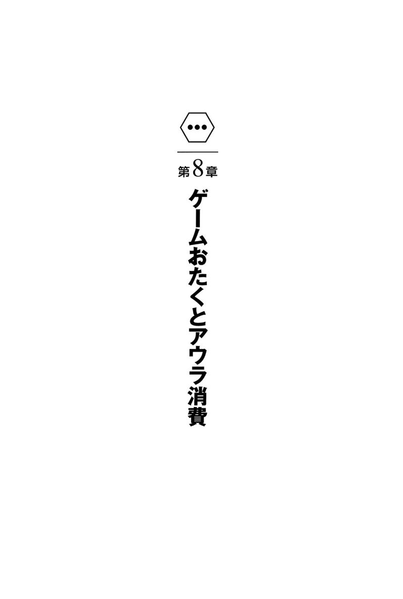
現在私が担当しているいくつかの連載のうち、最も異色と言えるのは某ゲーム誌のそれだろう。どの雑誌かはあえて記さずにおくが、ゲームとはあまり縁のない私がそんな仕事を引き受けたのは、ひとつはゲーマーの生態を知りたいという、あくまでも知的な探求心に基づいてのことだった。本書もすでに第２章で、かなりの分量をさいておたくを論じており、もうおたくについてはお腹いっぱいと感じている向きもおありかもしれない。しかし、現代のおたくの多様化ぶりは、むろんあの程度で網羅しきれるものではない。本章で中心的に論ずるのは、第２章ではふれなかった、いわゆるゲームおたくについてである。
アニメや漫画を嗜好の中心とするおたくについては、個人的にも共通の理解の基盤があり、私にとって比較的理解しやすい対象だった。しかし、ゲーム関係については、私にはそうした基盤も知識もない。嗜好としてはおたくに近いものを感じつつも、どうも異なる点も多い気がする。そんな疑問にかられていたおり、タイミングよく、ゲームおたくに直接取材する機会に恵まれた。すでにその記事は掲載ずみなのだが、紙数の関係と雑誌の性格上、あまり本質的な議論にまで深めきれなかった憾みがある。本章では、その取材資料をもとに、ゲームおたくの欲望について別の角度から分析を加えてみたい。
当の取材では、意図的にか偶然にか、タイプのまったく異なる四人のメンバーが集められた。まずはその、あまりにも個性的なプロフィールの紹介から始めたい。
Ａ青年：唯一の一〇代ながら、高校を中退してすぐ就職、自営業のノウハウを学んでから、現在はゲーム関係の会社をみずから経営しているという異色の経歴をもつ青年。金髪に黒スーツ姿のホストとみまごうその姿は、およそおたくのパブリック・イメージとはかけはなれたものだろう。ものごころついたら家にゲームがあったという典型的なゲーム世代で、幼児期から『スーパーマリオブラザーズ』にはまっていた。ファミコンなどのいわゆるコンシューマーゲームが好きで、スーパーファミコンの時代までは任天堂のファン、しかし中学生以降は、マークⅢ、ＰＣエンジン、メガドライブ、３ＤＯと、ゲームと名のつくものならなんでもやったという。彼がハマったのは、ゲームのプレイ自体よりも、バックアップ。ソフトを友人と一〇〇本単位で貸し借りして、コピーをとりまくるうちにバックアップのほうが面白くなったらしい。そのままゲームコレクターとなって、現在に至る。そのコレクターぶりはハンパではなく、たとえばプレイステーション用のすべてのソフト、あるいは今は亡き幻のハードウェア、３ＤＯもすべて持っていると豪語する。もちろん投機目的ではなく、集めて所有するのが快感なのだ。
そんな彼が憧れるのは、芸能人なら「つんく」のような位置なのだという。名声を求めるよりは、どちらかと言えば裏方で作曲したりスターをプロデュースしたりして儲けるような、あやしい仕事。メディアへの露出はすでに経験ずみで、毀誉褒貶の激しさにこりごりしたという。ゲーム以外のおたく性について問うたところ、業者の品評会はよく行くけど、コミックマーケットでは売り子のみ、ゲームショーも行ったことがないとのこと。ただ読み物系の同人誌は作った経験があるというから、やはりおたくの出自は隠せない。ちなみにアニメ『新世紀エヴァンゲリオン』については、放映当時中学生で、かなり共感して見ていたらしい。あと『serial experiments lain』も好きだったが、ほかのアニメは宮崎作品すら見ないし、漫画もほとんど読まない。仕事の関係上携帯は必需品だけど、インターネットは以前掲示板を荒らされてから見切りをつけたという。
Ｂ青年は三〇代で、今回のメンバー中最年長。大学を卒業後、さる電機メーカーの開発部門に勤務している。たしかに外見も、落ち着いたサラリーマン風の風貌である。彼はアーケードゲームの、それも「基板」を集めるレヴェルのファンで、ゲームについてはとにかく研究熱心だ。とりわけ好きなゲームは、ハードごとに全部買ってプレイしつつ、作動の違いを比較検討するのだという。そんなわけで、Ａ青年ほどのコレクター志向はないが、ハードの機種はたくさん所有している。かつてはゲームの攻略本を自作して即売会に出した経験もあり、情報を集めて周囲にわかりやすく伝える仕事がしてみたいとのこと。情報は共有したいけれど、商売で勝ち上がろう、有名になろうという意識はあまりないという。コミックマーケットや即売会には、もっぱら攻略同人誌や攻略ヴィデオが目当てでよく行っていた。同人ソフトも買って研究している。最近はプロ顔負けの同人ゲームも珍しくなくて、感心することも多いという。ちなみに『エヴァ』にはハマれなかったくちで、むしろＰＣゲームのほうをやっていた。ゲーム好きなのにアニメにハマらないのは、友人の間でも珍しいと言われているらしい。携帯はＰＨＳのみで、しかもネット専用。漫画は立ち読み程度、とのこと。
Ｃ青年は二〇代後半、大卒後ゲームのメーカーに入社したが不況でリストラにあい、今はフリーター。彼は、最も私のイメージに近いゲーマーで、とにかく純粋にゲームを愛している。さる老舗のゲーム誌の応援団をやっていて、いつもその雑誌のロゴ入りＴシャツを着用している。もちろん雑誌もほとんど一〇年以上定期購読している。現在は携帯用のゲームボーイソフトにハマっていて、ひとつのゲームを繰り返しプレイするのが好き。かつては『いただきストリート（ファミコン版）』なるゲームに大ハマリしていて、通算千回以上はプレイしたという。彼曰く「人生最大のベストゲーム」。もちろんゲームボーイでは『ポケモン』などもやっている。彼がハマっていることはもうひとつあって、それは、さる大手ゲーム会社のイヴェントに一番乗りすること。そこはおたく向けというよりはファミリー向けによくできたイヴェントで、その雰囲気が気に入っているのだという。コミックマーケットには従弟の付き添いで行ったことはあるが、それほど熱心に同人誌を買うわけでもなく、適当に回るだけという。いずれは大手のゲーム会社に勤務するか、ゲーム誌の編集者になれればと考えてはいるが、なかなか難しいとのこと。ちなみに『エヴァ』には本放送の時点でかなり深くハマっており、繰り返し見るうちにアニメに対する考え方まで変わったらしい。ただ、映画版は興味ないとのこと。携帯は持ってはいるが、もっぱら受信専用で、日常的にはそれほど使っていない。
Ｄ青年は二〇代前半、専門学校を出てからたまにプログラマーの仕事を請け負ったりして生活している。彼はネットワークゲーム専門で、その世界では有名な『ＤＩＡＢＬＯ』というゲームに一時期めちゃくちゃにハマったという。なんとかやめられたと思ったら、これまた超有名なネットゲーム『ＵＬＴＩＭＡ ＯＮＬＩＮＥ』にまたハマって、一日中中毒のようにそればかりやっていた。将来的にはやはりゲームを作ってみたい希望があり、プログラムの勉強をしながら、現在も半分は趣味で、シミュレーションゲームやミニゲームを作っているという。ただ、反面面倒くさがりで臆病なところもあり、ゲームを作って有名になりたいといった願望はないとのこと。コミックマーケットは友人のつきあいでよく行くし、『エヴァ』も友人に勧められて見た。携帯も友人との連絡でよく使うという。
みてきたように、四人の青年たちは、それぞれが実に個性的なゲーム観をもっている。私はこれまで、ゲームの世界も一種のソフトウェア文化と考えていたが、それは大きな誤解であったことに、今さらながら気づかされた。彼らはみな、ほどほどにおたく的でありながら、まったく異なった世界に住んでいる。この違いを、もう少し整理してみよう。
ゲーム環境を構成するのは、ソフトウェアとハードウェアだけではない。そこに集うファン、制作者、原作者、といった対人的な世界、あるいはまたゲームの原作である漫画やアニメといったメディアミックス的世界、またソフトのコピーやハードの改造を楽しむハッカー的世界など、さまざまな世界が交錯し織りなす総体が、ゲームの世界だ。おそらく、もはやこの世界全体を俯瞰しうる視点は存在しないのだろう。それほどこの世界は広く、複雑に入り組んでいる。
だからゲームファンは、それぞれのツボにみあった方法で、ゲームとつきあうことになる。Ａ青年はプレイヤーというよりは熱心なコレクターとして。Ｂ青年はソフトの作動環境の研究というマニアックな角度からゲームを愛する。Ｃ青年は、純粋にソフトをプレイし、関連のイヴェントや雑誌にも忠実にハマる。Ｄ青年の場合は、中心がネットゲーだけあって、ゲームよりもゲームをめぐる対人関係に関心の比重がおかれているようだ。
彼らの相違点を、どのようにとらえるか。そこにあるのはもはや、ジャンルとかタイプではくくりきれない多様な世界だ。ただ注意しよう。不慣れな世界は、実際以上に複雑怪奇にみえるものだ。見方によっては、その棲み分けにも単純な側面がありえるかもしれない。
ここで私の「偏見」をひとつ披露しておこう。私はただ単にゲームをプレイする行為は、「趣味」たりえないのではないかという疑いをもっている。それは毎日ＴＶばかり見ている人が「ＴＶが趣味です」とは言いにくいのと同じことだ。これは、ひとつはゲームのサブジャンルがあまりにも多様で、もはやゲームという言葉がそれだけでは何も意味しなくなりつつあることによる。もうひとつは、ゲームはＴＶと同様に、誰でも比較的簡単に楽しむことができるためだ。快楽への閾が低い行為は、むしろ趣味的な深い喜びにはつながりにくい。だから、ここに紹介する四人の青年たちが、ゲームをプレイすること以外にも、必ず一つか二つのこだわりをもっているのはうなずける。ようするに、ゲームへのアクセスを制限するような特殊な受容文脈があって、はじめてゲームおたくになれるのだ。
そう、彼らはまさに、それぞれ異なった「文脈」においてゲームを消費しているのではないだろうか。いまやゲームの世界は、メディアミックス的な状況がほぼ自明の前提となっており、ジャンルや作品そのものにこだわる行為自体が無効化しつつある。対象のあり方が多様化すると、需要の側も多様化するのは自然ななりゆきだ。いきおいゲームファンは、おたくともマニアとも言いがたい微妙な位置づけにおかれることになる。いったい、ここで多様性の源となっているものはなんだろうか。
そのひとつに「ソフトとハードの区分」というものが考えられる。もちろん近代以前には、ハードよりもソフトが圧倒的に優位だった。というか、作品を語るに際して「ハードウェア」という概念自体が存在しなかった。だからこそ、作品をソフトウェアとみる視点もなかったわけだ。ここでやはり「アウラAura」について参照しておくべきだろう。「アウラ」とは言うまでもなく、ヴァルター・ベンヤミンが著書『複製技術時代の芸術』（一九三六）で提出した概念で、オリジナルな芸術作品が、いま、ここの一回性において発揮するありがたい感じのことだ。ベンヤミンによれば、その独特で接近しがたい感覚は、写真や映画といった複製技術が、「芸術」を反復・所有が可能な体験と化すことによって喪失された、ということになる。言い換えるならば、芸術作品は、もはや礼拝のように鑑賞されることがなくなったのだ。
このことは言い換えれば、複製技術、つまりハードウェアのテクノロジーが発達することによって、それまで気づかれなかった「アウラ」的なものが遡行的に見いだされた、と考えることもできるだろう。しかし、本当にそうだろうか。複製技術以降、もはやアウラは不可能になってしまったのだろうか。私は必ずしも、それに同意しない。
たとえば、写真や映画を芸術の一ジャンルであるとみなすことは、いまや、いささかも奇異な身振りではない。そして、すぐれた写真や映画は、やはりアウラとしか言いようのない力を放つ。土曜の深夜、たまたまＴＶで見るともなく見ていた映画が、生涯忘れられないような体験になる、などという記憶は誰にでもあるはずだ。いまやむしろ、あらゆる新しいハードウェア技術が、新たな芸術表現のジャンルを可能にしたと考えるべきではないだろうか。映像表現のみならず、電気的録音技術がポピュラー・ミュージックを可能にし、ハイヴィジョン技術は映像合成に新たな次元をもたらす。そしてコンピュータ。それはテクノ・ミュージックやＣＧアートを、軽やかに疾走する写実的恐竜を、はりぼてのようなポリゴン美少女を、そして「ゲーム」を生み出した。
私自身も複製時代の申し子として、ささやかではあるが、ある種のハード依存症を経験している。音楽と言えば、まだ塩化ヴィニールのレコードしか存在しなかった学生時代、私は多くの若者がそうしていたように、まずレコードをカセットテープにダビングして、そればかりを聞いていた。もちろん金がなくレンタルレコードを利用せざるをえなかったことと、自分で買ったレコードは音質が劣化することを恐れて、一回聴いたらしまい込んでいたことが理由だった。しかし今にして思えば、この行為にはそれ以上の意義があったのだろう。なぜなら音質劣化を気にする必要のないＣＤ全盛の時代に入ってからも、私のダビング癖はなかなか変わらなかったからだ。だから私はＡ青年が「ゲームのバックアップ」に熱中する、という行為に、かなり共感を覚えることができる。
しかし、かつて新人類の汚名を着せられた私たちですら、もはや旧世代なのだ。どうか世代論の雑駁さに耐えて、もう少しつきあってほしい。私たちは「ハード」と「ソフト」の区分が自明のごとく存在する時代に、複製技術の恩恵を存分に享受しながら、物語というソフトウェアを徹底して消費した世代なのだ。この世代の価値観が明らかにしたことは、どれほど複製技術が発達しようとも、「アウラ」が破壊し尽くされることはない、という事実のほうではなかったか。あるともないとも言いがたいアウラについて、それが消えたとか残っているとか議論しても始まらないのかもしれない。しかし私は、アウラ的なものの消滅は、ほとんど人間の消滅に等しいと考える。
繰り返すが、テクノロジーはアウラを消滅させたのではない。そうではなくて、アウラの受容文脈を変質させたのだ。それを消滅と誤解した人々がいたとしても、それを責めるつもりはない。私が不満を覚えるのは、「アウラの消滅」があたかも歴史的に自明の事実であるかのように、繰り返し語られる今の言説に対してである。複製技術が認識を更新しうるとすれば、それはむしろ、複製や伝達によっても決して破壊されない経験の一回性、あるいは人間の固有性を再発見させることによってではないだろうか。
しかしいまや、新たな物語消費の世代が台頭しつつある。彼らにおいて新しいのは、もはや「ハード」や「ソフト」といった区分に無頓着である点ではないか。この区分に無自覚であるからこそ、ここで示した四人の青年たちのような消費行動の「多様性」が可能になったのではないだろうか。そういえば、私が連載をもっているゲーム誌も、ソフトのコピーやハードの改造といった、どちらかと言えばハードウェア派向けの内容ながら、読者層はかなり幅広い。そう、新しい世代にとっては、ソフトもハードも消費の文脈を複雑にしてくれるという点においては等価であり、したがって、その区分に対してもさしたる関心が向けられにくいのではないか。
ハード収集に命を懸けるＡ青年のような存在形態は、おそらくほかのジャンルには存在しないだろう。それはあたかも、オーディオ装置やモニター、ヴィデオやパソコンを全機種集めるような行為だからだ。もちろん金銭的に無理があるのは当然としても、ゲームというハード依存度の高い消費環境に、そのような受容を促すような特性があることを抜きにしては考えられない。旧来のオーディオマニアに近いのは、むしろＢ青年のように、さまざまなハードで同じソフトをプレイして、その相互作用の差異を楽しむというスタイルだろうか。しかし、ゲーマーとしては一見純粋にみえるＣ青年も、その活動の総体を考えるなら、奇妙な点がないではない。何よりも彼は、ゲームソフトを愛好しつつ、その製作会社、あるいは専門誌のファンでもあるのだ。音楽ファンが特定の音楽レーベルを愛好することもないではないが、彼の愛着はそれよりもはるかに強いものだ。彼はゲームを愛しつつ、ゲーム業界とゲームメディアをもひとしく愛しているのだ。さらにＤ青年のようなネットワークゲームとなってくると、もはや旧来のソフト消費形態に、該当するものがみあたらない。やはり「ゲームを消費する世代」は、さまざまな意味で特異な世代なのである。
いまや私にとって、最も親密さを覚えずにいられない「論敵」の一人である哲学者・東浩紀氏は、近著『動物化するポストモダン』（講談社現代新書、二〇〇一）において、興味深い問題提起をしている。以下に引用してみよう。
(１) ポストモダンではオリジナルとコピーの区別が消滅し、シミュラークルが増加する。それはよいとして、ではそのシミュラークルはどのように増加するのだろうか？ 近代ではオリジナルを生み出すのは「作家」だったが、ポストモダンでシミュラークルを生み出すのは何ものなのか？
いつもながら東氏は、問題提起においては非常に鋭い切れを示す。ポストモダン、すなわち「神」や「社会」がなんらかの規範的な機能をもちえなくなった時代において、人間性はどのように変わるのか。そう、このように問題設定をした後に、しかし東氏の解答は、例によってあまりにも性急なものと言わねばならない。氏の答えは、要約すると以下のようなものだ。
──ポストモダンの時代には人々は動物化する。現に九〇年代のおたくたちは急速に動物化している。彼らの文化消費は、大きな物語による意味づけではなく、データベースから抽出された要素の組み合わせを中心として動いている。そこにはもはや、他者の欲望を欲望するといった精神分析的な迂回はない。むしろ彼らの消費行動は、欠乏とその満足という単純な論理、というよりもむしろ動物的な欲求の水準で起こっているのだ。
東氏はこの「動物化」という言葉をフランスのヘーゲル学者・コジェーヴから引用している。本来は「日本的スノビズム」との対照において提示される言葉である「アメリカ的動物化」を、文化に応用しようというのだ。この結論に対しては、いくつものレヴェルで反論が可能である。東氏の言うとおり、欲望が「欲求」に変質しているとすれば、むしろその対象が多様である必要はないのではないか。それは文字どおり動物の補食行動を考えればわかることだ。動物の食欲は、ごく限られた種類の食餌によって、完全な満足に至ることができる。しかし人間の食欲は、それがまさに「欲望」であることによって、無限の多様性を要請するのだ。おたく的対象物が多様であるとすれば、それはまさに、おたく的欲望が、きわめて精神分析的な意味での欲望であることによるのでなければ、なんだろうか。また、おたくの人々が本来的な意味での欲求を抱えているのであれば、おたくは完全に神経症的な葛藤、すなわち「欲望の不充足」と無縁であるはずだが、この点は臨床的な事実から反駁が可能である。
しかしながら、こうした東氏の視点に正当性があるとすれば、それはゲームを中心としたおたくの消費行動に新たな変質の徴候を指摘しえた点であろう。そして、私が東氏と同じ出発点から暫定的に導き出す結論は、例によって、氏とは正反対のものになる。すなわち、新たなおたく的消費行動がわれわれにあかしてくれるのは、物語消費における本質的な意味での「メディア」の不在である。
四人のゲーマーの消費行動を眺めながら、私はそこに性倒錯との著しい類似性を感じていた。性倒錯者とはセックスの「手段」と「目的」において混乱があるとみなされる人のことである。かりに性交渉を単一にして究極の目的であると仮定しうるとして、そこに至るさまざまな心的過程に部分的固着が起こること。そう、目的を「ソフト」、手段を「ハード」ないし「メディア」になぞらえるなら、ゲーマーの多様性は、まさに性倒錯者の多様性に似るだろう。
ここで精神分析に立ち返るなら、欲望がひとつのシニフィアンの作用であるとして、われわれの欲望と性倒錯者のそれとの間には、いささかの差異もない。まったく同じ意味で、われわれがルーヴル美術館まで出かけていって目撃する「モナリザ」の感動と、Ａ青年が３ＤＯのハードをすべて収集することから得られる満足との間を隔てる、どんな本質的差異も存在しないだろう。つまり、いずれの場合にも、そこに「アウラ」が存在する、という点において等価なのだ。ただし、注意してほしい。私のこの断言は、価値相対主義的な態度とは、およそ対極にある。ここで私はあらためて、「欲望」の分析に際しては精神分析だけが正しい、という主張を試みているのだ。欲望の本質的な対象が存在しないこと。欲望を媒介するいかなる「メディア」も不可能であること。テクノロジーの媒介によって明らかにされるのは、こうした「精神分析」の正当性にほかならない。
だから、いまやわれわれはゲーマーたちの証言に基づき、次のように断言することができる。メディアは存在しない。しかし、アウラは遍在する。そう、たとえそれが、あなたのウィンドウズに浮かび上がる、ワンダースワン・エミュレーター画像の表面であろうとも。
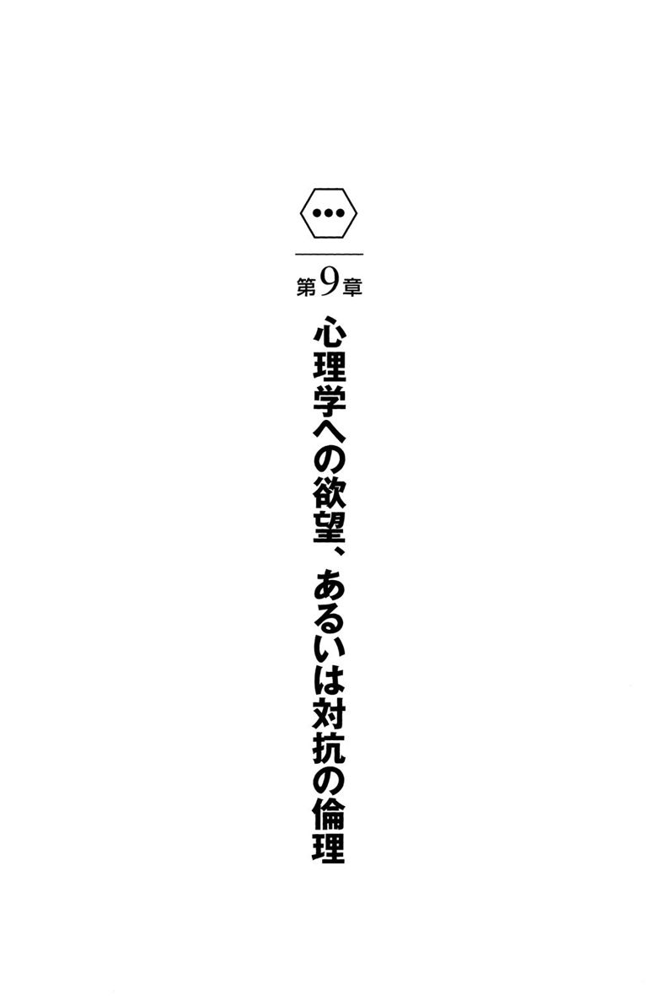
愛知大学の樫村愛子氏は「ラカン派社会学」というユニークな立場を標榜している社会学者である。
彼女による「社会の心理学化」という現象の指摘は、今起きつつあることへの適切な指摘として、私もいろいろな場所で引用してきた。樫村氏によれば、「社会の心理学化」とは「教育・福祉・家庭など社会のさまざまな領域で、心理療法の技術が多く使用されるようになり、文化の中で心理療法的言説の比重が大きくなってくるような事態」とのことである。わかりやすい例で言うなら、少なからぬ学校の教師や牧師、あるいは家庭の主婦などが、切実な必要に迫られて、カウンセラー養成講座などを受講するような状況もここに含まれてくるだろう。いまやこうした心理療法的な考え方が一種のイデオロギーとして、あるいは権力として機能し始めている。そのせいかあらぬか、若者にとって「臨床心理士」「心理カウンセラー」は憧れの職業だ。いまや心理学科は、文系でも最も競争率の高い狭き門であるという。それが単純な「癒し」志向であるなら平和な話なのだが、同時に一種の「権力」志向も含まれるとなると、にわかに話はなまぐさくなる。心理療法を制する者が社会を制するなら、志望する若者が急増するのも当然だ。決して荒唐無稽な話ではない。何よりも河合隼雄氏の文化庁長官就任が、こうした現在の風潮を如実に反映しているからだ。この事実は、人文科学の最上位に「心理学」が君臨する時代を徴候的に指し示している、などという発想は、陰謀史観めいてあまり好きではないのだが。
樫村氏は、こうした心理療法的な視点そのものが、精神分析の誤解に基づいて成立しているものであることを指摘し、社会の心理学化は、やがて乗り越えられるべき過渡的な状況としてとらえようとする。私も基本的にはその意見に同意するものだが、ここではもう少し、なぜ社会の心理学化がこれほど隆盛をきわめているのか、具体例に基づいて検討しておきたい。
私はこうした傾向が最も如実にあらわれている現象として、少年事件へのコメンテーターの変遷を考えている。動機が不可解な少年事件が起こると、容疑者の「こころの闇」を解明し解説する役割をおおせつかるのが、しばしば精神科医や心理学者であるということ。精神医学は心理学ではない、というまっとうな異議は、およそマスコミには通用しない。私自身、メディア上では訂正するヒマもなく、繰り返し「心理学者」という肩書きで紹介されてきた。あえて抗議しない怠惰は責められるべきかもしれないが、徒労感のほうがはるかに大きいのだ。彼らは抗議を聞き入れるだろう。しかし彼らはそんな微妙な差異など、決して学習しようとはしないだろう。
わが国の報道で、事件の解説役として精神科医が頻繁に登場し始めたのはいつ頃からだろうか。私の記憶では、私の恩師の一人でもある小田晋氏がテレビ朝日の深夜番組『トゥナイト』に出演するようになった、一九八〇年代初頭からであったように思われる。少なくとも、ＴＶメディア上では、このあたりに起源があると考えられるが、活字メディアではどうであったか。今回はいくつかの資料にあたりつつ、検証を試みたい。なお、報道資料としては、事件直後の新聞三紙（朝日・読売・毎日）と、代表的な週刊誌記事を参照した。
小松川女子高生殺人事件
一九五八年（昭和三三年）八月、小松川高校定時制に通学する女子高生の絞殺死体が発見され、同じ高校に通う在日朝鮮人のＫ（当時一八歳）が逮捕された。逮捕後、Ｋはもう一件の強姦殺人を自白した。Ｋは亀戸の朝鮮人集落に生まれ、障害をもつ母親とアルコール依存症の父親のもと、極貧の生活環境で育った。ＩＱ一三五という高い知能に恵まれながら教科書も買えず、中学では学業成績トップで生徒会長を務めながら、しばしば窃盗にも手を染めていた。中学卒業後も、就職差別のために希望する職に就けず、やむなく零細な町工場を転々としていた。
本事件は、Ｋが殺人の後でみずから新聞社に電話をかけて死体遺棄の現場を伝えたり、被害者の遺品を送りつけたりするなどの挑発的言動をしたこと、ラジオを利用しての公開捜査がされたことなどもあって、戦後犯罪史に残るほどの大事件となった。死刑が確定してからのＫは、カトリックに帰依し、聖書、宗教書を熟読したという。贖罪のための努力を続けるＫに対して、大岡昇平ら文化人や韓国人からの数万人の減刑助命嘆願の署名が集まったが、四年後に死刑は執行された。
この事件についてのコメントの例としては、『週刊読売』一九五八年九月一八日号の記事がある。いわゆる「識者」によるコメントではないものの、記者による心理的解釈が随所に盛り込まれている。「国籍から来る劣等意識」「社会への反抗心」「ニヒルな孤独さ」また、犯人が童貞であったことに注目し、「性的な抑圧や不満」があったのではないか、と推測している点は興味深い。Ｋが読売新聞社の短編小説賞に応募していた作品「悪い奴」の内容を紹介しつつ、「生かじりの文学は異性を知らぬ彼にどんな悪魔の火を与えたか」と関連づけている。なお、Ｋは、これら二つの殺人について、それが夢の中で起こったことのように感じたと話しているが、この言葉は、後に引く宮崎勤の発言と、あまりにもよく似ている。
浅沼委員長暗殺
一九六〇年一〇月一二日、日比谷公会堂で開催されていた三党首大演説会で壇上に立った社会党の浅沼稲次郎委員長は、突然壇上に駆け上がってきた（元）大日本愛国党の右翼少年に刺殺された。テロの実行犯Ｙは、まだ一七歳だった。
同年一〇月一四日の『毎日新聞』では「若者はなぜ過激行動に走る」とのタイトルのもと、二人の識者のコメントを掲載している。都立大学助教授のＩ氏(社会学)は、政治への不満や家庭の雰囲気、戦後の民主主義教育などを原因として指摘しており、社会心理学者のＭ氏は、マスコミが商業主義から簡単にヒーローを仕立て上げる傾向を指摘し、それが少年の英雄主義を刺激するのだと分析している。
この事件に関連しておもだった雑誌に掲載された心理学あるいは社会学関係者のコメントは多くなく、もっぱら政治的背景の分析や危惧を述べた記事が中心となる。ただし、同年一〇月三・一〇日合併号の『週刊サンケイ』は、「十七歳の危険な青春」という特集記事を組んでおり、この年齢の身体的・心理的不安定さに関連づけた分析がなされている。特集中、識者のコメントとしては東京教育大学教授のＳ氏が「肉体は二十二歳までに発達しきってしまうが、神経系統はそれからも伸びていく。意識や行動のブレーキはその後発達するのでこのころから頭を使わないと猛獣になる」と述べている。また青年心理学者Ｋ氏は「十七歳は感情的には発達しているが、社会的な判断は未熟であり、背伸びをしている段階」との解説をしている。この特集はこれに続いて、さまざまな「十七歳」たちの衝動的な犯罪を取り上げている。およそ四〇年前の日本の週刊誌が、今で言えばまさに「キレる一七歳」「動機なき凶悪犯罪」について取り上げているさまは、奇妙な既視感を誘う以上に、「変われば変わるほど変わらない」という感慨をもたらすだろう。同世代の若者のコメントでしめくくるあたりの構成も、ほとんど現在と変わらない。
開成高校生殺人事件
一九七七年一〇月、開成高校に通学する息子の家庭内暴力に悩んだ父親が、ついに息子を絞殺するといういたましい事件が起こった。傍目にはごく普通の、あるいはむしろ恵まれた一家に起こった異常な事件として、大きく報道された。翌年に母親が自殺することで、この事件はいっそう深く人々に記憶されることになった。
これはおそらく、家庭内暴力による殺人事件としては最初のものである。新聞報道は事実関係を伝えるのみだが、週刊誌には、いくつかの専門家によるコメントが掲載されている。ただ、週刊誌報道は、いずれも母親の自殺直後のものである。
まず『週刊文春』一九七八年七月一三日号の記事。直接の関係者である弁護士や精神科医、担任教師の発言は、ここでは除外しよう。ただ、当時の精神科医は、現在よりもずっと守秘義務などを気にせず、のびのびと語りすぎている点はいささか気になる。唯一当事者ではない立場で、作家のＨ氏がコメントしている。「今回の事件はむしろスッキリした例ですよ......表面化しない家庭内暴力はいっぱいあり、その方が異常です。こんどの事件は結末をつけているからわかりやすい。母親がアクセルをふみ、父親がブレーキをかける、子供という欠陥車が走っているんです......全国にはそのような爆弾をかかえた家庭はずいぶん多いですよ......」。これなど、精神医学の専門用語など使わずに、事件の本質をきちんと指摘したコメントとみるべきかもしれない。
『週刊朝日』一九七八年七月二一日号の記事。こちらには私たちにもおなじみの、精神科医Ｆ氏がコメントしている。「父親と母親の間に一体感が足りなかったきらいはないだろうか。夫婦の間に一体感があり、子供と夫婦の間には家族精神医学でいう世代間境界があって、夫婦は子供とある程度の距離をおいて育てていく、というのが普通の家庭のケース。ところが、夫婦の間に一体感がないと、両親と子供の間の世代間境界も崩れる。この世代間境界の喪失がさまざまな混乱を生み出していく」。結論はおおむね同意できるが、母子密着的な状況を指摘しようとしつつも、ちょっともどかしさが残る。ただコメントに先立って「報道を見た限りのことしか知らない」と断っているのは評価できる。
『週刊ポスト』一九七八年七月二一日号には、かなり多数のコメントが掲載されている。作家にして精神科医のＮ氏。「思春期の少年たちが父親に刃物をつきつけようという心理は不自然ではない。父子の対立は誰にでもあるし、子供が人生勉強をふんで思いやりができて初めてそれが越えられる（後略）」。家庭内暴力をいわゆる「父殺し」と同様にみることは、文芸的には正しいが、精神医学的ではない。これはやはり「作家」としてのコメントとみるべきか。早大文学部教授Ｍ氏は、父権の確立の困難について述べ、評論家のＫ氏は「父親が二人目の母親になっている」として、ともに父性の重要性を強調している。いささか異色の漫画家Ｇ氏のコメントは、子どもが独房に入れられたまま、父親は給料配達人になっている、といったユニークな表現で面白いのだが、父子の対立や父性の重要性を称揚する点では同じこと。おそらくこれは、編集部の見解をなぞるコメントを収集したのであろう。作家、文学部教授、評論家、漫画家といったラインナップは、この当時まだ「人間の専門家」が文学の領域に求められていたという点で興味深い。
この事件、個人的には、亡くなった高校生が私とほぼ同年であることや、もう二五年も前の彼の言葉が、現在の家庭内暴力事例の言葉とほとんど同じ家族への呪詛である点などが、きわめて印象的であったことを付記しておく。
予備校生金属バット殺人事件
一九八〇年（昭和五五年）一一月、川崎市高津区の自宅で、受験浪人二年目の予備校生Ｉ（当時二〇歳）が、就寝中の両親を金属バットで殴打して殺害した事件である。恵まれたエリート一家の中で鬱屈した思春期が爆発したかのような印象があり、非行などの前歴がないごく普通の青年がおかした凄惨な事件として、大きく報道された。
同年一二月一日の『朝日新聞』には、識者四人がコメントを寄せている。作家Ｋ氏は、親や世間が固定した価値観を押しつけて本人を追い込んだ可能性を述べる。評論家のＨ氏は、父親らしくあることの難しさ、孤立した家族の問題と、地域社会との接触の重要性を強調する。予備校理事長Ｔ氏は、浪人生のよるべなさと不安について語る。今回の事件でコメントしている唯一の精神科医Ｍ氏は、家庭内暴力にしては度を越しているとしつつも、祖父母という緩衝地帯のある大家族に比べ、核家族が青少年の自立を妨げている傾向を指摘している。
同日の『毎日新聞』では、まず評論家のＫ氏が、家族関係がクールになりすぎ、まるで会社のようになっているとする。高等学校長Ｍ氏は、こうしたことがどこの家庭でも起こりうるとして、子どもに理想を押しつけるのではなく、親の愛情を実感させるべし、と述べる。前出の精神科医Ｍ氏は、こちらでも同趣旨のコメントを述べている。
同日の『読売新聞』にも、識者三人がコメントしている。社会心理学者Ｔ氏は、エリート家庭で育つ子のフラストレーションと、それを殺人にぶつける衝動性、未熟さなどを指摘している。作家のＳ氏は、エリートの父や兄と比較される辛さ、人のつながりの希薄さを語り、犯罪社会学者Ｉ氏は、親子関係の密着しすぎ、期待過剰に注目する。
『週刊新潮』同年一二月一一日号は、あえて識者のコメントを避けると断ったうえで、独特の子育て論を提唱するという噺家のＳ氏のコメントを大々的に取り上げている。もっともその内容たるや、戦後民主教育批判に始まり、強い父性の復権をうたい、父子で女遊びをすべし、という破天荒にして紋切り型の結論で終わる。これが果たして識者のコメントよりもましであったかは、よくわからない。
『週刊サンケイ』同年一二月一八日号の海城高校Ｉ教諭のコメントは、最近の親子関係が建前化しているとの指摘に始まり、普段から言いたいことははっきり伝えておけば、急に本音をぶつけられて混乱することはないというもの。
『週刊朝日』同年一二月一九日号は、識者ではなく友人のコメントを多く掲載し、浪人生の不安と焦燥感に焦点を当てている。
『週刊ポスト』同年一二月一九日号では、教育そのもののあり方に問題ありとして、朝日新聞編集委員Ｈ氏のコメントを掲載している。Ｈ氏はこの事件が日本の非人間的な教育体系（「共通一次」をはじめとするモノサシ教育）に起因するもので、決して特殊なものではなく、今後も繰り返されるであろうとしている。また、同世代の子をもつ父親のコメントには、ポルノや漫画、ＴＶドラマなどの刺激によって「子供たちは、もう、現実と空想がゴッチャになって」しまっていると述べており、可愛い子には旅をさせよとしめくくる。この記事が二〇年以上前のものであることを考えるなら、いまだ繰り返される「現実と虚構の区別がつかない」云々、といった紋切り型コメントの、これは最初期のものと考えられる。
やや余談めくが、この「現実と虚構の混同」論が、最も説得力をもって展開されたのは、香山リカ氏も著書『テレビゲームと癒し』（岩波書店、一九九六）で引用している藤原新也氏のコメント──一九八八年七月に東京目黒区の中学二年生が両親と祖母を計画的に殺害した事件に関するもの──ではなかっただろうか。
藤原氏が『朝日新聞』に寄せた論説記事「虚構から現実を侵す──奇妙に『ドラクエⅢ』と一致」は、この事件と大ヒットしたゲームの設定との間に類似性を見いだし、「シミュレーション世代においては虚構の側からの現実の浸食がはじまっている」とする。すでに批判され尽くした感のある視点だが、今検証されるべきは、この意見が出されたとき、おそらく誰もが一度は「説得」されてしまったという事実のほうではないか。少なくとも、ゲームの実体験を欠いた読者なら、なるほどと大きくうなずいたはずだ。私がそうだったからということもあるが、直後にはこの論説を支持する意見が大多数を占めていたことが、その傍証となる。
おたく前夜ともいうべき時期のこの発言は、新しいメディアがもたらす世代間ギャップが神話化される端緒として、繰り返し検討する必要があるだろう。
さて、本来ならこれに続けて「Ｍ君」、すなわち一九八九年に起きた連続幼女誘拐事件の犯人、宮崎勤についてのコメントを紹介するべきところだが、今回はそれを断念せざるをえない。あまりにその量が膨大すぎるのだ。直後のものだけに限っても、ほとんどコメントのハイパーインフレーション状態で、紙幅から考えてもすべてを引用する余裕はない。もちろん、今コメンテーターとしておなじみの精神科医諸氏も、繰り返し登場する。そんな中で言及しておく価値があるとすれば、やはり事件直後の大塚英志氏による指摘、すなわち「コメントに関するコメント」であろう。大塚氏は、この事件に関する識者コメントが一様に「現実と虚構の混同」論のパターンに陥っていること、識者も読者も、事実ではなく事件をめぐる物語を楽しんで消費していることなどを喝破している。
事件から一四年あまりが経過した今、この事件報道のもつ意味は、いっそう際だってくるだろう。そう、おそらく「宮崎勤」を契機として、何かが決定的に変質したのではないか。これまでの一連の事件とコメントを読めばわかるとおり、一九八九年以前は「コメント」は常に「事件」に、あるいは「事実」に追随していた。しかし一九八九年以降、この関係が徐々に逆転する。コメントされ、解釈されること。その欲望をめぐって「事件」が起こり、それが物語として消費される。「宮崎勤」から「酒鬼薔薇」を結ぶ線上において、変化したものがあったとすれば、「犯人推理」を含むコメント合戦が、より大規模に、かつ組織的になされ、結果的に──「犯人」にとっては目論見どおりに──一人の巨大なアンチ・ヒーローの誕生を促してしまったという点ではないか。もちろん、こうした見取りもまた「物語化」である可能性も否定はできないのだが。
しかし、単純な事実は人気がない。たとえば一九九七年一二月の「ポケモン事件」は、光の点滅刺激を主たる要因とする視覚誘発発作であったこと。二〇〇〇年五月に起こった愛知県豊川市の主婦殺害事件で、主婦を刺殺した少年の診断は「高機能広汎性発達障害あるいはアスペルガー症候群」と確定していること。まさに精神医学者によって指摘されたこれらの事実を、いったいどれほどの人が記憶しているだろうか。われわれはひょっとすると、「ポケモン」の「サブリミナル効果」や、「人を殺してみたかった」という思春期の「こころの闇」のほうを信じたがっていたのではなかったか。このわれわれ自身の欲望のほうにこそ、「現実と虚構の混同」の契機がひそんでいる。
「現実と虚構の混同」は、まさにＴＶの画面上で進行中である。どういうことか。たとえば、ヴァラエティという虚構が限りなくドキュメンタリーの手法を取り込む（『電波少年』『ガチンコ！』等）一方で、事件報道はますますショーに近づいていく。政治家は政策ならぬ「キャラクター」によって評価され、「キャラクター」そのものは開発戦略といった「現実」とセットで流通し始めている。そう、いまや人々は、「純粋な虚構」にも、「純粋な事実」にも飽き足りなく感じ始めているのだ。それが事実ではないにもかかわらず、「現実と虚構の混同」という藤原コメントがあれほどインパクトをもちえたこと、今なお反復されること、それはなぜか。まさに、われわれ自身がその混同を強く求めたからではなかったか。同時多発テロ事件におけるＷＴＣ崩壊の映像（「ＣＧで作ったようにリアルな」by 中森明夫）は、われわれのそうした欲望を直接に象徴するだろう。
このように考えてくると、心理学者や精神科医に何が求められているのか、おぼろげながら見えてくる。われわれに求められる役割、それは「リアルな物語の語り手」である。「こころ」という、実体がなく、さりとて完全なフィクションとも割り切れない何ものかを、眼に見えるように描き出すこと。人々はそれを求めている。そう、あの「トラウマ」を求めたように。そうした欲望がとうてい否認しがたい規模で存在する今、「物語よりは事実が大事」と正しく呟いたところで、誰一人耳を傾けるものはいないだろう。それでは、「こころの専門家」は、いかに身を処すべきなのか？ 一切のコメントを忌避して口をつぐむのか。こんな認識などなかったかのように、素朴に誠実にコメントを出し続けるのか。あるいは、あえて消費を加速すべく道化を演じ続けるという、八〇年代的な身振りを反復するのか（ただし、「診ずにコメントすべきではない」という批判は「診ていればコメントしてよいか？」という反問には答えられない。「ポケモン事件」の例のように、個別のケースを診ずにコメントすることにも確実に意味はある。立場と内容に責任がもてれば、の話ではあるが）。
ひとつはっきりしていること。それは、コメントを出す際に「このコメントをあまり信ずるな」というメタメッセージを出していくことだ。たとえば、香山リカ氏の場合、ペンネームで露出することが、そうした身振りを可能にするだろう。それでは、すでに本名で露出してしまった私はどうすればいいか。
さしあたりの戦略は、コメントする際、「精神分析」に依拠し続けることである。その立場から発言し続ける限り、すべての人が私の発言を真に受けることはありえない。一〇〇年前から今に至るまで続く「精神分析」のいかがわしさが、それを可能にしてくれるのだ。真実の番人のような顔をしながら、常に一定のいかがわしさを維持し続けること。これを精神科医の倫理と考えることは、果たして精神分析への冒涜なのだろうか？
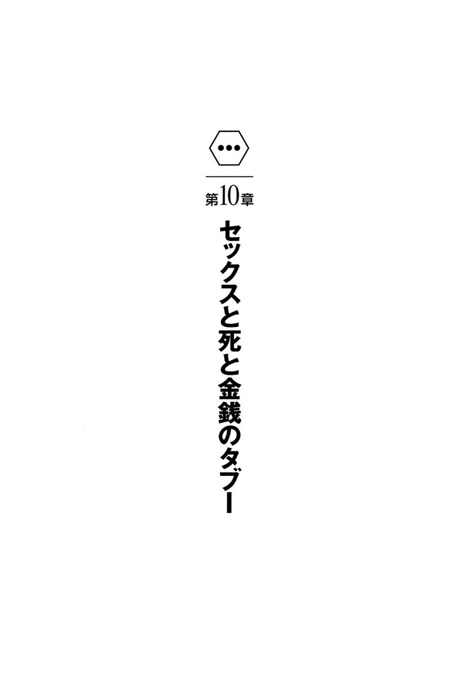
臨床場面における精神分析そのものは衰弱していくにしても、精神分析的な体験だけは厳然として存在する。それだけは、どうにも否定しようのない事実だ。たとえばそう、「精神分析」の契機は、あらゆる親密な対人関係の中にあらかじめ含まれている。とりわけ「家族」の機能において。
ところで、私自身は精神分析の有用性を確信しつつも、臨床家として精神分析を行うことはない。もちろん教育分析を受けていないから、という理由もある（いや、「ラカン萌え」としては「パス」と言うべきか）。しかしそれとは別に、実は私は、精神分析の治療における有効性には、はなはだ懐疑的でもある。それはたとえば「他の精神療法に比較して有効性に有意差はない」といった、アイゼンク風の正当な批判ゆえではない。まして始祖フロイトが、必ずしもすぐれた治療者ではなかったことが理由でもない。ここは表現を変えよう。私は、精神分析のリアリティは、いまや単なる治療とは別の次元において確保されているのではないかと考えているのだ。
少なくとも「トラウマ」や「転移」といった言葉にあらかじめ慣れ親しんでいる患者たちと向き合うとき、定型的な精神分析の身振りは、みうらじゅん風に言うなら「精神分析プレイ」にしかならないだろう。もちろんそれで「癒される」人は少なからず存在するだろうが、それは精神分析とは別の話である。かといって私のこうしたこだわりが「無効と知りつつ、あるいは無効であるがゆえに、どこまでも固執してしまう」といった、いかにもジジェク氏あたりが言いそうなシニシズムであると決めつけられることにも、実は大いに抵抗がある。
現代においても、精神分析の有効性は変わらない。ただし治療に限って言えば、それはさしあたり「解釈」という地点までではないか。しかもそれは、患者のみに向けられる技法とは限らない。精神療法家が患者との出会いに際して、つまり「治療関係」を触媒として、自己分析の視座を確保するフレームとして重要なのだ。もちろん純粋な自己分析の不可能性は、フロイトがつとに指摘している。そう、およそいかなる自己分析も、決して一般論の枠から出ることはできないだろう。
しかし患者という存在の他者性、単独性を徹底して保証するのは、やはり精神分析という技法の存在をおいてほかにないのだ。このフレームを利用することには、はっきりとした意義がある。私たちはそれを知ることではじめて、身体医学とは異なった位相で臨床的リアリティに出会うことが可能になるのではないか。精神分析が「精神分析学」と呼ばれない理由について考えてみよう。それは、まず何よりも、唯物論的な出会いの場を確保するための「技法」なのだ。そう、十分に内面化された精神分析的視点をもつことは、患者というありふれた存在とのありふれた関係性を更新するうえで役に立つ。治療的洞察を不意に促すような、出来事としてのリアルな言葉がもたらされるのは、そうした関係においてではなかったか。たしかに現代は「精神分析以後の世界」だ。その意味でのやりにくさは、多くの誠実な精神分析家が共有する問題だろう（誠実ならざる私ですら、問題意識だけはもっている）。しかし、それにもかかわらず、私たちは抜きがたく精神分析的な存在であるほかはないのだ。
現代においても、私たちのこころのありようは、およそ一〇〇年前のフロイトの時代とほとんど変わっていないのではないだろうか。最近、上山和樹氏による『「ひきこもり」だった僕から』（講談社、二〇〇一）という本を読む機会があり、私はあらためてそう痛感した。
本のタイトルからわかるように、現在三四歳の上山氏は、ひきこもりの経験者である。ひきこもり経験者による体験記は、このところ少しずつ増え始めているが、その嚆矢となった勝山実氏による『ひきこもりカレンダー』（文春ネスコ、二〇〇一）は、エンタテインメントとしてすぐれたものだった。しかし勝山本にこめられた過剰な毒に、楽しむよりは反発を覚えた読者も少なくなかった。その点、上山氏による本書は、自己分析の的確さと現場での応用可能性において出色のものである。つまり当事者の家族が読むことで、本人への理解と共感が促されるという、すぐれた「効能」を秘めている。
それにしても、この本が提起する問題意識は実に多彩である。「ひきこもりは『問い』である」「クラッチを失ったエンジン」「まず『人間関係』」など、臨床家としてもうなずかされる指摘は数多い。ひきこもり批判陣営（まだあるとして）の言葉の貧困さと比べて考えると、この点はいっそうはっきりする。このような真摯な創造性や豊かな表現は、もはや「ひきこもり」の側にしか存在しないのではないか。いや、さらに言えばこうした創造性は、私が第６章で批判した岐阜大の高岡助教授のような、イデオロギーとしてのひきこもり擁護派にも決定的に欠けているものではないか。上山氏はまさに当事者であるがゆえに、ひきこもりを安直に肯定することもできない。単純な否定にも肯定にも傾かずに発想された「解決策」のひとつが、たとえば「地域通貨」の応用だ。私も同趣旨の論文をほぼ同時期に雑誌『広告』（二〇〇一＋二〇〇二年六号）誌上で発表していただけに、この偶然は嬉しかった。
しかし今回述べておきたいのは、これとは別のことだ。私が本書で最も気になった点のひとつが「性」である。上山氏は正当にも「ひきこもりと性」の問題をことのほか重視する。幼年期の記憶の断片から始まる本書には、いささか露悪的な筆致で彼のヰタ・セクスアリスがつづられている。最初はこの部分に辟易する読者もいるかもしれないが、読み進むにつれて、それが上山氏自身の確固たる信念に基づいてなされたものであることに気づかされるだろう。そう、上山氏はひきこもりと性の問題について、当事者の立場から深く考えようとしているのだ。この問題については、私自身もエッセイなどに書いたことがあり、宮台真司氏との対談などでもひきこもりのひとつの本質として問題提起してきた経緯がある。しかし、当事者からの指摘のほうが、はるかに強い説得力を帯びていることは否定しがたい。
ひきこもりを考えるに際して、「性」の問題が本質的であること。そのことがまず、精神分析的な指摘であることは疑いえないが、それはひとまず脇におこう。上山氏の指摘で私が考えさせられたのは、「性・死・お金」に関するくだりである。彼によれば、この三つのテーマこそが、家族内では最も避けられがちな話題であり、それゆえにひきこもりと向き合うに際して最も重要なのである、とされる。それでは、なぜこれらの話題は避けられるのか。なぜそれは「なまなましい」「異物」という位置にとどまり続けるのか。上山氏はそれらが「お互いがまったく別の個人である」ということをむき出しにするテーマであるからと述べているが、まさに卓見である。この指摘で答えはすでに出ているようなものであるが、私はあえて、ここを起点にもう少し考えてみたい。なぜならここには、「家族」というものを精神分析的にとらえ直すための、すぐれて本質的な契機があるからだ。
実はこの問題は、リアリティの問題とも深く関与している。なぜそれらのテーマが避けられねばならないほどに「なまなましい」と感じられるのか。それは何よりも、家族にとってこのテーマがリアルであるためだ。というよりも、あまりにリアルすぎるのだ。森鴎外の「ヰタ・セクスアリス」にも、主人公が六歳のときに、近所の家で春画をみせられ、意味はよくわからなかったが、家族に話すことは憚られた、というエピソードが出てくる。家族という文脈の中におかれたとき、これらの話題が異様にリアルに感じられるということ。同じく親密な関係とは言っても、たとえば仲間内ではこれらの話題は決してタブーにはならない。また、これらのタブー意識は、主として親子間におけるものであって、夫婦間においてはむしろ、頻繁に話題にのぼるテーマですらあるだろう。
リアリティとタブー意識とは、きわめて近接しているように思われるが、精神分析的な文脈でタブーと言えば、やはりフロイトの「トーテムとタブー」における「父殺し」のテーマを参照しておく必要がある。
太初に行いありき。フロイトはこの言葉で「トーテムとタブー」をしめくくる。「行い」とは何か。原父殺害である。そう、有史以前の大生贄行為において、強欲な父に追放されていた息子たちは、全員一致で父を殺害した。それまで羨望と恐怖の対象であった父を殺し、その肉を食べたのだ。そこで彼らは父との一体化を遂げ、父の強さの一部を所有することになる。しかし、この行為に対する共犯者としての罪悪感が、息子たちに二つのタブーを負わせることになった。ひとつは父の身代わりとなったトーテム動物を殺すことに関するタブー。もうひとつはインセスト・タブー（近親相姦のタブー）である。後者は、父を殺すことによって自由になった妻たちと交わることの断念を意味している。ここには父親を殺し母親と寝るという、エディプス・コンプレックス的な願望の抑圧がある。そして、およそエディプス三角こそが、人間の社会的・文化的営為の根底を支えていることは、ことさらに指摘するまでもない。タブーと文化は必ずしもイコールではないが、どれほど文化的に解放されようとも、われわれがこうした原始的なタブー意識を捨てずに生き延びていること、これもまた事実には違いない。さきほどから問題にしている、現代家族におけるタブー意識のありようが、そのことを如実に示している。そう、「死父」の支配は、今なお続いているのだ。
フロイトによれば、タブーの慣習と現代人における強迫神経症の症候とは、次のような点で一致をみるという。すなわち禁止の無動機性、内的強制による禁止の確立、移動性、および禁止されたものを通じての伝染の危険、儀礼的行為、すなわち禁止に基づく戒律の発生。
以上は強迫神経症者について述べられたものではあるが、現代家族における「性のタブー」においても応用可能である。少なくとも、についての異論は少ないだろう。さきほど引用した森鴎外の「ヰタ・セクスアリス」においても、なぜ性的な体験を親に報告できなかったか、子どもだった主人公はうまく説明できない。誰に禁じられたわけでもなく、本人の落ち度ですらない出来事である以上、「報告しないこと」の動機が直接には存在しないのだ。にもかかわらず、「内的強制」だけは存在するということ。たとえば無意識とは、このような場所にこそ想定されるべきものだ。
についてはどうか。おそらく、この点こそが、今回のテーマと最も関連性が深い部分であろう。現代人が実際に父親を殺し、母親と交わったとしても、それはこうした欲望とはさほど関係がない。おそらくそれらは、原初的な欲動の解放などではありえず、むしろに示されたような、「太初の行為」を隠蔽するような行動化、ないし儀礼的パフォーマンスとして考えるべきものだ。つまり「プレイ」である。そして「プレイ」は「プレイ」である以上、タブーをいっそう強化する以外のものではない。なぜか。タブーは常に「移動」するからだ。
の「移動性」について、フロイトに基づいて解説を加えておこう。フロイトはフレイザー『金枝篇』から、マオリ族におけるタブーの例を引用し、それをみずから治療した女性患者の例と関連づける。マオリ族の酋長は、決して自分の息で火をおこさない。なぜなら、酋長の息は神聖かつ危険であるからだ。もし息で火をおこせば、息から火へ、火から鍋へ、鍋から食物へ、食物から食べた人へと酋長の力が伝わり、食べたものは死ななければならないからである。一方、あるフロイトの女性患者は、夫が買ってきた日用品をどこかへ持っていくよう頼む。なぜならその品物を買った店はある小路にあり、その小路の名前は、かつて親しかった友人の現在の姓に似ているからだ。いまや疎遠になったかつての友人の名はタブーであり、そのタブーは、友人の名─名に似た小路─小路で買った品物へと伝染していくのだ。ここには、ラカン的な文脈で言えば、まさに換喩的な連鎖関係がある。
私自身の経験からも、この女性患者のようなケースは、およそ珍しいものではない。とりわけ強迫神経症患者では、こうした訴えはしばしばなされる。たとえばある患者は、他人の唾が自分の体内に入り込むことを常に警戒していて、かなり非現実的な空想にふけることがあった。相手の唾が壁に飛び、その壁にふれた自分の手にうつり、自分の手から何かのはずみで自分の口に入るのではないか、といった連想である。またある患者は、家族と接して気分が悪くなると、それは家族が自分からなんらかの「力」を奪ったためであると考えて虚脱する。しかし彼は、その「力」を、たとえば満員電車の中で、他人からこっそりと補充することができるのだ。そう、ここにもマオリ族の酋長のような、魔術的な「力の移動」という発想がある。いずれも一〇代から二〇代という「思春期事例」のケースであり、彼らはもちろん、自分のそうしたタブーや儀礼の意味を、他人に向けて合理的には説明できない。
フロイトのいわゆる「移動」を、ラカン的な換喩の論理にまで拡張して考えるなら、冒頭で述べた「性、死、お金」のタブーについても解釈することも可能になるだろう。
たとえば家族間で「性」について話題にすることは、近親相姦のタブーにつながっている。近親相姦的な行為は言うまでもないが、性的なことがらの多くが抑圧をこうむるのだ。誰にでも思い当たることではあろうが、性教育であれ猥談であれ、肉親が性的なことがらを口にする姿は、しばしば、ほとんどトラウマ的な体験となる（だから話題にすべきではない、と言いたいわけではない）。家族で楽しくＴＶを視聴していて、突如画面に女性のヌードや濃厚なラヴシーンが出現したときの気まずさ。これらはすべて、性について家族間でふれることが、根底に秘められた近親相姦への欲望を喚起しかねないために、今なおタブー視されていることを意味している。
このことに関連して、私はこれまで一度たりとも解かれたことのない、ひとつの謎に対する答えを発見したので、この機会に発表しておく。思春期の男子なら誰でも経験するとおり、母親というものは息子の部屋を掃除したがるものである。そして多くの場合、息子の部屋には、ベッドの下などに大量のポルノ雑誌やヴィデオが隠蔽されているものだ。これを発見した母親の反応は、おおむね三通りに分かれる。タブーに敏感な母親は、そんなものなどまるで見なかったように、侵入の痕跡を消して部屋を去る。あるいはもっと積極的に、汚らわしいものとしてすべて捨ててしまう場合もある。しかし、ある種の母親は、そうではない。彼女たちは信じがたいことに、息子の大切なポルノ雑誌を整理し始めるのだ。かくして帰宅した息子は、本棚や机の上に、きちんと整理整頓されたわが秘密の花園を発見して愕然とする。このとき息子のショックは、発見されたという恥の感覚に由来するとは限らない。「見つかっただけならまだいい」彼は頭を抱える。「なぜ整理するのだ？」。そう、これこそが最大の謎なのだ。
私の考えでは、この母親の行為は、一種の精神分析的な行為である。巧妙に隠されたはずのポルノ雑誌を見つける母親の手腕は、決して「女の勘」などではない。むしろそれはポーの小説「盗まれた手紙」に登場する探偵デュパンに近いものだ。デュパンの位置はラカンの解釈によれば、精神分析家のポジションということになる。そう、この母親は息子に対して精神分析家の位置に立つことになるだろう。「捨てる」という行動化ならば、息子は恥ずかしく思いつつも、母親を一人の対等な個人として理解することができる。しかし整理整頓する母親は、いわば息子の欲望を解釈（＝整理）し、一挙に徹底操作に及ぼうと目論んでいるのだ。それは必ずしも、意識的な行為ではないかもしれない。しかし、この行為の結果として、息子にとっての母親は、自分の欲望を「知っていると想定される主体」の位置におかれることになる。その意味で息子は、母親に従属するという立場を強いられるのだ。これは言うまでもなく、精神分析以降の時代における、きわめて巧妙な対人操作の手段とみなされるべきだろう。
さて、「性」のタブーについては十分に述べてきた。それでは、「死」についてはどうだろうか。性ほど反射的ではないにしても、家庭内で「死」を口にすることは、暗黙の了解として禁じられている。私自身、幼児期に両親から「安易に『死ね』などと言ってはいけない」と繰り返し注意された記憶がある。あるいは寿命について、親の死後について、といった話題も一種のタブーであろう。これに関連して、幼児期に「親が死ぬのではないか」という強烈な恐怖に襲われた経験のある方は多いと思う。この体験は、おそらく家族における死のタブーの最も原始的な形ではないかと思われる。それでは、なぜ家族内で「死」を口にすることがこれほど憚られるのだろうか。
家族におけるあらゆる「死」とは、「父の死」の隠喩であるからだ。そして父の死は、母との近親相姦とならんで、大いなる「享楽」の源泉にほかならない。それは父の死が快いなどという意味では断じてない。極限の快楽と極限の恐怖とは、享楽の名のもとに一致する。それはもはや意味も分節も喪失した「リアルとの一体化」という強度的な体験にほかならないのだ。こうした体験は、常にすでに禁じられた経験でもあるがゆえに、タブーとしての効果を日常生活にも及ぼしている。それゆえ「死」を口にすることは、父殺しの換喩、フロイトにならって言えば、父の身代わりとなったトーテムの殺害に等しい行為なのである。その意味で家族とは、それを構成するメンバーの不死性を前提としてまとまりを維持している共同体であるのかもしれない。
最後のタブーに移ろう。「お金」のタブーである。これは、やや注釈を要するかもしれない。「お金」については、家庭でも平然と口にされる場合も多いからだ。とりわけ小遣いやアルバイト、お年玉など、金銭的な話題はむしろ日常茶飯事になされている。ただし、そこには明確な区分があることも忘れてはならない。そう、「子どものお金」についての話題なら、まったくタブーではないということ。親子間で禁じられているのは、財産と家計に関する話題だ。こちらについてなら、やはり多くの人に覚えがあるだろう。
この区分について、果たして合理的な説明が可能だろうか。他の話題と同様、「なまなましいから」という理由づけは、形容しているだけで説明にはなっていない。問題はなぜ「なまなましく」感じられるか、ということだ。あるいは上山氏のように、この話題が家族の他者性を際だたせるがゆえにタブーであると考えてみよう。すると今度は、何ゆえに「子どものお金」の話題は抵抗を感じないかがわからなくなる。子どもに余計な心配をさせたくないため？ しかし、家計のタブーは、むしろ富裕な家庭ほど顕著であるように思われる。資産に甘えさせたくないとは言っても、実際には経済的に甘やかされている子どもがきわめて多いことも事実だ。やはり「お金のタブー」についても、精神分析的な解釈がほどこされる必要がある。
まず考えられるのは、「お金＝糞便」という等式である。この、とりわけ精神分析家にはなじみぶかい発想は、たとえば肛門期性格者はケチであることの解釈などに生かされている。糞便をためる快楽を、長じて金銭を蓄積する快楽へと隠喩的に変換するというわけだ。ただ、糞便のタブーをそのままお金のタブーとするには、いささか抵抗もある。なぜなら、ほかのタブーとは異なり、糞便のタブーは幼児の言葉遊びの対象として許容される程度の、比較的軽いものであるからだ。また、それは日常生活の不潔感と結びつきやすいため、合理的に説明が可能なタブーでもある。「お金は汚い」という発想には、しばしば糞便のそれとは別種の意味がこめられているため、隠喩的にも同列に論じがたい印象がある。もちろん、「お金」をアブジェクシオンの一種として論じてみたい誘惑もないではないが、自分が信じられないことを無理に語ってみても仕方がない。
ここでもやはり、「家計」と「子どものお金」との間に引かれた区分に注目しよう。もし「お金＝糞便」であるなら、この区分は不要であるはずだ。しかし、この二つのうち、なぜ「家計」だけが問題となるのか。私の解釈では、「家計」は常に隠喩的には「父の所有物」であり、「父の力」なのである。それゆえ「家計」は「父のトーテム」であり、その意味で常に「父の遺産」の象徴的な等価物でもある。もちろん、現実の父親が健在であるか否かは、ここでは関係ない。家計や収入についてふれることは、このような連鎖を介して「父の死」について語り合うことであり、それは「父の死」を願う欲望を呼び込んでしまいかねない。だから家計について語ってはならない。「家計＝お金」のタブーは、おおよそこのように解釈することが可能となるだろう。
近年になって目立つ傾向のひとつに、近親相姦的な物語の流行がある。代表的な作品として、比古地朔弥の漫画『神様ゆるして』、青山真治の映画『ＥＵＲＥＫＡ』、高橋文樹の小説『途中下車』（幻冬舎、二〇〇一）などがある。もちろん、映画『ＥＵＲＥＫＡ』では、そうした関係が直接に描かれるわけではないが、二人きりでひきこもり、テレパシー的な内言語で交信するきょうだいの関係性は、ある意味で実際の性行為以上に享楽的であるかもしれない。
いずれの物語でも、崩壊した家庭環境、世間知らずの妹、それを庇護する兄という関係性が反復されている点がまず興味深い。すべて、あたかも判で押したようにそうなのだ。だからといって独創性がないわけではなく、比古地朔弥の漫画は竹熊健太郎氏に激賞され、『ＥＵＲＥＫＡ』がほとんどすべての批評家から絶賛されたことは周知のとおりだし、高橋文樹は二〇〇一年の幻冬舎ＮＥＴ学生文学大賞を受賞している。つまり、兄─妹の相姦関係をモチーフにすることが、若い表現者の創造性を刺激する傾向が高まっているようなのだ。
こうした傾向をもって、最後のタブーの崩壊を言祝ぐには当たらない。まして、今度こそ精神分析の終焉を期待しようという姿勢には、ルサンチマン以外のいかなる動機をも見いだしえない。メディア環境においては、あらゆるタブーが解禁されたかにみえて、それが別種の儀礼的隠蔽に置き換わっただけ、という現象はしばしばみられる。これらの表現活動が指し示すのは、むしろタブーの侵犯がもたらす享楽が、いまだに物語を駆動しうるという、むしろ喜ばしい徴候ではなかったか。こうした享楽の効果は、言うまでもなくタブーの健在ぶりを証し立てるものでしかない。
そう、いまや「タブー侵犯」の身振りは、いかなるところにも見受けられる。これを、あたかも無意識の底までが露呈したかのように錯覚し、現代人にはタブーも無意識もない、という文化的独語がまかり通る。しかし、錯覚は錯覚にすぎない。こうした発想は、タブー＝抑圧＝無意識という、一面的な発想に縛られているだけだ。変わったものは、タブーと抑圧の位相にすぎず、それらが消失したわけではもちろんない。私はこうした一連の現象を「ペニスによるファルスの隠蔽」とみなしている。どういうことか。
これまでみてきたように、われわれはたとえば「家族」という場所において、いまだタブーに縛られた存在である。一方、われわれを取り巻く社会的な、というよりは共同体的なタブー意識は、近代化とともに希薄になりつつあることも事実だ。このように対比してみると、いまや「家族」とは、タブーによって成立している最後の共同体と考えることも可能になるが、それはまた別の機会に論ずるとしよう。
問題は、われわれが日常的にはタブーに接しながら生活しつつも、社会的にはそれが存在しないかのように振る舞っている、という点にある。そう、われわれは、みずからのメディア的想像力を駆使して、あらゆる禁忌を解放してみせることができるのだ。そこで歯止めをかけるものがありうるとすれば、それはタブーではなく、「放送コード」のようなレーティング・スケールでしかない。そのようなスケールは、篩としては機能しえても、もはやいかなる抑圧とも無縁である。
ラカンの言うとおり、ファルスは常に、隠蔽された状態で効果を及ぼす。このファルスの位置（＝深層に非ず）こそが無意識であり、そこがタブーの淵源だ。われわれの強迫観念は、あらゆる「深層」からタブーを引きずり出し、暴き立てることを要請する。しかしそのような行為は、「タブーの（換喩的）移動」に無自覚であるがゆえに、常に失敗に終わるほかはない。そう、表象化され意味づけられたタブーは、もはや本来の機能を失った、いくぶんショッキングなイメージでしかないのだ。それはあたかも、象徴としてのファルスを、文字どおりペニスのイメージで置き換える試みに等しい。もちろん、ペニスそのもののイメージは「ファルス」などではない。よって、そこで演じられるのは、もはやプレイとしての「禁忌と侵犯」でしかありえない。
こうした、精神分析のイメージ的な濫用は、とりわけメディア上でさかんになされてきた。私のみるところ「精神分析」に向けられてきた大方の批判もまた、フロイト個人の誹謗中傷でなければ、こうした「イメージとしての精神分析」に対するものだ。それはきわめて精緻に描かれた、精神分析に似た何ものかではある。そう、精神分析以後の世界において、精神分析はいまや、みずからの鏡像に苦しめられることになったのだ。しかし、再びラカンに還ろう。われわれは常にすでに、鏡像によって騙された存在だった。ここで無効を宣告されているのは鏡像のほうであって、分析行為そのものではありえない。なぜなら精神分析への欲望は、常に象徴的な位置にとどまり続け、イメージ化を免れ続けるからだ。だからこそ、精神分析の定型的なイメージにとらわれるべきではない。精神分析家は、あたかもタブーそのもののように、自在に、不断に移動し続けなければならないのだ。そこから語られる言葉がリアルであり続ける限り、精神分析への要請は決して止むことがないだろう。
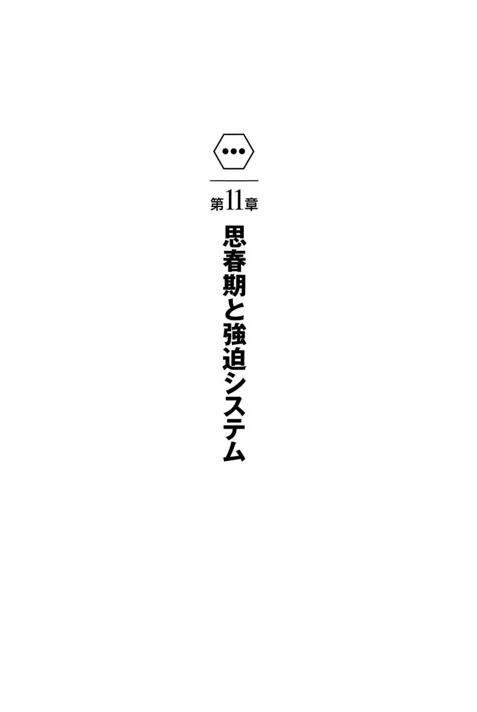
ひきこもりの臨床は、強迫症状にきわめて親和性が高い。ひきこもり状態から二次的に派生する精神症状にはさまざまなものがあるが、強迫症状は対人恐怖症状とならんで、最もよくみられるものの筆頭格である。いや、立場によっては対人恐怖症状も強迫症状とする論者もいるようなので、そうなるとひきこもりと強迫はほとんど不可分の関係にあるとすら言いうるだろう。
ここで問題となるのは、もともと強迫傾向をもつ人がひきこもりやすいのか、ひきこもり状態が強迫症状を賦活するのかという、ニワトリと卵の関係にも似た謎である。もっとも後者については「卵が先」という決着がとうについているが、ひきこもりと強迫については検証が困難である。私は臨床経験上、いずれの場合もありうると考えているが、ここで問題にしたいのは、ひきこもり状態から二次的に強迫症状が派生した場合のほうである。
強迫神経症、あるいは強迫性障害についてはすでに汗牛充棟もただならぬほどの著作や論文が存在する。しかし本書は、連載時のタイトルどおり（第１章参照）、バランスのとれた啓蒙や総説とは無関係な大変にレピッシュなものなので、それらの業績をひそかに尊重しつつも、引用や言及は最小限にとどめる。むろんきちんとした事例の紹介などもしない。ただひきこもりの臨床経験から得られた知見に基づき、強迫症状の成り立ちについて、きわめて思弁的な解釈を試みることが本書の目的である。
強迫症状の奇妙なところは、さまざまな精神障害に親和性があるという点である。よく知られるように、強迫症状は執着気質を中心に、うつ病圏にしばしばみられる。しかし同時に、統合失調症の重要な前駆症状でもある。もちろん粘着気質的な傾向の強いてんかん患者にも、みられることがある。トゥレット症候群など、器質的な問題を抱えているとおぼしい患者にも、ごく激しい強迫症状が伴うことがある。逆に、ここに挙げたいずれの精神障害も、強迫症状をまったく伴わないこともありうる。こうした臨床的事実から考えるに、強迫症状とは、およそ疾病特異性に乏しい精神症状のひとつなのだ。
これは言い換えるなら、強迫症状の病理は、さまざまなレヴェルで考察することが可能であることを意味している。そこには精神分析、発達理論、精神薬理など、さまざまな視点がありうるだろう。ここで私が試みるのは、最も浅いレヴェルでの考察である。つまり、環境に対する一過性の反応として生じた強迫症状に対する解釈である。ただし「浅い」という表現は、さしあたり謙遜を意味していない。最も軽度の強迫症状から、人格障害レヴェルの強迫まで、そこにはサルズマン氏の言葉を借りるなら「強迫スペクトラム」とでも言うべき連続性がある。つまり、病理が浅い─深いという問題は、構造上の問題ではなく程度の問題なのだ。そうであるなら、最も成り立ちが見えやすい、「浅い強迫症状」のメカニズムを知ることは、最も深いレヴェルの強迫についてもなんらかのヒントをもたらしはしないだろうか。
さて、さきほども述べたとおり、ひきこもり状態に長期間とどまり続けることで、二次的に強迫症状が発現することは珍しくない。状況に対する反応を原因そのものとみるか、あるいは潜在している強迫傾向が顕在化する要因としてみるか、いずれの見方も可能ではあるだろう。私自身は強迫傾向に限らず、ほとんどの精神病理的エレメントが万人に潜在していることを自明の前提としているので、むろん後者の立場をとっている。
ひきこもりの浅い強迫と言っても、それは決して症状の程度が軽いことを意味していない。むしろ成田善弘氏のいわゆる「巻き込み型」などのタイプのものは、本人の葛藤もさることながら、周囲もくたくたに疲弊させられるという意味で重篤な形式をとることがある。
まず私自身が臨床場面でみてきた、ひきこもりに伴いやすい強迫症状の特徴とも言うべきものをいくつか挙げておく。
・強迫「行為」が前景化し、強迫「観念」はさほど意識されることは少ない。
・洗浄強迫に始まり、トイレや入浴の困難など、身体的な清潔観にかかわる症状が比較的多くみられる。入浴の困難は外出困難に直結する。最も綺麗好きな人が最も不潔な生活を送っているという逆説がしばしばみられる（例：手だけが真っ白で全身垢だらけ、頭髪も伸び放題、下着も着替えないためぼろぼろになっている）。
・確認強迫は、ほとんどの場合が母親など家族を巻き込み、ときに暴力と結びつく。
・二次性。すなわち、ひきこもりに続発して起こり、あるいはひきこもることによって強迫傾向に拍車がかかる。入院治療などの環境の変化で軽減し、再びひきこもることで再度悪化することから、反応性の変化であることがうかがい知れる。
・「性」の回避と「死」への恐怖。「死」は究極の恐怖の対象であるがゆえに、頻繁に表象される傾向をもつ。それはときに汚物や死亡事故などとして隠喩的に表現されることもある。しかし「性」は、それが死のイメージと結びついていない限りにおいて、単に回避されるのみで恐怖されることは少ない。
・全般的な几帳面さ、完全主義といった強迫性格が伴うとは限らず、むしろ限局的な強迫症状のみにとどまる事例が多い。
サリヴァンの強迫患者に関する指摘は、ここでも大変参考になる。まず「強迫神経症者は睡眠が健康である」という有名な指摘があるが、たしかにこうした臨床的事実はあるように思う。ただ、この指摘は、ひきこもりとは無関係に、もともと強迫症状が強い事例ほどよく当てはまり、ここで述べようと考えている二次性のケースについては例外のほうが多いように思われる。これはひきこもり事例のライフスタイルにも関係しており、日中の活動性が低く、昼夜逆転傾向が伴いやすいことと無関係ではないと考えられる。また、睡眠ということに関連して言えば、夢の報告が少なく、とりわけ強迫の主題にかかわる夢の報告が奇妙なほどみられないことも指摘しておこう。これは、強迫と表象の問題を考えるうえで重要な事実であるように思う。
サリヴァンはまた「親しい間柄で強迫的になる強迫性格者、誰にでも強迫的な強迫症者」といった指摘をしている。私はひきこもり事例の強迫症状に対して、「家庭内強迫」と呼びたくなるほど家の内─外で出方が異なる事例を数多くみてきた。このことから考えると、彼らはサリヴァンの言う強迫性格者に該当するわけだが、ここではむしろ、その成り立ちの病理性に関する指摘として理解しておきたい。すなわち、病理性が軽い事例ほど、強迫症状が発現する条件が限られてくるのだ。
「ハプニング、偶発性を受け入れがたい」という指摘は、ひきこもり事例に関してはもちろんよく該当する。一歩進めて考えるなら、これとは逆に、ハプニングも偶発性も閉め出された環境下でこそ、強迫傾向が増悪しやすいとも言いうるのではないか。ひきこもりの生活とは、まさにハプニングからも事故や出来事からも見放された空間であり、あえて言えば「時間の死腔」がそこにある。
一般に強迫患者は、モード・チェンジが不得手であるように思われる。とりわけ洗顔・入浴などの回避傾向は、いったんそれを始めるときわめて大変な作業になるであろうという予測ゆえのことでもあるだろうが、洗顔や入浴の際の「水面をくぐる」ことからの連想で言えば、なんらかの界面を通過してモード・チェンジに至るような経験全般が回避される傾向にあるのではないか。実際に「着替え」や「新しい店に入ること」が強迫的に回避される場合も珍しくない。
中井久夫氏は、わが国の教育システムの欠陥として、それが子どもたちに「強迫の網」をかけている、と指摘している。どういうことだろうか。かの悪名高い「偏差値」を例にとろう。社会学者の宮台真司氏も「学校化社会」という表現で、社会の価値観が偏差値に一元化していく傾向を指摘しているが、ここには同一の問題が含まれている。すなわち偏差値とは、目的を与えずに手段のみを強要する数量化システムなのである。なるほど、子どもたちの未来の可能性は、偏差値の大小に従って伸縮するだろう。しかしそこでは「いかなる未来を選択すべきか」という最重要な問題は常に後回しにされる。多くの子どもに、みずからの未来を数量化された選択可能性という形式で学習させること。それは現実的な選択そのものが常に先送りされるという結果につながっているのではないか。さらに偏差値については、あきらかにダブル・スタンダードが存在する。現実的にはこのうえなく重視されているにもかかわらず、理念的には常に──当の教師、あるいは文部科学省によってすら──軽蔑の対象となってきたものが「偏差値」なのである。理念的には無意味、しかし現実には強要される。この構図は、まさしく強迫心性そのものである。無意味な行為を、無意味と知りつつも、せずにはいられないのが「強迫」であるからだ。
そして、強迫的な傾向に親和性が強い子どもが、みずからの強迫性に悩むことなく適応することを可能にするのが、この教育システムなのである。あえて「強迫的なものが勝者となる」とは書かない。それは必ずしも事実ではないからだ。ややこしい言い方をお許しいただけるなら、強迫者は必ずしも勝者たりえないが、強迫的であり続けることの延長線上に「勝利」をイメージしやすくするシステム、ということになるだろうか。このシステムの最大の問題は、勝者には不安、敗者にはルサンチマンしかもたらさないことであるように思う。つまり、システムの勝利者は、しばしばこれからも勝者であり続けなければならないという強迫的不安にかられるということ（上野千鶴子氏の示唆による）。そして敗者は、システムの価値観に忠実たらんとして強迫の罠に陥ってしまったものたちであり、脱落しても学校的価値観から自由になれずにルサンチマンと羨望のみが残されるということ。
ところで私が考える「健全な教育システム」とは、「勝ち負けにこだわらない多様性に開かれたシステム」でも「一人も敗者を出さないシステム」でもない。勝者には充実した達成感を、敗者には挫折感をもたらしつつ、なおかつ敗者復活戦が十分に可能であるような公正なシステムである。それがどのような形をとるかは別の機会に検討したい。
ともあれ不登校・ひきこもり問題のかなりの部分は、このタイプの強迫心性に親和性が高いように思われる。
その一方で、中井氏が「もっとも非強迫的な社会」の例として挙げているのが、一九七〇年代のエチオピアである（『分裂病と人類』東京大学出版会、一九八二）。氏がここで参考資料として取り上げた松枝張『エチオピア絵日記』（岩波新書、一九七六）の記載も含めて、その「非強迫」ぶりを概観してみよう。ちなみに、松枝氏も医師である。
・宮廷の女官たちは、テーブルと平行、あるいは直角に食器を並べることができない。
・戸籍もなく結婚届もない。それゆえ殺人も、現行犯以外は「犯人の実在性」が問題となるほど。
・離婚率は高く、離婚をめぐる争いもない（大した資産をもたないため）。ちなみに離婚の原因で最も多いのは、夫のアル中である。
・失業率は約九〇％で、首都アジスアベバには物乞いの群れがあふれる。そこでとられた対策とは、物乞いをトラックに詰め込んで森に捨てること。
・ゴルフ場はあるが、羊の群れがうろうろしている。羊がゴルフ場の芝を食べると、芝としてちょうどいい長さになるとか。
・名刺にいかなる称号を刷り込んでも構わない。
・猿に噛まれた怪我が、縫合しただけで完治。これはエチオピア人の抗体の多さのためと推定される。子どもでスウェーデン人の一〇倍から二〇倍もの免疫グロブリン数値は、裸足で生活していることに理由がある。足の裏から菌が入り込み、免疫力を高めているのだ。
・肉体的障害がないにもかかわらず、指を曲げられない人がいる。一般にエチオピア人は手先が不器用で、これは幼少期に指先を動かす訓練をしないことと関連があるらしい。著者がエチオピア人の前で「あやとり」をしてみせると、非常に驚かれたとか。
・長年の宿痾を治したら、ひどく感謝されたうえに、二度ほど食事に誘われた。しかしいずれも直前になってキャンセル。これが典型的なエチオピア人の謝意の表明であるとか。
・処女も娼婦もかわらぬ女性のういういしさ。
ここで注意しなければならないことは、以上のような特色ある社会であるエチオピアについても、まったく強迫とは無縁と言い切れない可能性である。本来強迫傾向とは、ラカンが、フロイトの「反復強迫」に関する重要な論文「快感原則の彼岸」を、あたかも言語そのものの起源として重視したように、人間性の本質にかかわる問題なのである。もしそうであるなら、エチオピア人が完全に強迫とは無縁であるとは言いがたい。そう言い切ってしまっては「漢字ノヨウナヤバンナ文字ヲ使ウ日本人ハ、精神分析デキマセーン」とのたもうたラカン（吉田戦車ヴァージョン）その人と同じあやまちをおかすことになってしまう。
むしろわれわれはここで、エチオピア人が「強迫的にならない態度」を強迫的に維持している可能性をも想定しておく必要があるだろう。それというのも、これほど一貫した「反─強迫」の傾向性というものは、もはや自然体にはほど遠いものに思われるからだ。反─強迫が文化的特質である限り、それは後天的に修得されたものであり、修得に際しては強迫が必ず関与するだろう。なぜなら、すべての語りうる人間は、不安を防衛するべく強迫という手段を決して捨てることができないからである。
ここで重要なことは、強迫の形式には文化的な差異が如実に反映されるということであろう。外国人がエチオピアに長期間生活すると、思考の輪郭がぼやけ、一切は茫漠としてくるという。中井久夫氏は「あらゆる強迫性の欠如が一種の感覚遮断に似た状態を起こさせる」ためであると推定している。この指摘の正当性をなかばは認めつつも、私はそこに、さらなる本質的な問題がひそんでいると考える。つまり、西欧型の強迫的思考の形式は、エチオピアの文化的環境を反─強迫的なものと受け取るということ。さらに、思考から強迫的成分を抜きとってしまうと、思考そのものが成立しなくなるという可能性である。しかし繰り返すが、私はエチオピア人が強迫的ではない、などという断定は受け入れがたい。まったく強迫的ではない文化が、アベベ・ビキラやファッツマ・ロバといった最高のマラソン選手を輩出することはほとんど不可能ではないだろうか。強迫観念抜きのマラソンなど、私にはとうていイメージできない。それともこれは偏見だろうか。
ちなみにファッツマ・ロバ選手のインタヴューなどを瞥見する限りでは、たしかに彼女の「自然体」は疑うべくもない。練習はアップダウンの激しい原野を、野犬やハイエナを棒や石で追い払いながら走る。筋力トレーニングや水泳といったメニューとも縁がない。食事はあるものを食べ、眠りたいときは何時間でも眠る。レースに際しても、コースへの下見はせず、その日の天候だけを気にする。こうした自然児が、科学的トレーニングと商業主義にまみれたオリンピックを制覇するという物語は、たしかに痛快きわまりない。しかし私は、こうした物語の背景に、徹底した反西欧主義と独立をつらぬいたエチオピアという国家の意地が反映しているように思われてならないのだ。そして、もし私のこうした「邪推」が正しければ、やはりエチオピアにも強迫心性は存在するということになるわけなのだが。
さて、強迫をめぐる思弁を続けよう。本章で私は、あえて強迫の起源を問わずに、それがどのような環境、いかなる条件下で維持され、あるいは増幅されうるかを問うている。それゆえ、あえて精神分析的な起源への問いかけは禁欲し、あくまでも横断的な視点で観察された強迫を視野の中心にすえることになる。
この視点からの論考として、最もすぐれたものは、やはり安永浩氏の強迫論ではないだろうか。氏によれば、強迫型意識とは次のように記述される。すなわち「内在化した強い恐怖に、認識空間内で、心像操作によって、排除を図ろうとする」意識型である。これが意識の強直をきたすのだが、安永氏によれば、ここから以下のような一二項目に渡る理論的・実際的問題点が導かれることになる。
「恐怖」の深達性。恐怖なしでは強迫はありえない。死や不潔、腐敗などへの内在的恐怖が、防衛未形成であることと相まって、強く深い恐怖の源となる。
「強力な表象態度」のジレンマ。恐怖の対象である表象を、恐怖ゆえにいっそうよく見つめようとし、それがいっそう恐怖を増してしまうという強直的な悪循環。これはあたかも表象を知覚と同等に扱う態度でもある。
象徴性。恐怖の対象は、しばしば隠喩的な象徴である。ただしヒステリーの場合とは異なり、その象徴イメージは、純粋な体験象徴に近い。
体験の「質」面の孤立的亢進。不潔恐怖の場合など。
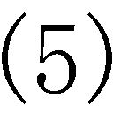体験の「量」面の孤立的亢進。確認回数のこだわりなど。
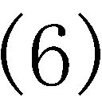いわゆる魔術的思考。縁起かつぎにも似た理由づけ。
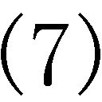自己不確実。確認行為を完遂しても、なんら安心感は得られない。時間性の障害、あるいは「経過の恵み」のなさ。
意識の弛みに対する恐怖。常に覚醒度を上げることで確実性を高めようという試み。
一見サド・マゾヒズム的様相。恐怖の対象を楽しんでいるかにみえる場合もあるが、享楽的側面に乏しい。
対抗表象の亢進。恐怖に対抗するための「良い表象」への固着。
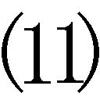注意の狭窄。固執する対象以外のものには、戯画的なまでに無頓着。
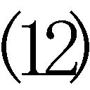病識の存在。
ここで問題は、おおまかに言って二つの領域に区分できるだろう。まず、強迫症状の象徴性という問題である。これはどちらかと言えば、精神分析的な起源にかかわる領域なので、今回はあまり重視しない。もうひとつの領域は、「強力な表象態度」に代表されるような、イメージをめぐる問題系である。
強迫者にしばしばみられる態度として、強迫にかかわる言葉を、あたかも事実、あるいは事物そのものと同等に取り扱うことが指摘されている。強迫者の心理的空間では、言葉のイメージ的な側面が肥大化し、隠喩性は縮減されて事物性が前景化し、そのイメージに対して、よりいっそう鮮明に表象することで我有化が試みられる。すべては恐怖の減圧のためである。おそらく強迫の起源とは、何が恐怖の対象となるか、これにかかわる問題となるだろう。それゆえ恐怖の起源については、多様な回答がありうるはずだ。ひとつは精神分析的回答。しかし、それだけではない。
私は冒頭で、強迫症状は疾病特異性に欠けることを指摘した。器質性、内因性、心因性を問わず、強迫症状は出現しうるということ。このことはとりもなおさず、それぞれの病因において、恐怖の起源もまた異なっている可能性を示唆するものだ。私の経験の範囲で言えば、統合失調症圏内の強迫症状における恐怖の対象は、明確に「未来の災厄」へと向けられている。ある患者は、起こりうる世界大戦の強迫観念におびえて、自宅の地下に自力でシェルターを作ったが、それでも安堵感は得られず悶々としていた。ちなみに「世界大戦の恐怖」は、すぐれて現実的な、つまり健全な恐怖ではないか、という反論があるかもしれない。しかし、強迫心性とは恐怖を処理する態度の問題なので、恐怖にいかなる現実性があるか、ということとは無関係なのだ。対するに、私がかつて担当したうつ病患者は、過去に自分がおかした些細なあやまちを強迫的に思い浮かべては懊悩することを繰り返していた。そう、強迫症状においても、木村敏氏の指摘するアンテ・フェストゥムとポスト・フェストゥムの対比は、はっきりと成立するのである。また、この事実は、恐怖の起源と強迫的処理態度とを区分して考えることの正当性を支持してくれるだろう。
繰り返し確認しておくが、ここで私は、「恐怖の起源」については問わないことにする。むしろ、恐怖という感情を強迫的に処理するための条件、こちらを問題にしたい。
再帰的な悪循環によって表象への固着が起こるというとき、私はすぐマトゥラナ／河本英夫氏のオートポイエーシス理論を連想した。それによれば、われわれの意識は表象を再生産するシステムということになる。さまざまなイメージが浮かんでは消え、あるいは連想が別のイメージをもちきたらせるなど、意識とは、多様なうつろいゆく表象がダイナミックに投影されるスクリーンであると言うこともできる。しかし、直観像などの特殊な才能の持ち主でない限り、ここでの表象は不完全なものであり、その起源はシニフィアンにすぎない、と精神分析は主張するだろう。しかしシステム論とは、そもそもシステムの構成要素と作動条件を記述するための理論であって、作動の起源は問う必要がないという偉大なメリットをもっている。だからこそ、システム論は、精神分析を前にしても、それをあっさり呑み込んでしまえるほどの、驚くべき雑食性を発揮する。ここにシステム論固有の限界もあるのだが、今はそちらには深入りしない。
河本の概説によれば、心的システムは、オートポイエーシス・システムの中でも最も複雑な機構をもつ。それは高次の自己言及システムであり、自己に関与しつつ自己を産出する。そこでは構成素そのものが、みずからを産出したシステムを再生産し続けるのだ。心的システムはまた、みずからの作動を通じて、感知しうるもの／感知しえないものの境界を区切る。たとえば色彩について、感知されない紫外線の色などは心的システムの位相的外部、すなわち「環境」の側にあるとされる。このとき「環境」は、心的システムにあらかじめ与えられるものではなく、その作動を通じてはじめて区分される。また残像補色（夕日の中で影が青く見えるような）の例は、心的システムがみずからの位相空間内部で自律的に（現実には存在しない）色彩を作り出す例として挙げられる。このような心的システムは、その本性上、知覚と錯覚（あるいは幻覚）を基本的に区別することはできない。したがって「主観」と「客観」という区別もおのずから無効となり、人間世界は閉じた心的システムとして規定されることになる。
河本氏は自己言及的に確定された思考を、区別された構成素として「表象」と呼ぶ。「表象」はまた「観察された思考」であるとされる。心的システムは自己言及的に構成素すなわち「表象」を産出する。ここで「観察」とは、産出された表象を表象するという高次の作動である。このとき心的システムにおける観察の「主体」とは、産出的作動に伴う能動感による効果とされる。
心的システムのように複雑なシステムは、その作動において多元的である。つまり観察者からみた場合、複数のシステムが同時複合的に作動を続けているようにみえる。しかし個々のシステムの側からみるとき、こうした多元性や複合性を理解することはできない。ひとつのシステムの作動にとって、他のシステムの作動は「環境」でしかないためだ。こうしたシステムの多元性は、ある事象に対して複数の理論的立場、すなわち「パラダイム」を同時に保持せざるをえないという要請を擁護するものでもある。
それでは複数の、ときには階層関係にあるようにみえるシステム（たとえば個体と細胞、社会と個人）間の関係を考える場合はどうするか。オートポイエーシス理論では、この関係を「カップリング」と呼ぶ。複数のオートポイエーシス・システムが、それぞれの作動を維持しうる範囲内で、相互に補正可能な撹乱の源泉となっているとき、システムは同一性を失わずに相互作用を続けられる。このとき成立するシステム間の関係を「カップリング」と呼ぶのである。この際、高次システムは、要素システムとは異なる新たな構成素を産出する。この関係が重要であるのは、要素─高次といった階層関係が無効化するためだ。こうしたカップリングの例としては、個人─社会システムがまず考えられるだろう。
個人システムの作動が結合して生ずる社会システムにおいては、その構成素として「コミュニケーション」が反復的に産出されるという。このように、複数のシステムが相互に他を環境としながら作動し、それが観察者からはシステムの連動としてみえるような場合、そのカップリングを「相互浸透」と呼ぶ。個人システムと社会システムはこうした「相互浸透」の関係にある。
ここでごく簡便な「強迫型意識」のモデル化を試みるなら、これはあきらかに、意識システムの構成要素としてのサブシステムと考えることができるだろう。意識というスクリーンに明滅する多様なイメージのうち、とりわけ恐怖に結びつきやすいイメージへの固着と、そのイメージを再帰的に表象しようと試みる中で、悪循環的に固着が強化されること。強迫型意識システムは、常に「恐怖の表象」を自己言及的に産出しつつ作動を続ける。これをあえて目的論的に理解するなら、意識全体の覚醒度を上げずに（それは統合失調症化の危険につながる）、恐怖と不安を局所化することで、恐慌的な形で恐怖が燃え広がるのを予防する効果があるだろう。恐怖を飼い慣らすことはできない。しかし表象化＝局所化という戦略によって、恐怖を隔離しておくことは可能、というわけだ。要素的なシステムは、意識システムにとっては外部において作動するシステムであるからだ。
それでは、数ある感情の中で、何ゆえにひとり恐怖のみが強迫システムの作動要因となりうるのか。喜怒哀楽全般に、感情には意味が先行する。まったく無意味な悲しみや喜びは想定しにくいだろう。とっさには言語化できずとも、まさに分析可能な意味の構造に支えられて、多くの感情は成り立っている。しかし「恐怖」のみは、意味が先行せずとも成り立つ。「不安神経症」の恐怖のように、神経症圏内でありながら分析不能とみなされる場合もあるほどだ。まして精神病性の恐怖は、意味不明のまま放置すれば、容易に意識システム全般に波及して恐慌状態に至りうるだろう。つまり恐怖という感情だけは、後づけでも意味システムを作り上げて、局所化＝隔離する意義が十分にあるということだ。
これはもはや神経症的な防衛機制とは無関係の、システムそれ自体が学習によって獲得した安全装置ではないだろうか。そう、強迫症状の維持における疾病特異性の欠如ぶりを考えるなら、精神分析の外側にも、なんらかの防衛機制に似たものを想定するほうが合理的ではないかと思われてくる。
このような想定のもと、ひきこもりと強迫の関係はどのように記述されるべきだろうか。まず言えることは、強迫システムの要素である「恐怖」の起源が、「ひきこもり状態」そのものによってもたらされるという可能性だ。覚醒しつつひきこもり続けることは、行動し刺激を受け続ける以上に、心的システムの作動を不安定化する。ひきこもり続けることの意味を考える延長線上には、あきらかに、みずからの惨めな未来像という、不安と恐怖のイメージがあるからだ。ならばひきこもることをやめればいい、という意見は、いささか短絡的すぎる。ひきこもる個人の外側にも、個人が自由に動くことをはばむ、より大きなシステム、たとえば家族システム、社会（世間）システムが存在するからだ。しかし、それはあくまでも解釈モデルであって、ひきこもり当事者の焦燥感は、実質的にはひきこもりから抜け出す手段がいくらでもあるにもかかわらず、みずから選択したかのような形式でひきこもり続けているという自己イメージそのものからももたらされている。
そう、社会的ひきこもり状態もまた、大いなる、無際限の恐怖の源たりうるのである。このように「合理的」な恐怖の理由がある場合は、無意味な強迫観念よりは、なかばは有意味な強迫行為のほうが前景化しやすいのだろう。その意味では、おそらく強迫観念のほうが、強迫行為よりも恐怖の根が深いと言うことができるかもしれない。
ともあれ恐怖を縮減し、操作可能な表象のもとに固着させることで、ひきこもり事例はシステムを安定させようとする。それ自体は合目的的なものだが、長期的には強迫症状はひきこもり状態そのものを温存し、いっそう抜け出しにくくさせる効果をもつだろう。この逆説を乗り切るべく、どのような処方箋がありうるだろうか。
実は私は、ここにこそ「性」の意義があると考えている。そう、エロスは強迫を解毒する作用をもちうるということ。残念ながら出典は失念したが、英語圏の家族療法家の本を読んでいて、強迫観念を訴える患者に当然のようにエロティックなイメージを思い浮かべるよう指示するくだりがあった。私もときどき強迫的になるので、まず自身で試みてその有効性を確認し、ついで二次性ではない強迫観念優位の強迫性障害を抱えた患者に、同様の指示を試みた。すると驚いたことに、数年間まったくびくともしなかった強迫観念が、いくぶんか改善したのである。もっとも患者自身はそういうイメージそのものが好きではなかったのか、自発的にその努力を続けなかったために改善は一時的なものにとどまった。しかし、この試みで私はエロスの反─強迫的な力を確信するに至っている。
ことは強迫観念に限らないだろう。エロス的なものにふれることは、強迫システムの円環を破綻させ、死から生へと固着のヴェクトルを引き戻す力があるのではないか。もちろん、このヒントから、ひきこもり事例に対する具体的実践の方法論に至るまでには、まだ何段階かの試行錯誤を要するだろう。しかし異性の患者間の交流に積極的だった私の態度は、少なくとも大きな間違いではなかったと、胸こそ張らぬまでもこっそり呟くくらいなら許されるのかもしれない。
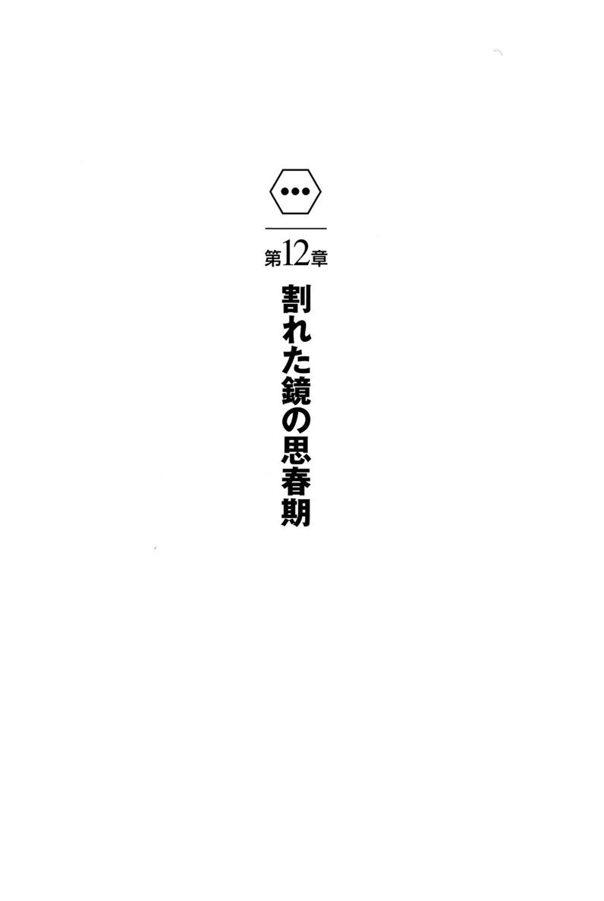
いよいよ本書も最終章である。
思えば「レピッシュ」であることをひとつの口実として、かなりやりたい放題の迷走をこれまで続けてきた。せめて最終章くらいはあまり暴れず神妙に、現代の思春期医療のあり方について私が普段考えていることを、やや断片的に述べておきたいと考えている。
もっとも私は、いつも書き始めてからテーマを「発見」することが多いので、議論の途中からまたしても迷走し始めないという保証はない。その場合は、本書での芸風ということで、ご寛恕を願いたい。
本章では、やや自己言及的な言い回しが多くなるだろう。どうしても他人事のようには論じられない問題だし、客観性を装いつつ主観的議論を展開して平然としているような、悪しきイデオローグにだけはなりたくない。その意味からも、できるだけ自分をまず俎上に乗せつつ、私的な問題から一般論への演繹を目指してみようと思う。それが私の目指す「公正さ」を保証してくれるかどうかは、読者の判断にゆだねたい。
私は思春期の専門家を自任してはいるが、あくまでも自称専門家であって、それを保証するいかなる肩書きも資格ももっていない。それでも専門家を名乗ってさしあたり許されるのは、逆説的にもこの種の「専門性」がまったく配慮されてこなかったためである。そう、わが国には、東海大学の山崎晃資氏が繰り返し指摘しているように、児童青年期精神医学という標榜科目も、大学の講座も長らく存在しなかった。それゆえ、この問題に関して、日本はいまだ欧米はもとより、韓国にも後れをとったままなのである。
今、思春期の専門家はどこにいるか？ この問いかけは、実は専門家にとっても難しい問いである。全国に思春期専門病棟は一二ヵ所しかなく、児童青年精神医学会の認定医は全国で一〇〇名にも満たない。加えてさきにも述べた事情から、私を含む自称専門家、つまり、その専門性を保証するようなトレーニングや資格を欠いたまま、たまたま経験した事例が多かったことを理由として専門家を任じている人が少なくない。このように、専門性が恣意的に決定されることの問題点はいくつもある。
まず、体系的な名簿が存在しないため、専門家の存在自体が検索しにくい。これは一般にとってそうであるばかりでなく、専門家自身にとっても同様なのだ。ここには一種の悪循環がある。どういうことだろうか。私が実際に経験した話であるが、どうも良心的な思春期の専門家ほど、名前が表に出ることを嫌う傾向があるようだ。家族会や講演会のような場面では名前を出してくれるなという要請を受けたことさえある。たいへん残念なことではあるが、私にはその気持ちがよくわかる。
ただでさえ少ない専門家ゆえ、その存在が少しでも有名になると、口コミも加わって一人の専門家のもとに患者や家族が殺到する。メディアを通じてやってくる患者の恐ろしさは、私自身ささやかながら経験ずみである。その恐ろしさとは、具体的には、みずからの臨床の質がみるみる低下する恐怖である。急に売れ出したアーティストよろしく、私のインディーズ時代からのファン(患者)は特別待遇ですよー、というわけにもいかない。外来は分刻みの予約制となり、初診の予約そのものがきわめて困難になり、それでも増え続ける患者を前にして、時間的・精神的ゆとりはみるみる削られていく。
この現状を改善するには、どうすればいいか。専門の講座と専門医制度、さらに、これに基づく名簿と紹介ネットワークの整備。そう、そこまではわかっている。しかしそれが実現するのは、いったい何年先になるだろう。せめて学会名簿に専門領域や関心のある対象などが併記される程度の改善は期待したいが、それも見込み薄だ。インターネットの普及は、こうした状況をいくらか改善したが、まだまだ不十分である。私は最近、講演会などでは「ドクター・ショッピング」ならぬ、治療機関の「ウィンドウ・ショッピング」を勧めることが多い。どんな医師が自分、あるいはわが子に向いているかを知るためには、書籍やインターネットからの情報のみでは難しい。直に対面して、はじめてわかることが多すぎるのだ。いきおい、よい治療者に巡り会えるかどうかは、確率的な問題となってくる。それゆえ私は、よりよい治療を求めて転院を繰り返す家族を、あまり責める気になれない。
それでは、具体的にはどうすればよいか。たとえば私が家族に勧めるのは、次のような手順である。まず病院やクリニックの名簿を用意する。通院可能な距離にある病院に、片っ端から電話をかける。本人の状態を説明し、対応してもらえるかどうかを尋ねてみる。電話での説明を断られたら、そこは却下する。好感触だった病院を数ヵ所に絞り、ここからさきが肝心なのだが、まず家族のみで相談に行ってみる。これはいわば、「試着」の段階に当たるだろうか。ここでの感触から、最終的に治療者を絞り込むのだ。
それにしても、なぜ思春期を専門とする精神科医はこれほど捜しにくいのか。数が少ないためだとすれば、それはなぜか。まず第一に、小児科と同様、効率よく収益を挙げられないという問題があるだろう。なるほど、外来で慢性のうつ病と統合失調症の患者だけを相手にする限りは、パターン化された一分程度の問診と前回と同じ処方箋を機械的に切るだけでも、いちおう診療は成立する（三分診療だなんだと批判されるが、三分というのは結構長い）。そうやって一日に患者を一〇〇人診る場合の収益を考えるなら、思春期患者は効率が悪くて仕方ないだろう。ちゃんと診るなら最低でも一五分は話さなければならないし、ときには患者の「わがまま」にも、辛抱強くつきあわなければならない。どれほど頑張っても、ある程度以上質を落とさずに一日三〇人以上診ることは困難だ。しかし、単にそういった理由に基づく敬遠ならば、その姿勢はやはり軽蔑の対象でしかないだろう。怠惰の害はどこにでもあるという、問題としては非特異的なレヴェルにとどまる。
もうひとつの理由は、思春期の精神医療が必要以上に困難なものに思われているということだ。何やら、特殊な設備に特殊な技術が欠かせないと誤解されているのだ。なるほど、たしかに思春期専門病棟はあるに越したことはない。遊戯療法や集団療法などの経験も、しばしば有用であるかもしれない。しかし私は、専門の思春期病棟などない私立単科精神病院に勤務しつつ、一人最長一〇分程度の完全予約制で診療を続けてきた。それで十分とはもちろん考えていないが、しかし、そのような診療でも、デイケアやカウンセリングと組み合わせれば、一定の成果は上げられる。要するに、一般患者対象の精神科であっても、医師にその気さえあれば、思春期患者を対象とした治療を十分に行いうるのだ。たとえば、ひきこもりの広がりを考えるなら、もはや一握りの専門医だけでは対応が追いつかないことははっきりしている。それゆえ私は、いまだ専門医制度がろくに機能していない現状を逆手にとることを提案したい。一般医に近い立場の人も含めて、思春期の問題を敬遠しないでもらいたいのだ。
清水將之氏から直接に聞いた話では、最近になって名古屋大学と信州大学に児童青年精神医学の講座が設置され、神戸大学にも設置が予定されているとのことである。もっとも、いずれも小児科から分かれてできたものらしく、そうとすれば年齢制限の設定は気になるところではある。清水氏によれば、現在文部科学省は、この名を冠した講座を設けることに積極的になっており、申請さえあれば認可されるという状況に変わりつつあるという。ということは、もはやこの領域の国際的な遅れを、われわれは政府や社会のせいにはできない、ということになるのではないか。
第９章では「コメンテーターとしての精神科医」というテーマで、メディアと精神医学の問題を取り上げたが、本章では私自身のことも含めて、もう一度このテーマについて、思うところを述べておきたい。
みずから依拠する立場として「精神科臨床医」という以上のものをもたない私のような人間が、こうした場所で気ままな議論を展開できるのは、ひきこもり問題にしょうしょう深くかかわったということも含めて、まさに私がメディアにかかわったためである。その意味では、私はメディア精神科医とみなされることを拒否しないし、かかわりをもってしまったこと自体には、葛藤しつつも後悔はしていない。
思春期の問題は、メディアと密接に関連している。それは、単純にメディアの影響を受けやすいというレヴェルの問題のみならず、すでにメディアが生活環境の一部を構成する以上、精神科医のメディア・リテラシーが問われる領域でもあることを意味している。そこには、メディアの中で精神医学がどのように受け止められているかという状況への適正な感覚をもつことも含まれている。
メディアと精神医学というテーマは、現状において大きく二つの問題系にかかわっている。ひとつはメディア環境がもたらす効果の精神医学的な評価。もうひとつは、メディアと精神科医のかかわりに関する、新たな倫理的態度への問いである。とりわけ後者については、冷笑的な否定か、さもなくば感情的な否認があるばかりで、いまだかつて厳密な検証がなされていない未開拓の領域である。現在私は、この問題についての著作を準備中であるが、本来ならば複数の専門家が定期的にシンポジウムなどの場で討議し、その結果を公表していくというくらいの対策に値する問題ではある。
精神科医がメディアにかかわることへの批判は少なくないし、私もそれを全面的に肯定するつもりはない。しかし、すでにメディアにかかわってしまった立場から言うならば、この問題は単に禁欲的であればすむという問題ではない。すでに何度か書いてきたことではあるが、私はことひきこもり問題に関しては、メディアが動かなければ対策はずっと遅れた可能性があると考えている。言ってみれば、透明なまま潜在していた問題を、マスコミの報道が一挙にあぶり出したのだ。報道されることが患者を増やすという「ルーピング効果」（イアン・ハッキング）も、もちろん無視はできない。しかし、そのデメリットをふまえても、こうした顕在化の意義は大きかったと考えている。報道によって増えたのではなく、潜在していたものが問題化したのだという事実を、私は経験的に知っているからだ。
むしろ問題は、私を含む多くの精神科医が、メディアに対して、あまりにもナイーヴな受け身の姿勢で接してきたことではないだろうか。言い換えるなら「依頼にＮＯと言えないこと」の問題である。取材やコメントの依頼を、きちんとした理由とともに断るのは、かなりエネルギーの要る作業だ。私自身、不本意な仕事を、ついうっかり引き受けてしまい、後悔したことも一度や二度ではない。
しかし現代は、社会全体の心理学化が否応なしに進行しつつある時代でもある。「こころの理論」への要請がこれほど高まった時代はかつてない。二〇〇〇年にリクルートが行った女子高生の志望する職業アンケートで、「女優」に次ぐ第二位は「心理カウンセラー」だったという。こうした風潮は今後も続いていくだろうし、ひと頃ほどではないにしても、精神科医とメディアの蜜月はまだ続きそうだ。このような状況下で考えられる対策は二つある。ひとつは診療行為をしない専業の「メディア精神科医」あるいは「精神医学評論家」という職業を作ること。もうひとつの対策は、こちらがより現実的ではあるが、精神科医のメディア・リテラシーを向上させることだ。つまり文脈に応じてメディアを利用する作法を確立すること。当面の課題はこれに尽きるだろう。繰り返すが、単純にかかわりを拒むことは、ある意味で最も確実、かつ容易な方法のひとつである。この姿勢に問題があるとすれば、良心的な医師がメディアへの関与を忌避するほど、「関与を積極的に望む医師」に依頼が集中してしまうことだ。これではまったく、問題の根本解決にならない。
壁を作るのではなく、しっかりしたインターフェイスを構築すること。いまや、こちらこそが重要なのではないだろうか。メディアの特性を踏まえたうえで、コメントや取材に対してどのように応ずるのが適切であるか、一種の倫理規定を作成する必要があるのではないか。少なくとも私が苦労したのは、この種のガイドラインがないため、自前でそれに準ずるものを作らざるをえなかったことだ。
私自身について言えば、メディアへの関与を今後ともやめるつもりはない。思春期の専門家を自任するものとして、あえてそうするのだ。メディア・リテラシーに乏しい精神科医がどれほど問題となりうるか。それは精神科医でもある民主党の某議員が有害図書規制の急先鋒となっていることからも明らかだ。子どもの発育にメディアが及ぼす影響の十分な検証もなしに展開される、「はじめに結論ありき」のこうした暴論は、それがＰＴＡからの集票目的でなければ、あきらかにメディア・リテラシーの欠如のうえに成り立っている。こうしたナイーヴさの暴力から思春期を守るためにも、私はみずからの発言権を確保しておきたいのだ。週刊誌でくだらないコメントをする私の姿をもし見かけたら、それがこうした戦略上やむをえず採択された道化の身振りであるという、好意的な解釈を期待したい。
もっともこうした「あえてする身振り」は、決して安全なものではないことも指摘しておかなければならない。「シャレでやっている」「わかって演じている」というサインを出しつつ行動することは、八〇年代的な身振りの典型でもあった。しかし、一見シニカルにもみえるそうした姿勢は、実は「シャレ」の外側に「本当の自分」を確保できると信じている点で、別種のナイーヴさを秘めた態度とみなされるべきなのだ。その問題については後述する。ただし私は、メディアが思春期に影響を及ぼしうるとすれば、それは報道される内容からの直接的な影響よりも、たとえばこうしたシニシズム的な自己防衛の身振りが伝達される危険性について、もっと配慮がなされる必要があると考えている。
メディアはさまざまな意味で、鏡像段階（ラカン）を延長する。最初の鏡像が、文字どおり姿見などに反映した自己の全身像だったとするなら、新たな鏡像は意味と象徴に媒介されつつ、たとえばＴＶの画面上にあらわれる。そこではあなた自身の認識・行為・感情の一切が、先取り的に描き出され、解釈とセットで提示される。そのような鏡像を提示され続けることで、あなたは知らず知らずのうちに、効果と意味を先取りしつつ行動するような、シニカルな自意識を獲得させられていくだろう。
こうした鏡像の問題が、最も顕著にあらわれるのは、やはり境界性人格障害をおいてほかにない。もちろん境界性人格障害の問題は、思春期の問題に限定されるものではないが、第５章で取り上げたように、そこには多くの思春期的エレメントが含まれている。私見では、境界性人格障害の診療を毛嫌いする治療者は、一般的に思春期事例も診たがらない傾向がある。逆に境界性人格障害に強い治療者は、思春期事例にも積極的に取り組む傾向があるように思う。やはりそこには、相通ずるものがあるのだろう。
結論から言えば、思春期の臨床を志すものは、好むと好まざるとにかかわらず、境界性人格障害の治療経験を重ねるべきだと私は考える。それが実り多い体験である、とはあえて言わない。みずからの適性を知るという意味もあるだろう。境界性人格障害の治療は、真剣に取り組むほどに治療者を苦しめる。しかし、そこで得られる教訓はやはり貴重だ。
それはひとことで言えば、精神医学のひとつの限界を知らされる体験にほかならない。たとえば、ある種の境界例患者は、いかなる薬物にも抵抗する。興奮状態に対処しようにも、ときには精神病の患者以上に、鎮静作用があらわれないのである。私はこの体験から、境界性人格障害にはいかなる器質的な基盤も存在しないことを確信した。なぜそのような結論になるのか。しばしば誤解されていることだが、向精神薬には、こころのありよう全体を変えてしまう力はない。たとえば「思想」や「信条」を変えることはできないし、中井久夫氏が指摘するように、患者の描く絵も変わらない。その意味では、境界性人格障害の症状は、もはや思想・信条のレヴェルに達しているのではないか。いや、それをこそ「人格」と呼ぶべきだろうか。そして言うまでもなく、「思想」に器質的基盤などない。
しかし同時に、境界性人格障害にはいかなる精神療法も無効だ。この点は、大方の賛同を得られると思う。彼らには、あらゆる治療的な枠組みをヴァーチャル化してしまう特異な力があるのではないかと考えたくなるほどだ。医師にとって自家薬篭中の技法から、習い覚えたばかりの手法まで、試してみればなんでもいっときは効く。しかし、しめたと思う間もなく、再び症状は悪化してしまう。そんなことを繰り返すうちに、患者も治療者も徐々に徒労感に打ちひしがれていく。
私はかつて、境界性人格障害のことをメタ神経症、ないしメタ・ヒステリーと呼んだことがある。もちろんこれは比喩的表現であって、私見では彼らもヒステリーの一角をなす存在であるには違いない。あえて「メタ」と呼ぶのは、彼らには一見したところ、かなり正確な病識があり、それにもかかわらず、それが治療上なんの役にも立たないからだ。
余談ながら、近代を神経症の時代ととらえるなら、私は境界性人格障害の出現をもって神経症のポストモダンになぞらえることが可能であるように思う。それは、顕著な表層的変化にもかかわらず、事の本質は何も変わらない、という意味からも、ポストモダン的な現象なのだ。これに続く解離性障害の復権を考えるなら、ポストモダンには二段階あることになるのだが、それはまた別のところで論ずるとしよう。境界性人格障害のひとつの典型例では、疾病利得や転移といったジャーゴンを十分に理解しつつ、その理解がなんら本人の本質的洞察を深めない。ここには、ジジェク氏が好んで指摘するところの、ポストモダン的なシニシズムがみてとれる。彼らはみずからの狂気について正確に理解しているという点では、狂気を演じていると言うこともできるだろう。しかし、それにもかかわらず、彼らは狂気を逃れることができない。そしてジジェク氏によれば、「それにもかかわらず」ではなく「それゆえにこそ」ということになるのだ。狂気を理解しているがゆえに、狂気に陥ってしまうこと。
ラカン派哲学者であるスラヴォイ・ジジェク氏の言説については、すでに少なからぬ批判もあるが、私は境界例に関する彼の指摘は傾聴に値すると考えている。少し長くなるが、ここに引用してみよう（『仮想化しきれない残余』青土社、一九九七）。
「ヒステリーは〈主人〉の呼びかけに対する徹底して両義的な抗議であり、そしてそのことが、ヒステリーの患者が〈主人〉を必要とし、〈主人〉なしにはやっていけ」ないという事実、私なりに言い換えるなら「依存を前提とした反抗」をしている事実を示している。こうしたヒステリー理解を踏まえて言うなら、境界例は「ヒステリーの現代的な形態であり、つまり、患者が、呼びかけを実行するのが従来の〈主人〉ではなく、科学の言説の『専門知識』であるという」ことを示す存在である。すなわち「従来の〈主人〉から〈知識〉によって正当化される〈権力〉への移行」がそこにみてとれる。私なりにさらなる翻案を加えるなら、境界例とは、知識、とりわけ過剰な心理学化によって個人の内面をコントロール可能であるかに思わせるようなイデオロギーに対する異議申し立てなのだ。しかし、その反抗は、まさに「心理学的知識」に依拠してなされなければならず、その意味において境界例もまた「依存＝反抗」というヒステリー的身振りを反復することになる。
ジジェク氏はポストモダン的なシニシズムの例として、映画『ウエスト・サイド物語』の不良少年やドイツのネオ・ナチ青年たちが、みずからの逸脱行動を説明する際に、その背景にある不利な社会状況や好ましくない家族関係を挙げる態度を示している。彼らはみずからの行為をあたかも社会心理学者のように説明する。この身振りは、みずからのトラウマ、あるいは親の養育態度などを糾弾して止まない境界例や、いわゆる「アダルト・チルドレン」、あるいは一部のひきこもり事例などにも共通してみられるものだ。そう、彼らはみずからの「狂気」が何に由来するかという「知識」はもっている。しかしそうした反省的知識は、いささかも狂気を緩和することはない。彼らはみずからがなしつつあることの意味を十分に知りながら、それでもそれを行うのだ。
もっとも「狂気」という粗雑な言葉を子細に検討すれば、それはせいぜい反応性精神障害のレヴェルを出ないことがわかる。たとえばこうした事態は、統合失調症やうつ病には該当しない。もちろん器質性疾患についても同様である。神経症の葛藤は、みずからの無意識の欲望という真実の、あるいは真実に近い鏡像にふれることで癒される（例：転移性治癒）。そうであるなら、それは想像的な治癒にすぎず、本質的な治癒はありえない。それゆえの「終わりなき分析」（フロイト）なのである。この鏡像をもたらすものが、今日では心理学であり精神分析「学」なのだ（「 」の意味は、私は「精神分析」の営みは肯定しつつ、学問の静的体系としての「精神分析学」については否定的であるため）。
しかし境界性人格障害には、こうした鏡像による癒しは訪れない。あるいは、訪れたとしても続かない。その理由はさきほども説明した、狂気に対するシニカルな距離に基づいている。彼らはその巧みな同一化能力によって、みずからの（心理学的な）鏡像にやすやすと同一化してしまう。つまり鏡像に対して、みずからそれを写し出すもうひとつの鏡像になってしまう。容易に想像できるように、ここに鏡像無限が生ずるだろう。つまり「治療を続ける限り治療が終わらない」という悪循環が生ずるのだ。鏡像をもたらす鏡そのものを破砕すること。具体的には、ある種の必然性に基づいて治療関係が中断されること。私はつまるところ、この経験だけが境界性人格障害を治癒に向かわせるのではないかと考えているところがある。ただし、必然性は重要だ。「治療の中断こそが治療的」という知識に基づいてなされる中断は、新たな鏡像をもたらすことにしかならないだろう。
私はさきにメディアについて少しふれたが、境界性人格障害というポストモダン型神経症には、視覚メディアの発達が深く関与していると考えている。視覚メディアの発達は「主体の複数化」をもたらしたと、しばしば指摘される。それがもし事実であるならば、臨床的には統合失調症（「多重人格」ではない）の増加といった徴候があらわれるはずだ。しかし少なくとも、そのような事実はない。私はむしろポストモダンにおける「鏡像の複数化」のほうを考えたい。近代における想像界が「リアルな鏡像はただひとつ」という原則で成立していたとするなら、現代はひとつの主体に対して複数のリアルな鏡像が対応する時代だ。それゆえ、われわれはもはや「リアル」を単一のものとしてイメージすることはない。世界は複数の「リアリティ」が重層する場所なのだ。
リアリティの複数性を受け入れることで、われわれの見当識は保たれる。しかし境界性人格障害はそうではない。彼らは鏡像が複数化することに耐えられないのだ。それゆえにこそ彼らは、ただひとつの「真実の対象」を求めてやまない。ときとして彼らの振るまいがパラノイア的に見えるのは、おそらくそのためだろう。多重人格とは、複数化した鏡像に、それぞれ複数化した主体が対応していると信ずることだ。そこには境界例にはまだ残っていた、単一の主体への執着も忘却されてしまっている。
ところで鏡像とひきこもりに関して言えば、複数の鏡像のリアリティを受け入れつつも、それによって主体が複数化されてしまう可能性を恐れるのがひきこもり、という対比が可能であるかもしれない。境界例とひきこもりは「行動」を軸として正と負の関係がある。乱脈な行動を通じて単一の、つまり真実の鏡像（＝欲望）を求め続ける行動が境界例的であるなら、行動に出ることで鏡像が複数化してしまうことを恐れて、なかなか行動に出ることができないひきこもりとは、ちょうど対極にあると言いうるのかもしれない。いずれにしても、ポストモダンにおける鏡像の複数化という事態に対応しているという点では共通している。
ここまで述べてきたことは病理的な例であるが、メディアによってもたらされた鏡像の複数化が、もっと薄められた形で思春期にも影響を及ぼしていることは、ほぼ間違いないものと考えられる。「モラトリアム」という言葉ですら、「自称モラトリアム」という形で当事者によってリサイクルされていることを考えるなら、これもまた鏡像のひとつにすぎないことになる。何をしていいかわからないという悩みは、形だけならどんなことでもできるというシニシズムと同根だ。メディアはそのような鏡像の断片を、それとは知らずにばらまくことで、最も強力なイデオロギー装置となっている。その意味で、今ほどプロパガンダが有効な時代はかつてないのではないか。
私の臨床家としての専門は社会的ひきこもりだが、理論的な立場はラカン派に近い。もっとも、近いというだけでラカニアンではない。この二つの領域は、一見したところ、きわめて乖離したものにみえるかもしれない。しかし私は、およそ思春期の専門家を志向するものが臨床経験として境界性人格障害を経ていることが要請されるのと同じ意味で、理論の経験としてラカンを通過しておくことが望ましいと考えている。ただしそれは、精神分析の技法を修得するため、ではない。臨床面における定型的な精神分析技法の有効性については、私はあまり信頼していないからだ。
十川幸司氏が指摘するように、ラカンの「理論」は、精神分析家の教育分析を主たる目的とした「メタ精神分析」とでも言うべきものだ。それゆえ、実際の臨床場面で直接に応用することは難しい。というか、ほとんど役に立たないだろう。
しかし、それゆえにこそ「ラカン」はその特権性を主張できるのではなかったか。多くの有効とされる治療技法は、常に鏡像のほうを取り扱う。ひとつの鏡像に固執する主体に対して、異なった鏡像のリアリティを提示すること。たとえばリフレーミングにしてもフォーカシングにしても、そのような側面をもっていると言いうるのではないか。その意味では、「癒し」も「治癒」も鏡像に対して生ずる現象であると考えられる。治療が鏡像の複数性を受け入れるための手法であるなら、カルトは強力な外圧によって鏡像を固定化し、それ以外のものが目に入らないように操作するためのテクニックではないだろうか。
メディアによる鏡像にも、ときに治療的効果がある。中井久夫氏が紹介している例（「いじめについて」『清陰星雨』みすず書房、二〇〇二）では、韓国の小学校で、集団いじめのシーンを教室にとりつけたカメラで撮影し、生徒全員にそのシーンを見せたところ、いじめはぴたりとおさまったという。しかしこのエピソードは、生徒の内面において本質的な変化は起こらなかったという、苦いオチがつくのだが。
精神分析において治癒が起こりうるとすれば、それはこうした鏡像の操作に基づくだろう。しかしラカンの技法は、鏡像を操作することではもちろんない。そうではなくて、ラカンは治療者が操作するものが、よくも悪くも鏡像にすぎないという事実を、身も蓋もなく暴いてしまうのだ。果たして治療者は、みずからの営みが鏡像の操作にすぎないと知りながらも、その有効性を信ずることができるだろうか。ここにおいて、ジジェク的シニシズムが有効になってくるのではないか。私たちは治療が想像的な舞台で演じられているにすぎないことと知っている。そして、それにもかかわらず、いや、それだからこそ、その治療の有効性を確信できるのだ。
治療者としての私の信条は、依然として「理論は過激に、臨床は素朴に」というものである。臨床面では、害にならないことを基準として、さまざまな技法の断片を折衷的に取り込もうと目論んでいるが、おおむね単純素朴な精神療法と薬物療法に終始している。ここで同時に内面を複雑にしておくことは、みずからがあっさりと患者の鏡像に化してしまわぬためにも必要なことだ。私が精神分析を捨てられないのは、臨床でも自己分析のためでもない。すくなくとも直接的には。そうではなくて、内面の複雑化のために、精神分析は必要なのだ。患者を前にして、決して口にされることのない解釈の雲が脳内に渦巻いている状態を作り出すこと。私がラカニアンを支持するのは、ラカンの言葉こそが、最も美しい雲を作り出すと信じているからだ。
「変われば変わるほど変わらない」とは、私が好んで引用する箴言だが、精神分析の立場から、これにもうひとつの箴言を組み合わせておこう。「変わらなければ滅びてしまう」と。前者のみではいっそうのシニシズムが助長され、後者のみでは『チーズはどこへ消えた？』に象徴される米国起業家向けのアドヴァイスと変わらない文句になってしまう。しかし私は、この二つの言葉を、人間の心的装置の理解のためだけにとっておこうと考えている。
鏡の断片に満ちた世界では、患者のみならず治療者までもが幻惑されてしまいがちだ。あえて幻惑されないため、とは言わない。幻惑されつつ、そこから何度も回復するためにも、この二つの言葉を唱え続けていくこと。思春期であれメディアであれ、変転してやまない領域にかかわることは独特の困難を伴っている。そしてこころも、あるいはしばしば社会も、その構造を支えているのは、「変化」のダイナミズムだ。構造に注目すれば変化を軽視することになり、変化に目を奪われれば反復までも新しいものに見えてしまう。私は臨床家として、とりわけ私より若い人たちのために、この二つの言葉を贈りたい。これをもって、ひとまず本書のしめくくりとしよう。
本書は二〇〇〇年四月からおよそ二年にわたり、雑誌『こころの科学』で連載した原稿を一冊にまとめたものである。本文中にもあるとおり、もともとのタイトルを「レピッシュ思春期現象学」といい、これはこれで結構気に入ってはいたのだが、まとめるに当たってはいささか冗長なので『博士の奇妙な思春期』とした。いつか「博士」とタイトルに冠された本をどうしても出しておきたいという、妙なこだわりがあったせいもある。高校時代に仲間と制作した特撮巨編『大豚人の逆襲（予告編）』に博士役で出演して以来の悲願が、ようやくかなえられたというわけだ。
テーマはいささか「生もの」でもあり、部分的には古くなった内容もあるが、あきらかな間違い以外はほとんど直しを入れなかった。そのかわり、各章について少しずつコメントしていこう。
第１章「二極分化する思春期」は、雑誌『広告』で企画され、その後単行本『若者のすべて』（ＰＨＰエディターズ・グループ、二〇〇一）に収録された若者インタビューに基づいて書かれたものだ。連載の最初の回ということもあり、いささか気負った宣言文めいた文章が掲げられているが、最終的にこの意気込みがどれほど達成されたかはわからない。思春期の両極化傾向は現在も続いていると考えられるが、この当時に比べて、どれほどそれが先鋭化したかも、なんとも言えない。
しかし、今の思春期を語るについては、この問題は依然として私の中で中核的な位置にある。若い世代にあっては対人評価が「コミュニカティヴであるか否か」という、ほぼ唯一の判断基準のもとでなされつつあるということ。そこには従来とは異なった疎外の図式が生ずるだろう。それにしてもわれわれは、人間がコミュニケーションだけでこれほど満たされてしまう存在であることに十分気づいていなかった。ケータイ文化はいっそう栄えるであろうが、この後に続くモードが予測しにくいのは、おそらくケータイ（＋メール）以上に簡便で満足度の高いコミュニケーション・メディアを、われわれがまだ想像すらできないことによるのだろう。
第２章「おたくのセクシュアリティ」は、連載三回分を一章に圧縮したため、いささか冗長な構成になってしまった反省はある。ここに記されているのは私が著書『戦闘美少女の精神分析』で行った考察のうち、おたくについてのその後の展開とも言うべきものである。とくに同書でほとんどふれなかった「やおい」についての考察が中心的なテーマと言えるだろう。このテーマはその後、本文中にも記してある東浩紀氏のホームページ（ＨＰ）での議論を経て、二〇〇一年九月のイベント「網状言論Ｆ」（私は同時多発テロの影響で滞在中のハワイに足止めをくらい、国際電話での参加になったが）、そして青土社から刊行ずみの『網状言論Ｆ改』（二〇〇三）へと引き継がれている。そちらもあわせて参照されたい。
実は本書の編集者である小川氏は、たいへんに正統的で濃いおたくという別の顔をもっている。とりわけ声優方面には造詣が深い。本書におたく関連のテーマが多いことや、その考証がそれほど的を外していないとすれば、それは小川氏による強力なサポートによるところが大きい。ただし、テーマの選択はあくまでも私自身が行ったものだし、細部の考証ミスを除いては、それほど大きな修正はなかったことを念のために付け加えておこう。
本書にあってはいささか異色な第３章「マインド・コントロールと解離」は、本書中最も手間をかけた取材が背景にあり、文章化されたのもこれが初めてということもあって、かなり読み応えがあるのではないかと自負する章である。本章に記してあるとおり、私は一九九六年の暮れにヤマギシの実顕地を取材し、元村人にも面接調査を行って、その結果を社会精神医学会で発表したのだが、長らく論文化を怠っていた。しかし面接調査をコーディネートしてくれた米本和広氏や、おなじく取材協力してくれた作家の下田治美氏らに論文化を約束した手前、いつかは宿題を提出しなければと考えていた。さいわいこのような形で宿題は果たされたが、ヤマギシそのものが壊滅の危機に瀕している現在、テーマとしてはいささか古びてしまった感もある。しかし、ここで私が指摘した「マインド・コントロール」と「解離」の関係は、それがカルトをめぐる議論一般にも、じゅうぶん応用可能であることを考えるなら、もう少しその道の専門家による検証を期待したいところである。
第４章「子どもたちの代理戦争」は、ポケモン好きの甥っ子につきあう中で生まれてきたアイディアがもとになっている。ただし、中沢新一氏についてはずいぶん辛口の評価と思われるかもしれない。しかし私は、氏の『哲学の東北』(青土社、一九九五）で泣かされて以来、氏自身の過剰なまでの深読み、あるいは誤読のヴェクトルこそが、氏の文章を感動的なまでに面白いものにしている当のものではないかと感じてきた。そのことを考えるなら、ここでも中沢氏の文章は、ゲーム擁護論のようでいて、ゲーム・バッシングにつながる危険をも同時にはらんでいることを否定できない。いや、これに限らず、メディアが人間の可能性を無限に拡張する、といった楽観的なメディア論は、メディア脅威論に容易に転ずることができる。私はそうしたタイプの議論を「内破主義」と呼び、その批判を現在『インターコミュニケーション』誌上の連載で展開中である。関心のある方は、ぜひそちらも参照されたい。
第５章「境界例のためのレッスン」は、本文中にもあるように、仲間内に配布した「論文」を中核としている。「仲間」とは、私がかつて所属した筑波大学の稲村研究室のメンバーで、ここの出身者同士は、いまでもメーリングリスト（ＭＬ）で連絡を取り合っている。この「論文」も、そのＭＬに投稿され、ひょんなことからある大家の目にとまり、雑誌『精神医療』への投稿を勧められた。実はこの雑誌、第６章で批判した高岡氏のホームグラウンドなのである。そんな因縁はつゆ知らず、私は「論文」を架空の対話形式に書き直して投稿した。なぜかこの投稿はボツになったのだが、結果的にそれは幸いだったと思う。その理由については、読者諸賢のご想像におまかせしたい。
私がこれまで書いた、ほぼ唯一の論争文が、第６章「孤立を恐れるな──しかし独善を恐れよ」である。私のメディアへの関与ぶりや、ひきこもり殲滅運動の急先鋒という浅薄な誤解に基づく批判が、このところ少しずつ出始めている。高岡氏には申し訳なかったが、ここではその代表役として、生け贄の山羊になっていただいた。これはもちろん、数ある批判の中で、もっとも反論しておくに足るレヴェルのものが、高岡氏によるもののみであったこともある。その後雑誌『精神医療』（前出）で高岡氏自身による反論もなされ、そのシンパとおぼしい「社会学者」の援護射撃もあったようだが、もはや言うべきは十分に言い、論点に何ひとつ訂正する必要を感じない以上、噛み合わない論争をこれ以上続けるつもりはない。もちろん対談ないし討論の機会を提示されれば、喜んで応ずる用意はある。やはり喧嘩はライブに限る。ちなみに本章は、連載中もっとも反響が大きい回だった。連載時には反論を期待して付記しておいたメールアドレスには、案に相違して批判や反論は一通も寄せられず、何通かの応援メールが届いたのだった。メールをくださった方々には、ここで謝意を表しておきたい。
第７章「リストカットと去勢」も、実は雑誌『広告』との連動企画である。何人かのリストカッターにインタビューし、さらにリストカット関連のイベントなどにもなぜか招かれる機会があり、この問題については一度掘り下げておく必要を感じていた。解釈として十分に深いレヴェルに到達しているかは、はなはだ心許ないが、臨床場面以外で論じられがちなこの問題に対して、精神医学の立場からそれなりに新しい視点を示すことができたとは思っている。
私は三才ブックスが発行している月刊誌『ゲームラボ』に「おたく神経サナトリウム」という、われながら素晴らしいタイトルの連載をもっている。第８章「ゲームおたくとアウラ消費」は、その雑誌でのインタビュー記事を掘り下げたものだ。第２章のおたく論とは直接のつながりはないが、結果的におたくを、「メディアのレンズを通して人間の精神分析的構造を拡大して見せてくれる存在」として理解しようとする視点には変わりがない。
長年かかわっていながら完成が遅れ続けている単行本の企画がある。仮タイトルを「心理学化する社会」と言い、部分的にＰＨＰ研究所のＨＰでも公開中である。第９章「心理学への欲望、あるいは対抗の倫理」は、この企画と連動して発案されたものであり、メディアと精神科医がいかに関係をもつべきかという、私にとってはきわめて切実なテーマを考える端緒ともなった。こちらもいずれ単行本化する予定であるが、いつになることやら。
第10章「セックスと死と金銭のタブー」は、ひきこもり当事者にして『「ひきこもり」だった僕から』という本の著者、上山和樹氏の文章に示唆を得て書かれた文章である。上山氏はこのほかにも、精神障害を経済的なモデルで考えるという、なかなか興味深いアイディアをもっている。たとえば、ひきこもりに対する批判は、要するに「お前らも（負債を）返せ！」という怨念だというのだ。単純な経済モデルは図式的すぎてつまらなくなりがちだが、「貸し─借り」という軸で考えると、なかなか面白い構図が浮き出てくるように思う。本章では、タブーが消えたと言われる現在でも、家族という「文化の最小単位」としての共同体には、タブー的なものが残っていることを、その成り立ちから精神分析的に示しえたと思う。
思春期の問題を扱う以上、いちど「強迫」は取り上げなければいけないと考えていた。その帰結が第11章「思春期と強迫システム」である。この非特異的症状について、寡聞にして、十分に納得のいく議論をこれまでみたことがなかった。しかし安永氏の論文にヒントを得て、システム理論で記述してみたところ、それなりにうまく説明できることがわかった。もっとも、精神分析もシステム論も、いかなることでも解釈し、説明できるという「欠陥」があるので、これではまだ片面でしかない。一面をシステム理論で、もう一面を精神分析でという両面からのアプローチこそが、もっとも望ましいだろう。その詳細な検討はしかし、後日の機会にゆずるとしよう。
最終章「割れた鏡の思春期」は、読めばおわかりのとおり、一番まとまりを欠いている。冒頭で思春期精神医学の貧困を憂い、メディア精神科医のありようを語り、最後に境界例で締める。本書の迷走ぶりをそのまま示すような内容ではあるが、他の章で言い漏らしたことをそのまま放り込んだ形なので、無理もない。しかしよく読めば、この三つの話題に深く通底するテーマがみえてくるだろう。とりわけポストモダンを、主体の複数化ではなく、鏡像の複数化とみる考え方は、分裂や解離現象を考えるに当たっても、もう少し掘り下げておくべきテーマであろう。
以上で、各章についての解説と後日談を終えるが、最後に表紙についてもぜひ述べておきたい。イラストを担当してくれた「ぽ～じゅ」師の名を知るものはけっして多くないだろう。すぐピンときたひとは、かなりのショタ者であると自負してよい。この伝説の絵師にコンタクトし、イラストを依頼してくれたのは、もちろんおたく業界人脈では人後に落ちない編集者・小川氏である。できあがったイラストをはじめて確認したのは、旅行中だったフィレンツェのインターネット・カフェだった。細密に描かれた幻想の少年がはなつエロティシズムは、私がぽ～じゅ氏にかねてから捧げていた「おたく界のカラバッジオ」なる尊称が誤りではなかったことを確信させてくれた。そのことは翌日訪れたウフィツィ美術館で、もう一度現物を見て確認することになる。
この表紙は、ひとつの挑発でもある。なんのため、誰のための挑発であるかは、あえて記さない。もちろん、この表紙から、私自身の趣味や性向をどのように解釈されても構わない。あとは、ある種のショックとともに、本書が受容されることを願うばかりだ。
ここにあらためて、本書の産婆として怠惰な筆者を辛抱強く励まし続けてくれた日本評論社の小川敏明氏に感謝を捧げたい。
本書は『こころの科学』九一─一〇五号（二〇〇〇年五月─二〇〇二年九月）連載「レピッシュ思春期現象学」を加筆修正したものです。
●著者略歴──
斎藤 環（さいとう・たまき）
１９６１年岩手県生まれ。筑波大学医学研究科博士課程卒業。医学博士。現在、爽風会佐々木病院精神科医長。専門は思春期精神医学、病跡学。「社会的ひきこもり」の啓発活動を続ける一方、サブカルチャー方面への発言も多い。
著書に『文脈病』（青土社）、『社会的ひきこもり』（ＰＨＰ新書）、『戦闘美少女の精神分析』（太田出版）、『若者のすべて』（ＰＨＰエディターズ・グループ）、『「ひきこもり」救出マニュアル』（ＰＨＰ研究所）他。
書名 博士の奇妙な思春期
著者名 斎藤 環
発行 株式会社 日本評論社
〒１７０－８４７４ 東京都豊島区南大塚３－12－４
電話 03-3987-8621（販売） -8595（編集）
著作権 ©Saito Tamaki 2003
電子書籍発行日 ２０１５年6月1日